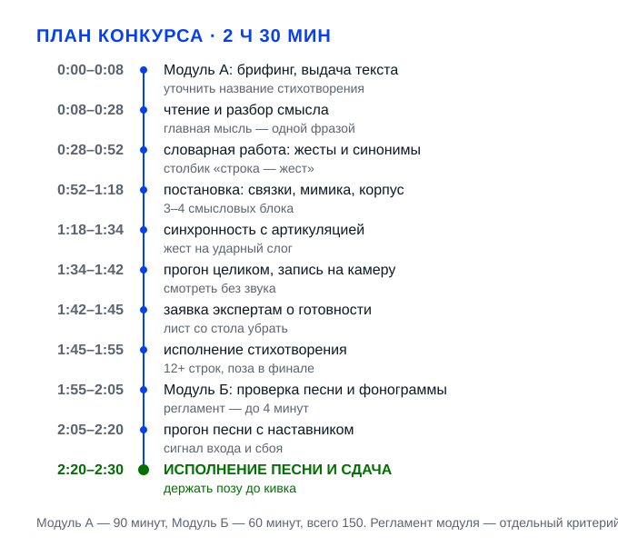
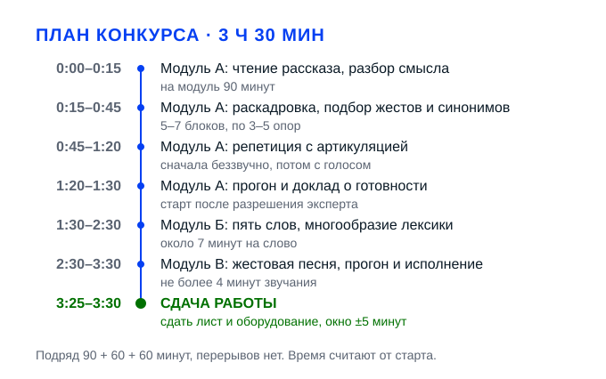
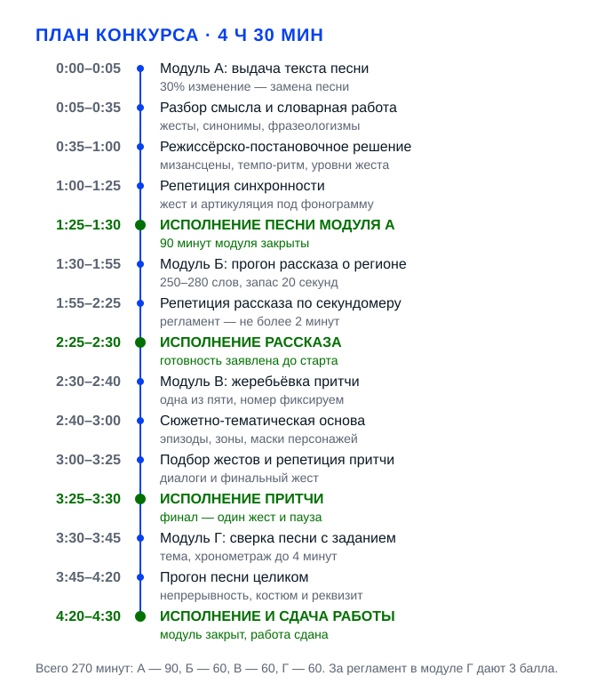

Жестовое искусство (Р,О)
Задания ниже — официальные файлы «Абилимпикс» (источник: abilympics-russia.ru), разложенные по категориям. Решения написаны по тексту задания, регламенту и критериям оценки; в них указано, что именно проверяет эксперт.
Школьник
14–16 лет, базовый уровень заданияВыдержка из официального конкурсного задания: страницы, относящиеся к категории «Школьник» (стр. 5–10 источника).
Пошаговое решение
Конкурсное задание категории «Школьники» состоит из двух модулей и длится сто пятьдесят минут. В Модуле А, на который отведено девяносто минут, вы получаете стихотворение Ф.И. Тютчева из школьной программы объёмом не менее двенадцати строк, разбираете его по смыслу, подбираете жесты и синонимы, а затем выразительно читаете на жестовом языке синхронно с артикуляцией словесной речи или проговариванием слов вслух. В Модуле Б, шестьдесят минут, исполняется заранее приготовленная песня о Единстве народов России длительностью не более четырёх минут; наставник вправе помогать артикуляцией. За Модуль А дают до пятидесяти баллов: тридцать пять — за содержание, подбор жестов, синонимы, лексический запас, синхронность и полноту, пятнадцать — за актёрское мастерство и жестовое искусство. Главный эксперт может изменить до тридцати процентов задания, а что делать при замене, разобрано ниже.

Задача 1. Разобрать стихотворение Ф.И. Тютчева и собрать словарь жестовМодуль А · смысл и лексика · до 20 баллов
Модуль А начинается не с жестов, а с текста. На площадке вы получаете лист со стихотворением Тютчева из школьной программы, не менее двенадцати строк, и первые сорок минут уходят на то, чтобы понять смысл, разбить текст на смысловые блоки и подобрать к каждому ключевому слову жест, который читается без голоса. Именно здесь набираются двадцать баллов из тридцати пяти: содержание и смысл, подбор жестов, синонимы и уровень лексического запаса. Дальше вы будете только исполнять то, что собрали на этом этапе, поэтому экономить время на разборе нельзя.
Действие 1.1. Прочитать текст и понять, о чём стихотворение
Шаг 1.1.1
Берём выданный на площадке лист и читаем текст дважды про себя: первый раз целиком, не останавливаясь и не разбирая детали, второй раз медленно, с карандашом в руке. Сразу выясняем три вещи: как называется стихотворение и кто автор, о каком состоянии природы или души в нём говорится, от чьего лица идёт речь. Название и фамилию автора записываем в верхнем углу листа крупно, печатными буквами, потому что объявлять их придётся вслух перед экспертами, и запинаться на них не нужно.
Критерий «Определение содержания и смысла стихотворения» стоит 5 баллов, и проверяется он по тому, совпадает ли показанное с текстом. Стихотворение из школьной программы вам, скорее всего, знакомо, но на площадке его выдают в печатном виде, а на память полагаться нельзя: строки переставляются, и вместе с ними рассыпается вся постановка. Два прочтения нужны потому, что при первом глаз цепляется за ритм, а смысл складывается только на втором.
Проверяем себя тремя вопросами, на которые отвечаем вслух шёпотом: как называется стихотворение, о чём оно в одном предложении, кто в нём «действует» — человек, природа или время. Если хотя бы на один вопрос ответа нет, читаем ещё раз, но уже медленнее, по строфе за раз, и после каждой строфы закрываем глаза на пять секунд, чтобы увидеть картинку.
Самая частая ошибка — начать сразу показывать жесты, едва пробежав текст глазами: получается набор красивых движений без смысла, и эксперты видят это с первой строки. Вторая ошибка — перепутать название при объявлении, что сбивает и вас, и счёт времени модуля.
Эксперт слушает объявление названия и смотрит первые две строки: по ним уже видно, разобрался участник в содержании или переводит слова по отдельности. Ошибку в названии он фиксирует сразу, до начала исполнения.
Шаг 1.1.2
Читаем текст вслух, не торопясь, и подчёркиваем карандашом всё, что звучит непривычно: устаревшие слова, необычный порядок слов, метафоры, слова в переносном значении. На полях рядом с каждым таким местом пишем свой простой синоним, одной строкой, обычными словами из повседневной речи. Отдельно, другим значком, помечаем слова, которые на жестовом языке не переводятся одним жестом и требуют описания: блеск, шелест, дуновение, замирание.
Тютчев почти каждую строку держит на метафоре, а метафора на жестовом языке не переводится пословно: жест «блеск» покажет только блеск, но не «янтарный вечер». Критерий «Подбор подходящих по смыслу жестов к стихотворению» — это 5 баллов, и они дают за смысловое соответствие, а не за количество движений. Пометки на полях нужны ещё и потому, что через сорок минут вы будете повторять текст по этому же листу, и разбираться заново будет некогда.
Проверяем так: закройте лист и перескажите каждую строку своими словами, не подглядывая. Если на какой-то строке вы замолчали или начали повторять её же слова — там смысл не разобран, и именно к ней надо вернуться. Второй признак готовности: у каждого подчёркнутого слова на полях есть короткое объяснение.
Ошибка новичка — пропустить непонятное слово и решить, что «в целом понятно». На исполнении пауза появляется именно на нём, лицо теряет уверенность, и эксперт сразу видит непроработанную строку. Вторая ошибка — записывать объяснения длинными фразами, которые потом невозможно прочитать в спешке.
Эксперт сверяет исполнение со своим экземпляром текста и отмечает, передан ли образ или показаны отдельные слова без связи между ними. Смотрит он прежде всего строки с метафорами: там разница видна с первого жеста.
Шаг 1.1.3
Формулируем главную мысль стихотворения одним предложением и записываем её в самом верху листа, над текстом, крупно. Предложение должно быть простым: кто или что показано, что с этим происходит, чем всё заканчивается. Например, для стихотворения о весеннем пробуждении это звучит как «зима уходит, природа оживает и радуется», и дальше каждая строфа работает на эту мысль.
Одна фраза наверху листа — это ваш компас. Когда на репетиции вы будете сомневаться, какой жест выбрать, ответ всегда один: тот, который ведёт к этой мысли. Кроме того, именно эта формулировка помогает выполнить критерий «Определение содержания и смысла»: эксперт видит цельный замысел, а не пересказ строк по очереди. Без главной мысли исполнение распадается на куски, и связность теряется.
Проверьте формулировку на прочность: подставьте её к каждой строфе и спросите себя, работает ли строфа на неё. Если какая-то строфа явно выпадает, значит либо мысль сформулирована узко, либо строфа понята неверно, и надо вернуться к тексту.
Типичная ошибка — записать вместо мысли тему: «стихотворение о природе». С такой записью нельзя принять ни одного решения по жестам, и на репетиции вы будете метаться между вариантами до самого выхода.
Эксперт редко слышит эту фразу целиком, но видит её следствие — цельность исполнения от первой строки до последней. Набор красивых, но не связанных между собой жестов он отмечает как отсутствие замысла.
Действие 1.2. Разметить текст по смысловым блокам
Шаг 1.2.1
Делим стихотворение на три или четыре смысловых блока и каждый обводим тонкой рамкой, а на полях подписываем одним словом: «ожидание», «перелом», «радость», «тишина». Границы проводим не механически по строфам, а по смене картинки: если в середине строфы одно состояние сменяется другим, рамка идёт внутри строфы. На двенадцать строк обычно получается три блока по четыре строки.
Блоки — это будущие части исполнения, между ними делаются паузы и меняется положение корпуса. Критерий «Исполнение стихотворения в полном объёме» на 5 баллов требует, чтобы текст прозвучал целиком и без провалов, а провалы появляются как раз на стыках, когда участник не помнит, чем заканчивается один блок и начинается другой. Размеченные границы снимают половину заминок на репетиции.
Проверяем простым способом: назовите блоки по порядку, не глядя в текст. Если получается «ожидание — перелом — радость», разметка верна. Если названия повторяются или звучат одинаково, блоки выделены формально и надо искать настоящую смену состояния.
Ошибка — нарезать текст строго по строфам, не глядя на смысл: тогда внутри блока оказываются два разных настроения, и переход между ними выглядит рваным. Вторая ошибка — сделать слишком много блоков, по строке: исполнение превращается в перечисление и теряет дыхание.
Эксперт отмечает паузы и смену рисунка между блоками: ровное, одинаковое исполнение всех строк он фиксирует как недостаточно выразительное. Границы блоков видны ему по корпусу и по темпу, даже без текста перед глазами.
Шаг 1.2.2
В каждом блоке находим ключевые слова — те, на которых держится образ, и обводим их кружком. Это почти всегда существительные-образы и глаголы действия: ветер, тишина, луч, дышит, тает, блестит. Больше двух-трёх кружков на строку не нужно: если обвести всё, словарь становится неподъёмным, и на исполнении вы будете думать о жестах, а не о смысле. Работаем по одному блоку за раз, чтобы не терять счёт строкам.
Именно эти слова станут опорными точками перевода, всё остальное — связки, местоимения и служебные слова — показывается по ходу и почти не требует отдельных жестов. Критерий «Уровень лексического запаса русского жестового языка» на 5 баллов оценивает как раз точность и разнообразие этих опорных жестов, а не их количество. Двенадцать строк со словарём из восьми-десяти точных жестов читаются лучше, чем двенадцать строк с тридцатью приблизительными.
Проверьте себя: пройдите по кружкам и назовите для каждого одним словом, что он обозначает. Если для двух кружков вы называете одно и то же, второй лишний — вычеркните его, иначе в переводе появится повтор, который эксперт заметит.
Типичная ошибка — обвести все существительные подряд, включая «небо», «воздух», «время», и потом искать для них отдельные жесты. Получается тяжёлый подстрочник, в котором тонут главные образы. Тогда учить его придётся наизусть целиком, а времени на это уже не останется.
Эксперт смотрит на разнообразие и точность показа: один и тот же жест, повторённый пять раз подряд, читается у него как бедный словарь. Оценивает он ключевые образы, а служебные слова вниманием не обходит.
Шаг 1.2.3
Отмечаем места, где меняется настроение: на границах блоков и внутри них ставим карандашом косую черту — одна черта означает короткую паузу, две черты длинную, примерно в две секунды. Над строками, где чувство нарастает, рисуем стрелку вверх, над строками, где оно стихает, — стрелку вниз. В конце стихотворения ставим две черты: последняя строка почти всегда требует паузы перед собой.
Интонация в жестовом искусстве передаётся не голосом, а темпом, амплитудой и паузами, и критерий «Выразительное чтение на основе самостоятельной интерпретации» на 5 баллов оценивает именно это. Разметка превращает субъективное «сыграть проникновенно» в конкретные решения: где замедлиться, где расширить жест, где остановиться. Без разметки участник держит ровный темп все двенадцать строк, и экспертам нечего отметить.
Проверяем на слух и на глаз: прочитайте текст вслух по разметке и посчитайте, сколько пауз получилось. На двенадцать строк их нужно три-четыре, не больше; если пауза стоит почти после каждой строки, исполнение разваливается на отдельные фразы и теряет течение.
Ошибка — расставить паузы механически, через каждые две строки, не связывая их со сменой состояния. Вторая ошибка — сделать паузу слишком длинной: три секунды молчания в маленьком зале выглядят как забытый текст.
Эксперт фиксирует, совпадает ли смена темпа с кульминацией: монотонное исполнение снижает у него оценку за выразительность. Особенно внимателен он к паузе перед последней строкой, потому что там видно, чувствует ли участник форму.
Шаг 1.2.4
Проходим по тексту строку за строкой и проверяем, что ни одна не осталась без жестовой опоры. Для каждой строки должно быть принято решение: какой жест её держит и к какому блоку она относится. Строки, где решения нет, помечаем восклицательным знаком на полях, и работаем с ними отдельно, пока не найдём образ. На эту проверку отводим ровно пять минут и идём строго по порядку, начиная с первой строки: так ни одна строка не останется в конце списка без внимания.
Пропущенная строка — самая дорогая ошибка этапа, потому что её видно всем: участник доходит до середины, останавливается и начинает искать словарь в памяти. Критерий «Исполнение стихотворения в полном объёме» на 5 баллов снимается сразу, а вместе с ним проседает синхронность, ведь на восстановление уходит пять-десять секунд, и артикуляция с жестом расходятся. Проверка по строкам занимает пять минут и стоит этих баллов.
Хороший тест — покажите стихотворение целиком, глядя только на лист с разметкой, и попросите наставника отметить строки, где вы замедлились или сбились. Эти строки и есть список того, что не проработано.
Частая ошибка — оставить без решения короткие строки вроде «и тихо, и светло», считая, что они пройдут сами. Именно на них и возникает заминка, потому что в короткой строке нет зацепки. Вторая ошибка — оставлять разбор строк на конец модуля: в последние минуты решение принимается наспех и жест получается случайным.
Эксперт замечает провал сразу: одна строка, показанная приблизительно, разбивает впечатление от всего текста. Он ждёт, что стихотворение прозвучит целиком, без остановок, повторов и поиска слов.
Действие 1.3. Подобрать жесты по смыслу
Шаг 1.3.1
Выписываем все обведённые ключевые слова в столбик на второй половине листа и напротив каждого пишем жест-кандидат, которым этот образ можно показать. Пишем коротко, своими словами: «ветер — ладонь ведёт от себя», «тишина — палец к губам и замирание», «свет — раскрытые пальцы от лица вверх». Такая запись нужна, чтобы через полчаса не вспоминать заново, что вы имели в виду.
Столбик «слово — жест» — это ваш рабочий словарь, и он же закрывает критерий «Подбор подходящих по смыслу жестов» на 5 баллов. Опытные участники делают его всегда, потому что держать в голове двенадцать строк перевода одновременно невозможно. Кроме того, письменный словарь позволяет увидеть повторы: два одинаковых жеста на разные слова видны только на бумаге.
Проверьте, что в столбце нет двух одинаковых описаний. Если для «тишины» и «покоя» у вас записано одно и то же движение, одно из слов надо перевести иначе, иначе в исполнении появится смысловая склейка.
Ошибка — держать словарь в голове и надеяться на память: под нагрузкой забывается именно середина списка, и исполнение проваливается в середине стихотворения. Вторая ошибка — писать в столбец названия жестов из учебника, которые вы не можете показать уверенно.
Эксперт оценивает точность попадания: слово и жест должны совпадать по смыслу, а не по звучанию. Проверяет он это по ключевым образам, которые слышны в самом тексте, и по тому, как они связаны между собой.
Шаг 1.3.2
Для каждого многозначного слова выбираем жест по контексту, а не по первому значению. Слово «свет» в строке о рассвете и слово «свет» в строке о светлой печали — это разные жесты: в первом случае раскрытая ладонь поднимается вверх, во втором работает выражение лица и мягкое движение у груди. Так же разбираем «тепло», «дыхание», «бег» и «крыло». Так проверяем два спорных слова, не больше.
Русский жестовый язык опирается на смысл, а не на слово, и подстрочный перевод — первая причина снижения оценки за точность. Эксперт, владеющий жестовым языком, видит несоответствие мгновенно: жест правильный по форме, но не тот по значению. Разбор многозначности занимает немного времени и заметно поднимает качество исполнения.
Проверяем обратным ходом: покажите выбранный жест наставнику без голоса и спросите, какое слово он видит. Если наставник называет другое значение, жест надо менять, даже если форма кажется вам красивой.
Типичная ошибка — выбрать жест по внешней выразительности, а не по смыслу строки: красивое движение притягивает взгляд, но разрушает образ, и эксперты отмечают несоответствие тексту. Особенно часто так происходит со словами, у которых в бытовой речи одно значение, а в поэтической строке совсем другое.
Эксперт сверяет жест со строкой и отмечает случаи, когда показано другое значение слова. Для многозначных слов он ждёт решения по контексту, а не первого значения из словаря, и это слышно в первые секунды.
Шаг 1.3.3
Берём три-четыре самых сложных места и делаем обратный перевод: показываем фрагмент из двух-трёх строк наставнику или товарищу, который не видел ваш словарь, и просим пересказать, что он понял. Слушаем не вежливые замечания, а точные слова: если в ответ звучит «что-то про движение» вместо «ветер гонит листья», значит образ не читается. Делаем так с тремя местами подряд, и на каждое отводим не больше двух минут: дольше перебирать варианты бессмысленно, время модуля ограничено.
Обратный перевод — единственный честный способ узнать, работает ли постановка. Критерий «Уровень лексического запаса» и «Точность исполнения жестов» проверяются именно так: эксперт, не знающий вашего замысла, должен понять текст без пояснений. Три прохода обратного перевода закрывают почти все смысловые дыры, которые потом уже не исправить.
Запишите, какие места не прочитались с первого раза. Если таких мест больше двух, меняйте не отдельные жесты, а всю строку: возможно, выбран не тот образ, и нужно показать его через действие, а не через предмет.
Ошибка — показывать фрагмент человеку, который знает текст наизусть: он угадает смысл по памяти и подтвердит то, чего нет. Вторая ошибка — обижаться на замечания и оставлять всё как есть. Третья ошибка — спрашивать того, кто уже слышал ваш замысел вслух: он подтвердит любую версию.
Эксперт делает то же самое: смотрит исполнение и переводит его для себя, не подглядывая в задание. Три-четыре самых сложных места он проверяет особенно внимательно, потому что по ним видно уровень подготовки.
Действие 1.4. Подобрать синонимы и развернуть лексику
Шаг 1.4.1
Для пяти-шести ключевых слов подбираем по два синонимичных жеста, а не по одному. К «тишине» это будет замирание с пальцем у губ и плавное раскрытие ладоней вниз, к «свету» — подъём раскрытой кисти от уровня лица и мягкое разведение рук в стороны. Оба варианта записываем рядом в столбце, через дробь, и отмечаем, какой из них выглядит крупнее. Записываем оба варианта сразу, а не по памяти.
Критерий «Подбор подходящих синонимов к стихотворению» стоит отдельные 5 баллов, и проверяется он именно так: эксперт смотрит, умеете ли вы показать одно и то же понятие разными жестами. Умение перебирать варианты — признак живого владения языком, тогда как единственный заученный жест на каждое слово читается как выученный текст, а не как речь. Кроме того, запасной вариант спасает, если основной жест в конкретной строке не ложится по ритму.
Проверяем честно: покажите оба варианта подряд и посмотрите, различаются ли они по смыслу или только по форме. Если различие только в амплитуде, это не синоним, а один и тот же жест, и второй вариант надо искать дальше.
Ошибка — записать два варианта, которые на деле означают разное: «тишина» и «молчание» в бытовой речи близки, но в стихотворении о природе второе не подходит. Эксперт замечает такую подмену и снижает оценку за точность.
Эксперт смотрит именно на перебор: два разных по смыслу и по рисунку жеста на одно понятие он отмечает как плюс. Варианты, различающиеся только амплитудой, он синонимами не считает и балл за них не даёт.
Шаг 1.4.2
Из двух вариантов выбираем тот, который соответствует стилю стихотворения: у Тютчева слог высокий, поэтому крупный, развёрнутый жест с широкой амплитудой подходит больше, чем мелкий бытовой. Выбранный вариант обводим, второй оставляем на полях как запасной и помечаем буквой «з». Там, где строки идут быстро, наоборот, оставляем более компактный жест, чтобы не отставать от артикуляции.
Стилевое соответствие — часть критерия «Выразительное чтение на основе самостоятельной интерпретации» на 5 баллов. Бытовой мелкий жест в торжественной строке выглядит как будничная речь и снижает художественный уровень, который оценивают отдельные 15 баллов за актёрское мастерство. Крупный жест требует больше времени, поэтому его ставят в медленные строки, а не в середину быстрого перечисления.
Проверьте решение на прогоне: покажите блок с выбранными вариантами и посмотрите, не выбивается ли один жест из общего рисунка. Если рука после него «зависает» в воздухе, значит амплитуда для этой строки слишком большая.
Ошибка — выбрать самый эффектный жест для каждой строки: исполнение превращается в непрерывное размахивание, и кульминация теряется, потому что все строки одинаково крупные. Кульминация в таком исполнении не читается совсем, и баллы за выразительность падают.
Эксперт отмечает соразмерность жеста смыслу строки: в лирике он ждёт сдержанности, в кульминации — разворота. Резкий переход от мелкого бытового движения к крупному он читает как невыстроенность, а не как приём.
Шаг 1.4.3
Сводим выбранные жесты в итоговый словарь: переписываем начисто столбец, где против каждой строки стоит один, окончательный жест, без вариантов. Проверяем список на повторы: один и тот же жест не должен выпадать на две разные строки подряд. Если повтор есть, заменяем второй случай на запасной вариант с пометкой «з» или меняем образ. Чистовик держим рядом с текстом до самого выхода.
Итоговый словарь — то, что вы будете показывать на исполнении, и в нём не должно остаться развилки: любая развилка в момент выступления превращается в секундную заминку. Критерий «Уровень лексического запаса русского жестового языка» на 5 баллов снижается за бедность и повторяемость, а не за простоту: восемь разных точных жестов читаются богаче, чем пятнадцать с повторами. Чистовик занимает пять минут и экономит их десяток на репетиции.
Проверяем так: пройдите по чистовику и назовите вслух номер строки и жест. Если на какой-то строке вы задумались дольше двух секунд, значит выбор ещё не сделан, и в этом месте на исполнении будет провал.
Ошибка — оставить в чистовике два варианта «на всякий случай»: в нужный момент рука выбирает не тот, и строка получается смазанной. Вторая ошибка — потерять чистовик и вернуться к черновику с пометками.
Эксперт видит результат этой работы как ровность исполнения: похожие образы не дублируются, а одинаковые строки показаны по-разному. Задумчивость на отдельной строке он читает как неотработанный словарь.
Задача 2. Поставить чтение стихотворения на жестовом языкеМодуль А · синхронность и объём · до 10 баллов
Разобранный текст и собранный словарь — это ещё не исполнение. Теперь жест надо связать со словом: строчку за строчкой перевести на жестовый язык в его собственной логике, а потом добиться, чтобы жест и артикуляция шли в одной точке. Здесь решается судьба двух критериев по 5 баллов — синхронность жестового исполнения с артикуляцией словесной речи и исполнение стихотворения в полном объёме. На постановку по плану уходит около пятидесяти минут, и этого хватает только тем, кто не переделывает всё заново.
Действие 2.1. Перевести строки на жестовый язык
Шаг 2.1.1
Переводим построчно, но не слово в слово, а по смыслу: сначала называем то, о чём идёт речь, потом показываем, что с этим происходит. Строку «ветер гонит листья по дороге» на жестовом языке удобнее показать так: «листья — ветер — гнать — дорога», то есть сначала предмет, потом действие и место. Русский порядок слов при этом ломается сознательно, потому что жестовый язык строит фразу иначе.
Русский жестовый язык имеет собственную грамматику, и порядок «тема — комментарий» для него естественен, а копирование порядка слов русского текста называется калькированием и читается как неживая речь. Критерий «Подбор подходящих по смыслу жестов» на 5 баллов и «Точность исполнения жестов» прямо связаны с этим выбором: эксперт слышит кальку сразу. Кроме того, естественный порядок короче и укладывается в темп артикуляции.
Проверяем строку так: покажите её наставнику и попросите назвать, что он увидел, не заглядывая в текст. Если он называет предмет, действие и место в том же порядке, что и вы, фраза построена правильно. Если путается, поменяйте порядок и покажите снова.
Типичная ошибка — сохранять русский порядок слов из уважения к тексту: получается длинная цепочка жестов, в которой теряется смысл, а времени уходит больше, чем есть в строке. На исправление кальки уходит больше времени, чем на изначально верный перевод, поэтому порядок слов продумывают сразу.
Эксперт отмечает естественность высказывания: калькирующий перевод снижает у него оценку даже при точной форме отдельных жестов. Порядок «тема — комментарий» он слышит в первых же двух строках и по нему судит о школе.
Шаг 2.1.2
Для метафор, которые не переводятся одним жестом, строим описательные конструкции и классификаторы: «янтарный блеск» показываем не жестом «блеск», а медленным разведением раскрытых пальцев от уровня глаз в стороны, «шелест» — мелким колебанием пальцев у уха. Такие конструкции собираются из двух-трёх движений и занимают столько же времени, сколько одна длинная строка.
Метафора — то, за что в этом задании дают и теряют больше всего: именно она отличает выразительное чтение от пересказа, и именно её труднее всего перевести. Пятнадцать баллов за актёрское мастерство и жестовое искусство начисляются в том числе за найденный образ, а не за правильные отдельные жесты. Описательная конструкция при этом не должна быть длиннее строки, иначе вы начнёте отставать от артикуляции и потеряете синхронность.
Проверяем по секундомеру: покажите строку с метафорой и замерьте время. Если она занимает больше трёх секунд, конструкция перегружена, и одно движение надо убрать. Ориентир простой: одна строка стихотворения в среднем темпе — две-три секунды.
Ошибка — заменять метафору прямым называнием предмета: «блеск» вместо «янтарного блеска» превращает поэзию в перечень, и образ пропадает вместе с баллами за выразительность. Если описательная конструкция длиннее трёх движений, вы не успеваете к следующей строке и теряете синхронность.
Эксперт смотрит, показан ли образ: удачная классификаторная конструкция читается у него как режиссёрское решение и запоминается. Прямое называние предмета вместо метафоры он отмечает как потерю художественного уровня.
Шаг 2.1.3
Собираем переведённые строки в целое: между блоками ставим связки — короткое движение кистью или смену положения корпуса, которое обозначает переход. Убираем лишние повторы, если один и тот же жест попал в две соседние строки, и проверяем, что тема стихотворения держится от начала до конца: если в середине образ уходит в сторону, возвращаем его. На каждый переход отводим полсекунды, не больше.
Связки — то, что отличает связную речь от набора фраз. Критерий «Исполнение стихотворения в полном объёме» на 5 баллов не выполняется, если текст показан кусками с провалами между ними: эксперт видит, что участник знает отдельные строки, но не держит целое. Связка занимает полсекунды и снимает ощущение рваности, не добавляя времени к исполнению.
Проверьте связки отдельно: покажите только переходы между блоками, без текста. Их должно быть три-четыре, и каждый должен выглядеть как естественное движение, а не как пауза с опущенными руками. Проверяем на слух, не сбиваясь на перечисление.
Ошибка — на каждой границе опускать руки вниз и начинать заново: это читается как остановка, и целостность исполнения рассыпается. Вторая ошибка — делать связки слишком заметными, отвлекая внимание от текста.
Эксперт отмечает плавность: связное исполнение он воспринимает как одно произведение, а не как двенадцать отдельных строк. Провалы на стыках блоков он фиксирует отдельно, потому что по ним видно, учил участник целое или кусками.
Шаг 2.1.4
Записываем последовательность на отдельный лист в столбик: номер строки и одно слово-напоминание о жесте, без подробных описаний. Двенадцать строк — двенадцать коротких строк записи, которые можно охватить взглядом за секунду. Этот лист остаётся на столе во время репетиции и убирается перед выходом. Двенадцать строк записываются за три минуты, и это время возвращается на первом же прогоне: сверяться со столбиком быстрее, чем вспоминать.
Запись последовательности нужна для репетиции, а не для выступления: на репетиции вы сверяетесь с ней в спорных местах, и время не уходит на воспоминания. Кроме того, столбик сразу показывает, где ритм проваливается: если на две соседние строки приходится один и тот же жест, это видно глазами. Правило конкурса запрещает пользоваться собственными материалами во время исполнения, поэтому лист со стола убирается до выхода.
Проверяем: закройте лист и покажите первые четыре строки по памяти. Если получается без запинки, запись больше не нужна как опора и остаётся только как страховка на репетиции. Отдельно сверяем, что записанные строки идут по порядку номеров без пропусков: пропуск в столбике означает пропуск в исполнении.
Ошибка — записывать развёрнутые описания жестов: такой лист невозможно прочитать за секунду, и вместо помощи он превращается в задержку. Вторая ошибка — оставить лист на столе во время исполнения, что нарушает условие работы без своих материалов.
Эксперт видит только результат, но по ровности исполнения ему понятно, была ли у участника выстроенная последовательность. Заминки во второй половине текста он относит к тому, что участник доучивал начало, а конец оставил на память.
Действие 2.2. Синхронизировать жест с артикуляцией
Шаг 2.2.1
В каждой строке определяем опорное слово — то, на котором стоит главный жест, и подчёркиваем его в тексте. Обычно это ударный слог смыслового слова: «вЕтер», «листья», «дорОга». Главный жест строки должен приходиться именно на этот слог, а остальные движения распределяются до и после него как подготовка и завершение. Опорное слово подчёркиваем одной чертой, а второстепенные движения помечаем точками на полях, чтобы на репетиции видеть, где перевод можно упростить.
Синхронность жестового исполнения с артикуляцией словесной речи — отдельный критерий на 5 баллов, и он проверяется по совпадению смыслового жеста с произносимым словом. Когда главный жест попадает на ударный слог, зритель видит и слышит одно и то же в один момент, и это воспринимается как естественная речь. Если жест запаздывает или опережает, возникает ощущение рассинхрона, даже когда оба компонента выполнены правильно.
Проверяем в замедлении: проговорите строку вслух и одновременно покажите её, растянув темп вдвое. Если главный жест приходится на ударный слог без усилий, опорное слово выбрано верно. Если приходится подгонять, значит жест в строке не один и надо упростить перевод.
Ошибка — ставить главный жест на первое слово строки механически: ударение часто стоит в середине, и жест уезжает вперёд на полсекунды, что заметно сразу. Исправляется это только полной переработкой строки, а не подгонкой темпа.
Эксперт смотрит именно на совпадение: жест и артикуляция в одной точке — это и есть те 5 баллов. Проверяет он это на строках с длинными словами, где расхождение заметно сильнее, чем на коротких.
Шаг 2.2.2
Учим строку в медленном темпе: проговариваем вслух, растягивая каждое слово, и одновременно показываем жест, как будто движение в воде. На одну строку уходит пять-шесть секунд вместо двух-трёх, и так проходим весь текст от начала до конца. Повторяем блок трижды, пока движения не станут идти без обдумывания. Если блок не получается с третьего раза, не повторяем его механически, а возвращаемся к переводу: чаще всего причина в том, что строка переведена слишком длинно.
Медленный темп — единственный способ поймать рассинхрон, который в нормальном темпе не виден. На скорости мозг успевает подстроить жест под слово, а на выступлении, когда добавляется волнение, эта подстройка ломается, и жест отстаёт. Три медленных прохода блока дают устойчивый навык: движение начинает запускаться от слова, а не от мысли о движении.
Проверяем по признаку автоматизма: если во время медленного прохода вы можете одновременно смотреть в глаза воображаемому зрителю, строка освоена. Если взгляд уходит вниз, к рукам, значит движение ещё под контролем сознания.
Ошибка — учить сразу в быстром темпе: рассинхрон закрепляется, и потом его труднее исправить, чем выучить заново. Вторая ошибка — учить весь текст целиком без разбивки на блоки, из-за чего середина забывается к моменту, когда доходят до конца.
Эксперт оценивает ровность: в медленных местах синхронность видна лучше всего, и там ошибки заметнее. По этим фрагментам он понимает, отрабатывал участник текст в спокойном темпе или сразу гнал на скорости.
Шаг 2.2.3
Отрабатываем запаздывание и опережение отдельно: берём строку и показываем её трижды — с жестом, начатым на полсекунды раньше слова, точно в слово и на полсекунды позже. Запоминаем ощущение точного попадания, потому что оно отличается от остальных: рука приходит в конечную точку одновременно с концом произносимого слова, а не после него. Показ ведём перед зеркалом или камерой телефона.
Разница в полсекунды на выступлении выглядит как разница в целое слово, и эксперты фиксируют её как нарушение синхронности. Тренировка на трёх вариантах нужна потому, что ошибка почти всегда в одну сторону: участники торопят жест, стараясь успеть показать всё, и рука убегает вперёд. Критерий на 5 баллов снимается не за грубый сбой, а именно за это систематическое опережение.
Проверяем на записи: снимите строку на телефон и посмотрите покадрово. Видно, в каком кадре рука приходит в точку и в каком заканчивается слово. Расхождение больше одного-двух кадров — повод переделать строку.
Ошибка — ускорять жест, чтобы «успеть показать всё»: в результате он теряет чёткость и уезжает вперёд. Вторая ошибка — наоборот, задерживать жест до конца фразы, из-за чего он попадает на паузу. Теряется и чёткость формы, а вместе с ней точность.
Эксперт смотрит на конец строки: там расхождение видно лучше всего, потому что рука и голос расходятся именно на завершении. Систематическое опережение он отмечает как устойчивый навык, а не как случайную оплошность.
Шаг 2.2.4
Ловим ритм: включаем метроном на 60–70 ударов в минуту или просто считаем вслух «раз-и-два-и» и показываем текст под этот счёт, попадая главным жестом в сильную долю. В паузах, размеченных двойной чертой, счёт останавливаем и держим позу две секунды, а потом продолжаем с той же доли. Счёт ведём вслух только на первых двух проходах, дальше переходим на беззвучный счёт губами, чтобы не сбивать артикуляцию.
Стихотворный ритм — это то, что удерживает исполнение от разваливания на отдельные строки, и критерий «Выразительное чтение на основе самостоятельной интерпретации» напрямую связан с ним. Метроном на 60–70 ударов соответствует спокойному стихотворному темпу и не даёт ни гнать, ни тянуть. Паузы, удержанные по счёту, не выглядят как забытый текст, а читаются как приём.
Проверьте себя: пройдите один блок под счёт и посмотрите, не сбились ли вы с доли после паузы. Если после остановки ритм восстанавливается не сразу, считайте в паузе про себя, а не молчите полностью. Считаем до восьми и сверяем с метрономом.
Ошибка — считать слишком быстро и превращать чтение в скороговорку: жесты становятся мелкими, лицо теряет выражение. Вторая ошибка — останавливать счёт в паузах, из-за чего после них темп сбивается. Метроном помогает это услышать, а не угадать.
Эксперт отмечает дыхание исполнения: ровный ритм с осмысленными паузами входит у него в оценку за выразительность. Сбитый после паузы темп он читает как потерю формы, даже если текст показан правильно.
Действие 2.3. Отработать выразительность, мимику и корпус
Шаг 2.3.1
Работаем с лицом: брови и углы губ в жестовом языке несут грамматику и оценку, поэтому для каждой строки решаем, что делает лицо. Вопрос — брови вверх, отрицание — сведённые брови и поворот головы, восхищение — раскрытые глаза и приподнятые уголки губ, печаль — опущенные внешние края бровей. Проверяем себя в зеркале или на фронтальной камере телефона.
Мимика в жестовом языке обязательна: без неё высказывание становится непонятным или двусмысленным, а в художественном исполнении она ещё и создаёт настроение. Пятнадцать баллов за актёрское мастерство и жестовое искусство начисляются за выразительность и артистичность, и лицо здесь весит не меньше рук. Участники, которые «держат лицо» ровным, теряют эту часть оценки, даже если жесты правильные.
Проверяем без рук: покажите только лицом одну строку, спрятав кисти за спину, и посмотрите на запись. Если по лицу понятно, о чём строка, мимика работает. Если лицо одинаковое во всех строках, работа не сделана.
Ошибка — улыбаться всё исполнение подряд: улыбка как фон убивает и грусть, и торжественность. Вторая ошибка — наоборот, держать каменное лицо, считая, что «поэзия не про эмоции». Улыбка «по умолчанию» особенно заметна в строках о тишине и печали, где она прямо противоречит смыслу.
Эксперт смотрит в лицо в первую очередь: мимика читается на любом расстоянии, в отличие от мелких деталей кисти. Одинаковое выражение лица на всех строках он отмечает как отсутствие актёрской игры.
Шаг 2.3.2
Ставим корпус и взгляд: при смене блока поворачиваем корпус на 15–20 градусов, а взгляд направляем в конкретную точку пространства, где «находится» то, о чём идёт речь. Если в строке говорится о небе, взгляд идёт вверх и чуть в сторону, а жест идёт за взглядом. Между блоками возвращаемся в исходное положение и смотрим на зрителя. Положение корпуса запоминаем по ступням: мелом ничего обводить не нужно, достаточно вернуться в ту же стойку после каждого блока.
Пространство в жестовом языке работает как система координат: то, что показано справа, остаётся справа до конца высказывания, и зритель это отслеживает. Корпус, повёрнутый на 15–20 градусов, создаёт ощущение смены картины без лишних движений и экономит время. Критерий «Точность исполнения жестов» включает и это: жест, показанный не в той зоне, читается как другой.
Проверяем с расстояния: попросите наставника отойти на три метра и показать, куда вы смотрите в каждой строке. Если взгляд «плавает» или уходит в пол, позиция не выстроена. Второй признак: если наставник с трёх метров может сказать, в какую сторону вы смотрите в каждом блоке, зоны выстроены.
Ошибка — смотреть в пол или на собственные руки: это разрывает контакт со зрителем и читается как неуверенность. Вторая ошибка — крутиться вокруг своей оси, из-за чего зоны пространства путаются. Зоны приходится пересчитывать заново, а времени на это уже нет.
Эксперт сидит в двух-трёх метрах и видит направление взгляда: это один из самых заметных признаков подготовленности. Эксперт сидит в двух-трёх метрах и видит направление взгляда: это один из самых заметных признаков подготовленности. Отдельно он отмечает, стабильна ли зона показа.
Шаг 2.3.3
Выстраиваем амплитуду по нарастанию: в лирических строках жесты идут близко к корпусу, в кульминации расходятся широко, на последней строке снова собираются. Разницу делаем примерно в полтора-два раза по размаху, но не по скорости: быстрый мелкий жест и медленный крупный — это два разных инструмента, и путать их нельзя. Отмечаем на листе три уровня амплитуды — малый, средний и большой — и напротив блоков ставим нужный, чтобы на репетиции не решать это заново.
Амплитуда — главный инструмент выразительности в жестовом искусстве, потому что заменяет громкость голоса. Одинаковый размах на всех строках эксперт читает как отсутствие интерпретации, и баллы за выразительность снижаются. При этом крупный жест требует времени, поэтому его ставят в медленные строки: попытка сделать размах в быстрой строке приводит к потере синхронности.
Проверяем на записи, снятой с трёх метров: если по силуэту видно, где кульминация, амплитуда выстроена. Если все кадры выглядят одинаково, разница слишком мала, и её надо увеличить. Сравните первый и последний кадр записи: если силуэт в них одинаковый, развития нет.
Ошибка — начинать сразу с широкого жеста и держать его до конца: дальше некуда расти, и финал оказывается слабее начала. Вторая ошибка — делать вывод только по тексту, не глядя на себя со стороны. Смотреть надо на силуэт целиком, а не на пальцы.
Эксперт оценивает развитие: нарастание от начала к кульминации должно быть видно глазом, без пояснений. Одинаковый размах на всех строках он читает как отсутствие интерпретации текста.
Шаг 2.3.4
Следим за кистями: пальцы держим вместе или в чёткой форме, а не растопыренными и не расслабленными, локоть не прижимаем к корпусу, предплечье работает свободно. Перед каждой репетицией разминаем кисти две минуты: вращение, сжатие-разжатие, потягивание пальцев. Мокрые или замёрзшие руки теряют чёткость, поэтому перед выходом держим их в тепле. Кисти держим выше уровня пояса, иначе жест читается мелко.
Чёткость формы — это то, по чему эксперт отличает уверенное владение жестом от приблизительного, и критерий «Точность исполнения жестов» проверяется именно на кистях. Расслабленные пальцы превращают разные жесты в похожие, и смысл теряется. Разминка нужна ещё и потому, что после сорока минут работы с листом бумаги кисти «затекают», а на сцене это сразу видно.
Проверяем на записи крупным планом: снимите одну строку так, чтобы кисти занимали половину кадра, и посмотрите, читается ли форма каждого пальца. Если пальцы сливаются в пятно, жест надо укрупнить и замедлить.
Ошибка — прижимать локти к телу: движение становится мелким, и с третьего ряда ничего не видно. Вторая ошибка — напрягать кисть до дрожи, из-за чего жест выглядит скованным. Замёрзшие руки теряют форму уже на второй минуте, поэтому их греют заранее, а не растирают перед самым началом.
Эксперт смотрит кисти в самые ответственные моменты: там видно, работает участник или вспоминает. Смазанная форма пальцев читается у него как приблизительное владение жестом, даже при верном выборе.
Действие 2.4. Прогнать целиком и замерить
Шаг 2.4.1
Делаем первый полный прогон: от первой строки до последней, без остановок и без поправок, с секундомером в руке наставника. Если сбились — не начинаем заново, а подхватываем со следующей строки, как на выступлении. После прогона записываем общее время и отмечаем, на каких строках были заминки. Засекаем не только общее время, но и время каждого блока: если один блок занимает вдвое больше остальных, значит в нём слишком много движений.
Полный прогон показывает то, чего не видно при работе по блокам: где кончается дыхание, где теряется ритм, на каком стыке рассыпается последовательность. Критерий «Исполнение стихотворения в полном объёме» на 5 баллов проверяется только на целом тексте, и первый прогон почти всегда вскрывает два-три провала. Умение продолжать после сбоя — отдельный навык, и тренировать его надо заранее, а не на сцене.
Проверяем по записи заминок: если на одной и той же строке вы спотыкаетесь два прогона подряд, дело не в волнении, а в непроработанном переводе. Такие строки надо вернуть в работу и перевести иначе, проще.
Ошибка — останавливаться и начинать заново при каждом сбое: так вырабатывается привычка бросать текст, и на выступлении она сработает. Вторая ошибка — делать прогон «по кускам», не проверяя целое. Привычка закрепляется за два-три прогона и срабатывает на выступлении.
Эксперт фиксирует именно целостность: остановка и повтор строки видны ему сразу и снимают баллы за объём исполнения. Спокойное продолжение после сбоя он отмечает отдельно как плюс к актёрской части.
Шаг 2.4.2
Записываем прогон на телефон и смотрим запись без звука, с трёх метров, как будто вы посторонний зритель. Отмечаем три вещи: читается ли смысл без голоса, видно ли лицо, не «съедаются» ли кисти корпусом. Отдельно смотрим на паузы: не выглядят ли они как забытый текст. Смотрим запись дважды: первый раз целиком, без остановок, второй раз с паузами на спорных строках, чтобы понять, из-за чего смысл теряется.
Просмотр без звука — единственная честная проверка перевода: если смысл понятен только с голосом, значит жест работает как иллюстрация, а не как язык. Эксперты, владеющие жестовым языком, смотрят именно так, и критерий «Уровень лексического запаса» оценивается по читаемости без подсказок. Запись также показывает технические вещи, которые в процессе не чувствуются: закрытое лицо, прижатые локти, суетливые переходы.
Проверяем по списку из трёх пунктов: смысл, лицо, кисти. Если хотя бы один пункт провалился, его исправляют до следующего прогона, а не «в целом». Записывайте с той точки, откуда будет смотреть жюри, иначе ракурс обманет: снизу вверх жест кажется крупнее, чем есть.
Ошибка — смотреть запись с телефона в руке, на маленьком экране и в наушниках: так не видно ни лица, ни общего рисунка. Вторая ошибка — смотреть только на себя и не замечать, что смысл не читается. Смотрите запись на большом экране, если он есть в помещении.
Эксперт смотрит вживую с расстояния и в тех же условиях, поэтому запись с трёх метров ближе всего к реальности. Читаемость без голоса он проверяет первым делом, ещё до оценки формы жестов.
Шаг 2.4.3
Разбираем два самых слабых места — не больше двух, иначе не хватит времени: переделываем перевод строки, меняем жест или добавляем паузу, а потом прогоняем блок с исправлением трижды. После этого проверяем, что исправление не сломало синхронность с артикуляцией, и делаем второй полный прогон. Правки вносим карандашом на лист с последовательностью, чтобы через десять минут не вспоминать, что именно изменили.
Работа с двумя слабыми местами — это вопрос приоритета: за оставшееся время можно либо отшлифовать всё понемногу, либо вытянуть два провала, которые эксперт заметит обязательно. Пятнадцать баллов за актёрское мастерство и 5 баллов за синхронность теряются именно в таких местах, где участник запинается. Второй прогон нужен, чтобы убедиться: исправление работает в контексте, а не только отдельно.
Проверяем по часам и по записи: время исполнения не должно вырасти больше чем на две-три секунды, иначе исправления перегрузят текст. Если выросло сильно, значит добавлено лишнее движение. Проверяем по часам, а не по ощущению.
Ошибка — переделывать весь текст за десять минут до выхода: получается смесь старого и нового, и на выступлении участник путается. Вторая ошибка — исправлять то, что и так работает, из-за сомнений. На исправления остаётся меньше времени, чем кажется.
Эксперт не знает, что было переделано, он видит только результат: два выправленных места дают ровное исполнение целиком. Слабые места он находит по заминкам и по тому, как участник держит темп после них.
Задача 3. Выполнить Модуль А перед экспертамиМодуль А · регламент и актёрское мастерство · 20 баллов
На выход уходит последняя часть модуля, и здесь решается всё, что было собрано раньше. Пять баллов дают за соблюдение регламента модуля, пятнадцать — за актёрское мастерство и жестовое искусство: художественный уровень, выразительность, артистичность, точность исполнения. На подготовку к выходу по плану остаётся около трёх минут, и тратить их на повторение текста бессмысленно: повторяют то, что не выучено, а проверяют то, что выучено. Перед выходом нужно привести в порядок руки и лицо, занять правильную точку и настроить дыхание.
Действие 3.1. Подготовиться к выходу
Шаг 3.1.1
Приводим в порядок руки и лицо: ногти коротко подстрижены, лак и украшения сняты, руки вымыты и вытерты насухо, волосы убраны так, чтобы не падали на лицо при наклоне. Обувь устойчивая, одежда не сковывает плечи и не закрывает кисти: длинные широкие рукава в этом виде искусства закрывают половину смысла. Проверяем себя в зеркале целиком, а не только лицо.
В жестовом искусстве руки — главный инструмент, и всё, что на них надето, мешает читать жест: кольцо разрывает форму пальца, длинный рукав скрывает кисть в самый нужный момент. Пятнадцать баллов за актёрское мастерство включают культуру исполнения, а она начинается с того, как участник выглядит. Кроме того, лицо должно быть открыто: волосы, падающие на глаза, скрывают мимику, за которую тоже дают баллы.
Проверяем практическим тестом: поднимите руки на уровень лица и посмотрите, видно ли кисти полностью и не сползает ли рукав. Если рукав сползает — подворачиваем или меняем одежду, а не поправляем его во время исполнения.
Ошибка — выйти в красивой одежде с длинными рукавами: эффектно на фото, но жест теряется. Вторая ошибка — оставить кольцо «оно не мешает»: на крупном плане в записи оно разрывает форму пальцев. Одежду выбирают под жест, а не под фотографию.
Эксперт оценивает внешний вид до начала исполнения: это часть общей культуры показа, а не отдельная формальность. Открытые кисти, убранные волосы и незакрытое лицо он проверяет первым взглядом.
Шаг 3.1.2
Занимаем точку в двух-трёх метрах от стола экспертов, так, чтобы свет падал на лицо, а не сзади, и чтобы вас не заслоняла проекция или колонка. Проверяем периферийным зрением, попадаете ли вы в поле зрения всех членов жюри, и не приходится ли поворачиваться к кому-то спиной. Если площадка позволяет, встаём так, чтобы за спиной была ровная стена, а не окно.
Расстояние и свет — не формальность: при свете сзади лицо уходит в тень, и мимика, за которую дают значительную часть баллов, становится невидимой. Два-три метра — то расстояние, на котором читаются и крупные жесты, и мелкая форма пальцев. Если встать слишком близко, жюри приходится смотреть снизу вверх, и жест искажается ракурсом.
Проверяем просто: поднимите руку на уровень глаз и посмотрите, видно ли её на фоне стены. Если рука теряется на фоне окна или светлого экрана, точку надо сместить на полшага. Второй признак — видно ли руки на фоне стены целиком, от плеча до кончиков пальцев, без слияния с фоном.
Ошибка — встать вплотную к столу жюри, потому что «так слышнее»: в жестовом искусстве важнее видимость, а не слышимость. Вторая ошибка — встать спиной к окну и потерять лицо в контровом свете. Смещение на полшага решает это сразу и ничего не стоит.
Эксперт отмечает, видно ли участника: плохая точка снижает у него оценку за выразительность независимо от качества самого исполнения. Контровой свет и потерю лица в тени он фиксирует сразу.
Шаг 3.1.3
Убираем со стола лист со словарём и записями: по условиям конкурса участник пользуется только материалами площадки и не может опираться на собственные заготовки во время исполнения. Уточняем у эксперта, какое стихотворение исполняется: главный эксперт имеет право изменить до тридцати процентов задания, и в Модуле А это изменение названия стихотворения. Если название другое, сразу переключаемся на запасной вариант, разобранный заранее.
Тридцать процентов изменения задания — не формальность, а реальный риск: в Модуле А меняется название стихотворения, и участник, готовивший один текст, оказывается без работы. Опытные участники держат в голове второе стихотворение того же автора из школьной программы, чаще всего короткое, на двенадцать-шестнадцать строк. Пять баллов за соблюдение регламента модуля снимаются в том числе за растерянность и потерю времени на старте.
Проверяем перед выходом: вы можете назвать два стихотворения Тютчева, которые готовы исполнить, и для каждого помните первые четыре строки жестами. Если второго варианта нет, лучше потратить оставшиеся минуты на него, чем на повтор первого.
Ошибка — рассчитывать, что изменение не коснётся вашей площадки: оно вносится по решению главного эксперта и объявляется на месте. Вторая ошибка — оставить на столе шпаргалку и надеяться, что никто не заметит.
Эксперт объявляет изменение до начала модуля и следит, как участник на него реагирует: спокойное перестроение он ценит выше суеты. Свои материалы на столе он не пропускает и расценивает как нарушение условий.
Действие 3.2. Заявить о готовности и исполнить стихотворение
Шаг 3.2.1
Сообщаем экспертам о готовности коротко и внятно: фамилия, название стихотворения, автор. Говорим в нормальном темпе, глядя на старшего эксперта, и после объявления делаем паузу в две секунды: опускаем руки в исходное положение, набираем воздух, находим взглядом точку, с которой начнём. Только после этого показываем первую строку. Стоим ровно, без переступания с ноги на ногу.
Пауза перед началом — приём, который отличает артистичное исполнение от ученического: она собирает внимание зала и даёт вам время войти в образ. Пятнадцать баллов за актёрское мастерство и жестовое искусство включают художественный уровень исполнения, а он начинается с уверенного выхода. Кроме того, объявление названия входит в критерий «Определение содержания и смысла»: эксперт должен понимать, какой текст он оценивает.
Проверяем: пауза выдержана по счёту «раз-и-два-и», руки в исходном положении на уровне груди, взгляд направлен в зал, а не в пол. Если вы начинаете сразу после объявления, паузы нет и вход получится смазанным.
Ошибка — начинать, не дождавшись тишины: первые две строки уходят в шум, и эксперт их не видит. Вторая ошибка — объявлять название скороговоркой, из-за чего его приходится переспрашивать. Лучше выдержать лишнюю секунду, чем начать раньше времени.
Эксперт слушает объявление и смотрит на вход: с него начинается оценка за артистичность. Выдержанную паузу перед первой строкой он отмечает как признак школы, а скороговорку — как спешку.
Шаг 3.2.2
Исполняем весь текст в том темпе, который отработан на репетиции, с размеченными паузами и сменой амплитуды. Взгляд ведём по залу, но в смысловых точках возвращаемся к экспертам. Последнюю строку не смазываем: после неё держим позу две секунды, руки остаются в конечном положении, лицо сохраняет выражение, и только потом опускаем руки. Руки держим в поле зрения жюри, не прячем за корпус.
Финал — то, что запоминается: смазанная последняя строка стирает впечатление от всего исполнения. Критерий «Исполнение стихотворения в полном объёме» на 5 баллов требует, чтобы текст прозвучал целиком, и последняя строка должна быть показана так же чётко, как первая. Удержанная поза в конце — это и есть та артистичность, за которую дают часть из пятнадцати баллов.
Проверяем по записи финала: если после последней строки руки падают вниз в ту же секунду, поза не удержана. Если между последним жестом и опусканием рук проходит около двух секунд, финал выстроен. Считаем до двух вслух, не торопясь.
Ошибка — ускорять последние строки, чтобы поскорее закончить: именно они несут главную мысль и звучат смазанно. Вторая ошибка — опускать руки и расслабляться, не додержав позу. Вторая ошибка — добавлять в финал жест, которого не было на репетиции: он выбивается из выстроенного рисунка.
Эксперт смотрит финал внимательнее, чем начало: по нему видно, владеет ли участник формой. Удержанную позу он засчитывает в баллы за артистичность, а брошенные руки в конце запоминаются сильнее всего.
Шаг 3.2.3
Если в середине вы сбились, не начинаем заново и не извиняемся: делаем короткую паузу, восстанавливаем взгляд в точку и подхватываем со следующей строки, которую помните. После завершения остаёмся на месте, пока старший эксперт не кивнёт или не скажет, что можно идти; если задают вопрос по тексту, отвечаем коротко и по делу. Если сбой случился в самом начале, всё равно продолжаем с той строки, на которой остановились: возврат к первой строке допустим только в первые две секунды.
Сбой сам по себе не обнуляет оценку — обнуляет его последствие: остановка, повтор с начала и оправдания съедают время модуля, за которое дают 5 баллов, и разрушают целостность исполнения. Эксперты оценивают то, как участник справляется, поэтому спокойное продолжение читается как профессионализм. Ожидание кивка тоже входит в культуру показа: уходить самовольно, когда жюри ещё пишет, не принято.
Проверяем на репетиции заранее: отработайте сценарий сбоя — намеренно пропустите строку и продолжите со следующей. Если после такого упражнения вы не теряете темп, значит навык есть. Проверьте на репетиции вслух: после сбоя вы должны назвать номер строки, с которой продолжите, за одну секунду.
Ошибка — начинать с первой строки после сбоя: время уходит, а целостность уже потеряна, и оценка за объём снижается дважды. Вторая ошибка — оправдываться и объяснять, что «просто волновался». Оправдания время не возвращают, а внимание жюри переключают.
Эксперт фиксирует поведение после сбоя: спокойное продолжение не снижает баллы за точность, а паника их снижает. Ожидание кивка он относит к культуре показа и отмечает в протоколе.
Задача 4. Исполнить песню о Единстве народов РоссииМодуль Б · регламент 60 минут
Модуль Б длится шестьдесят минут и посвящён заранее приготовленной песне на жестовом языке — песне о Единстве народов России. Временной регламент самого исполнения — не более четырёх минут, а наставник имеет право помогать участнику артикуляцией словесной речи. Здесь важно всё сразу: попадание в музыку, синхронность жеста с артикуляцией, выразительность и точное соблюдение хронометража. Шестьдесят минут на модуль означают, что песня приходит с участником уже готовой, и на площадке остаётся только проверить её в реальных условиях.
Действие 4.1. Проверить текст песни и репертуар
Шаг 4.1.1
Берём текст песни и проходим его так же, как стихотворение: выписываем ключевые слова и проверяем, что к каждому есть жест, который вы показываете уверенно. Отдельно выписываем строки, где смысл приходится на образ или иносказание, и проверяем, что там стоит описательная конструкция, а не буквальный жест. Пункты, где вы сомневаетесь, помечаем и оставляем на проверку с наставником.
Песня о единстве народов держится на отвлечённых понятиях: единство, дружба, народ, родина, вместе. Именно они переводятся хуже всего, потому что у них нет прямого жестового эквивалента, и подбирать их надо через образ. Оценка за точность отбора жестов в этом модуле так же строга, как в первом, а времени на площадке мало, поэтому проверять надо заранее.
Проверяем чтением без голоса: пройдите куплет и посмотрите, читается ли он без звука. Если смысл понятен только с текстом перед глазами, жест подобран формально и его надо менять. Отдельно проверяем строки, где смысл держится на одном слове: там жест должен быть точным, а не приблизительным.
Ошибка — выучить песню «по движениям», не разбирая смысла: при смене темпа или при сбое фонограммы участник теряется, потому что не понимает, что показывает. Вторая ошибка — оставлять в песне жест, который вы показываете «примерно»: на оценку за точность это влияет напрямую.
Эксперт сверяет показанное со смыслом текста: жесты, верные по форме, но не по значению, снижают у него оценку. Отвлечённые понятия он проверяет первыми, потому что именно там чаще всего подменяется смысл.
Шаг 4.1.2
Размечаем структуру: куплет, припев, проигрыш, финал. В припеве жесты должны быть идентичны при каждом повторе, отличаться может только подача — на втором припеве амплитуда шире, на последнем добавляется эмоция. Проигрыши отмечаем отдельно: там жест либо продолжается в медленном темпе, либо идёт пауза с удержанием позы, и это решение принимается заранее.
Песня отличается от стихотворения именно повторами: припев звучит три-четыре раза, и если каждый раз показывать его по-разному, зритель теряет опору. Идентичный припев читается как рефрен и держит форму, а разные варианты выглядят как забытый текст. Проигрыши — место, где чаще всего возникает провал: участник доходит до музыки без слов и останавливается.
Проверяем: покажите припев дважды подряд и сравните записи. Если второй показ отличается порядком движений, а не амплитудой, припев надо привести к одному варианту. Сравнивать лучше по записи: на слух разница между повторами почти не заметна, а на экране видна сразу.
Ошибка — импровизировать в припеве, считая, что повтор даёт свободу: на третьем повторе движения расходятся с музыкой. Вторая ошибка — не решить заранее, что делать в проигрыше. Третий припев особенно: там чаще всего начинается импровизация.
Эксперт отмечает ровность рефрена: одинаковый припев он воспринимает как выстроенную композицию. Разные варианты одного припева он читает как забытый текст и снижает оценку за точность исполнения.
Шаг 4.1.3
Замеряем хронометраж: включаем фонограмму и показываем песню целиком с секундомером. Регламент — не более четырёх минут, и если получается больше, сокращаем за счёт повторов и проигрышей, а не за счёт темпа. Отдельно проверяем готовность к изменению репертуара: по условиям тридцати процентов изменения в Модуле Б может быть заменена песня, поэтому второй вариант должен быть отрепетирован заранее.
Четыре минуты — жёсткая граница регламента, и её нарушение стоит баллов независимо от качества исполнения. Замена репертуара по тридцатипроцентному изменению — реальный риск этого модуля: участник, знающий одну песню, при замене теряет весь модуль. Второй вариант обычно берут из того же тематического круга, о единстве и дружбе народов, чтобы жестовая лексика пересекалась и переучивать приходилось меньше.
Проверяем по секундомеру: три минуты сорок — три минуты пятьдесят секунд это рабочий хронометраж, оставляющий запас. Если выходит ровно четыре, запас уже нулевой, и на площадке темп может поплыть. Записываем оба числа на лист, чтобы видеть запас.
Ошибка — сокращать песню в день конкурса: куплеты выпадают из памяти вместе с сокращением. Вторая ошибка — приходить с одной песней и надеяться, что замены не будет. Третья ошибка — узнавать о замене песни в момент выступления: на площадке второй вариант уже не восстановить.
Эксперт засекает время исполнения своим секундомером: превышение регламента фиксируется и отражается в оценке. Замену репертуара он объявляет до начала модуля, и готовность к ней видна по первым секундам.
Действие 4.2. Синхронизировать жест с музыкой
Шаг 4.2.1
Размечаем текст по долям: напротив каждой строки ставим, на какой счёт приходится главный жест, и отмечаем вход после вступления — момент, когда пора начинать. В песне, в отличие от стихотворения, темп задаёт фонограмма, и подстроиться под неё можно только заранее размеченными точками. Отмечаем также места, где музыка делает паузу или смену ритма, чтобы не показать жест в тишине.
Попадание в музыку — половина оценки за песню: жест, показанный не в долю, читается как отставание, даже если все движения правильные. Фонограмма не подстраивается под участника, поэтому единственный способ держать синхронность — заранее знать точки входа и выхода. Смена ритма в середине песни — типичное место потери: участник продолжает в старом темпе и расходится с музыкой на две-три строки.
Проверяем с записью: включите фонограмму и покажите только вход и первый куплет. Если первый жест приходится точно на первую строку, разметка верна. Если вы начинаете на полстроки раньше или позже, точку входа надо пересчитать.
Ошибка — начинать показ до вступления, потому что «руки просят движения»: первые секунды уходят в пустоту, и вход теряется. Вторая ошибка — не учитывать паузы в музыке. Вторая ошибка — размечать по слуху, без записи: на площадке темп кажется другим, и точки съезжают.
Эксперт слушает музыку и смотрит на жест одновременно: расхождение с долей заметно ему сразу, потому что он следит за ритмом независимо от текста. Вход после вступления он проверяет отдельно.
Шаг 4.2.2
Отдельно отрабатываем вход и окончание — два самых заметных места. Вход: стоим в исходном положении, слушаем вступление, начинаем на первой строке, а не на первом звуке. Окончание: последний жест приходит в точку вместе с последней нотой, после чего держим позу две-три секунды, пока музыка не закончится, и только потом опускаем руки. Вступление слушаем до конца и не начинаем раньше.
Вход и финал — те места, где ошибку видно всем, включая тех, кто не знает жестового языка: слишком раннее начало или брошенные до конца музыки руки читаются как небрежность. Поза, удержанная после последней ноты, — приём, который в жестовой песне считается обязательным. За это дают баллы за артистичность, и это самая дешёвая часть оценки.
Проверяем по записи: снимите финал и посмотрите, совпадает ли последний жест с последней нотой. Если руки опускаются раньше музыки, финал недодержан. Проверяем и обратное: если руки остаются в позе дольше пяти секунд после музыки, это тоже читается как затянутый финал.
Ошибка — начинать движение во вступлении и «догонять» первую строку: весь куплет идёт с отставанием. Вторая ошибка — опустить руки на последнем аккорде, вместо того чтобы додержать позу. Такая ошибка стоит части баллов за артистичность.
Эксперт смотрит финал и вход отдельно: по ним он судит о выученности песни. Руки, опущенные до конца музыки, он отмечает как недодержанный финал и снимает баллы за артистичность.
Шаг 4.2.3
Следим, чтобы жест и артикуляция шли в одной точке и не расходились с музыкой: губы произносят слово ровно тогда, когда рука приходит в конечное положение. В быстрых местах, где всё не успеть, показываем главный жест строки и опускаем второстепенные, а не ускоряем оба компонента. На припеве, наоборот, добавляем полноту, потому что его вы знаете лучше всего.
Синхронность жеста с артикуляцией в песне проверить сложнее, чем в стихотворении, из-за темпа: расхождение возникает именно на быстрых строках. Ускорять оба компонента нельзя, потому что жест теряет форму, а губы перестают читаться. Пропуск второстепенных движений в быстрой строке — сознательное решение, которое выглядит аккуратнее, чем суета.
Проверяем на замедленной записи: просмотрите быстрые строки покадрово и найдите моменты, где губы и рука расходятся больше чем на слово. Такие строки упрощаем. Отмечаем для себя три быстрые строки и повторяем их отдельно, пока жест не начнёт совпадать с губой без усилий.
Ошибка — стараться успеть всё и размахивать быстрее: жест расплывается, и синхронность всё равно теряется. Вторая ошибка — наоборот, замедлять жест и отставать от музыки на полстроки. Если упрощение сделано наспех, в припеве остаются лишние движения, и жест начинает отставать от музыки.
Эксперт смотрит быстрые фрагменты: в них видно, держит участник синхронность или догоняет музыку. Припев он проверяет на полноту, потому что именно там участники чаще всего «экономят» движения.
Действие 4.3. Провести репетицию на площадке с наставником
Шаг 4.3.1
Договариваемся с наставником о помощи: по условиям задания наставник может помогать участнику артикуляцией словесной речи, поэтому он встаёт так, чтобы вы видели его губы, но он не попадал в поле зрения жюри. Определяем сигнал входа — короткий кивок или поднятая рука, — и сигнал на случай сбоя фонограммы. Всё, что наставник делает, обговаривается заранее, а не в момент выступления.
Помощь наставника разрешена заданием и заметно снижает риск: подсказка губами возвращает участника в текст после сбоя. Но помощь работает только тогда, когда она незаметна: если наставник машет руками за спиной жюри, это выглядит как подсказка и портит впечатление. Один условленный сигнал надёжнее десяти импровизированных.
Проверяем на прогоне: пусть наставник намеренно подаст сигнал в середине куплета. Если вы его заметили и вернулись в текст без паники, договорённость работает. Проверяем и видимость: с точки выступления губы наставника должны читаться, а его фигура — не попадать в поле зрения жюри.
Ошибка — рассчитывать, что наставник будет подсказывать всё исполнение: постоянная оглядка на него разрушает контакт с залом. Вторая ошибка — не обговорить, что делать при сбое фонограммы. Вторая ошибка — ставить наставника рядом с собой: жюри видит подсказку и оценивает её как нарушение.
Эксперт видит взаимодействие с наставником: аккуратная организация ценится, а суета за спиной жюри — нет. Подсказку губами он отличает от подсказки руками и вторую считает нарушением.
Шаг 4.3.2
Делаем прогон в реальных условиях площадки: с той же фонограммой, на той же аппаратуре, с того же места, где будете стоять. Проверяем, слышно ли музыку, видно ли наставника, попадает ли свет на руки и лицо, не мешает ли что-то за спиной. Отдельно проверяем громкость: если музыка слишком тихая, вход можно пропустить, а если слишком громкая, не слышно собственного голоса.
Зал меняет всё: темп воспринимается иначе, эхо сдвигает ощущение доли, а свет может оказаться совсем не там, где вы ожидали. Прогон на площадке выявляет эти вещи за десять минут до выступления, когда их ещё можно исправить. Регламент модуля в шестьдесят минут как раз и рассчитан на такую проверку, а не на новое разучивание.
Проверяем по трём пунктам: слышно музыку, видно губы наставника, руки не теряются на фоне. Если хотя бы один пункт не выполняется, смещаем точку на полшага или просим поправить громкость. Проверяем до выхода на площадку, а не в момент старта.
Ошибка — репетировать только в коридоре и выходить в зал без прогона: первое же исполнение в новых условиях становится генеральной репетицией. Вторая ошибка — не проверить фонограмму на аппаратуре площадки.
Эксперт отмечает, насколько уверенно участник ориентируется в пространстве: это видно по первым секундам. Проверенную заранее точку выхода и свет он считает признаком подготовки, а не удачи.
Шаг 4.3.3
Делаем контрольную запись прогона на телефон, поставленный на штатив или прислонённый к стене в двух-трёх метрах, и смотрим её целиком. Замеряем время по секундомеру, сверяем с регламентом в четыре минуты, отмечаем места, где сбилось дыхание или потерялась форма кисти. Две-три пометки — предел, больше за оставшееся время не исправить. Смотрим запись сразу, пока свежи воспоминания.
Запись — единственный способ увидеть себя целиком: в процессе вы чувствуете только усталость рук и не замечаете, что лицо потеряло выражение, а плечи поднялись. На плёнке сразу видно, где песня провисает по темпу. Контроль времени по записи точнее, чем по ощущению: на выступлении от волнения темп ускоряется на десять-пятнадцать процентов.
Проверяем по записи три вещи: время в пределах трёх минут пятидесяти секунд, лицо живое на протяжении всей песни, кисти не смазываются в припеве. Если время вышло за четыре минуты, сокращаем проигрыш, а не темп.
Ошибка — не смотреть запись целиком, ограничившись первыми секундами: провисание обычно во второй половине. Вторая ошибка — исправлять всё, что не понравилось, и потерять уверенность перед выходом. Смотрите запись от начала до конца, а не выборочно.
Эксперт оценивает целое: ровность эмоции на всей песне для него важнее отдельных красивых моментов. Хронометраж он сверяет по своему секундомеру, поэтому запас в десять секунд не лишний.
Действие 4.4. Исполнить песню и сдать работу
Шаг 4.4.1
Занимаем точку, проверяем, что фонограмма поставлена на начало и аппаратура готова, ждём сигнала эксперта и только после него начинаем. Стоим устойчиво, ступни на ширине плеч, корпус чуть развёрнут к залу, руки в исходном положении на уровне груди. Первые две секунды вступления используем, чтобы установить контакт взглядом с жюри, а не чтобы поправить одежду.
Старт задаёт тон всему исполнению: суетливые первые секунды, поиск удобного положения и оглядка на аппаратуру читаются как неготовность. Устойчивая стойка важна физически — на четырёхминутной песне устают плечи, и если вес распределён неправильно, к финалу руки опускаются. Пять баллов за регламент включают и соблюдение порядка выступления.
Проверяем перед стартом одним взглядом: ступни устойчиво, руки свободны, лицо обращено к залу, фонограмма звучит. Если что-то не так, лучше потратить две секунды на исправление до начала, чем во время.
Ошибка — начинать до сигнала эксперта, торопясь: вход оказывается вне регламента, а музыка ещё не играет. Вторая ошибка — стоять с зажатыми плечами, из-за чего жест идёт от локтя, а не от корпуса. Начало видно всем и запоминается сильнее, чем середина.
Эксперт фиксирует начало исполнения и оценивает первый кадр: по нему видно подготовленность участника. Старт до сигнала он отмечает как нарушение регламента, даже если сама песня показана хорошо.
Шаг 4.4.2
Если фонограмма сбилась, остановилась или пошла не с начала, не бежим к аппаратуре и не останавливаемся: продолжаем показ в том же темпе, потому что жестовая песня читается и без звука. Если музыка вернулась в середину, подстраиваемся под неё на ближайшей строке, а не начинаем сначала. То же правило действует при сбое в тексте: подхватываем со следующей строки, которую помните.
Умение продолжить без музыки — профессиональный навык, который эксперты отличают от растерянности: жестовая песня самодостаточна, и смысл сохраняется даже при технической неполадке. Остановка и повтор с начала стоят дороже, чем неполное совпадение с музыкой, потому что регламент ограничен четырьмя минутами, а баллы за исполнение в полном объёме снимаются сразу.
Проверяем на репетиции: отработайте показ без звука целиком, считая доли про себя. Если время и порядок движений сохраняются, вы готовы к неполадке. Если фонограмма остановилась совсем, показываем песню до конца без неё: время в четыре минуты продолжает идти.
Ошибка — останавливаться и ждать, пока наладят звук: время уходит, а жюри видит неготовность. Вторая ошибка — начинать заново, теряя уже показанную часть. Вторая ошибка — останавливаться и объяснять жюри, что «музыка не та»: время идёт, а исполнение уже прервано.
Эксперт в нештатной ситуации смотрит именно на поведение участника: спокойное продолжение он оценивает выше остановки. Готовность работать без музыки он отмечает отдельно, потому что она говорит о выученности текста.
Шаг 4.4.3
Завершаем песню так же, как стихотворение: последний жест приходит в точку вместе с последней нотой, поза удерживается две-три секунды, лицо сохраняет выражение. Затем сообщаем экспертам об окончании, остаёмся на месте до кивка старшего эксперта, убираем за собой реквизит, если он был, и только после этого уходим с площадки. Позу удерживаем на счёт до трёх, не меньше.
Финал модуля — последнее, что остаётся в памяти жюри, и он же входит в оценку за артистичность. Уход с площадки без разрешения эксперты фиксируют как нарушение порядка, а это отражается на баллах за регламент. Чистое завершение, когда участник спокойно дожидается кивка, читается как уверенность и стоит дешевле, чем любые дополнительные эффекты.
Проверяем по записи: после последней ноты поза держится, руки опускаются плавно, а не падают. Если запись обрывается на последнем жесте, значит финал недодержан. Проверяем и то, что после вас на площадке не осталось вещей: бутылка, лист, зарядка от телефона — всё уносим с собой.
Ошибка — уходить сразу после последнего жеста, не дождавшись разрешения: это нарушение порядка и потеря баллов. Вторая ошибка — обсуждать с наставником ошибки прямо на площадке. Вторая ошибка — уходить, не дождавшись кивка: это фиксируется как нарушение порядка.
Эксперт отмечает завершение: аккуратный уход и готовность ответить на вопрос входят у него в общую культуру показа. Уход без разрешения он фиксирует как нарушение порядка и отражает в протоколе.
Студент
учащиеся колледжей и техникумовВыдержка из официального конкурсного задания: страницы, относящиеся к категории «Студент» (стр. 5–10 источника).
Пошаговое решение
Задание категории «Студенты» на компетенции «Жестовое искусство» держится на трёх модулях, и все три проверяют одно умение: переводить русский текст в живую жестовую речь так, чтобы зритель понял смысл, а не прочитал подстрочник. Модуль А идёт 90 минут — вам дают рассказ к 100-летию Всероссийского общества глухих, и вы должны разобрать его по смыслу, выстроить сюжет, подобрать жесты и исполнить синхронно с артикуляцией. Модуль Б — 60 минут на пять слов, к которым нужно показать богатство лексики русского жестового языка: несколько вариантов, синонимы, оригинальную подачу. Модуль В — 60 минут на заранее приготовленную песню о единстве народов России, не более четырёх минут звучания. Всего 210 минут без перерывов. Главный эксперт может изменить до 30 процентов задания: подменить рассказ, заменить слова и поменять репертуар песни, поэтому учите не текст, а способ работы с текстом.

Задача 1. Разобрать задание, распределить 210 минут и подготовить рукиСтарт · 3 ч 30 мин · 210 минут
До первого жеста нужно понять, что именно оценивают и сколько времени отпущено на каждый модуль. Здесь же готовятся руки, лицо и голос: на жестовом искусстве холодные кисти теряют мелкую моторику, а неразогретая артикуляция разъезжается с жестом уже на второй фразе. Эта задача не приносит баллов напрямую, но без неё два следующих часа идут насмарку.
Действие 1.1. Свериться с заданием и записать тайминг
Шаг 1.1.1
Открываем конкурсное задание и находим в таблице строку «Студенты». Читаем её слева направо: модуль А — постановка и исполнение рассказа к 100-летию ВОГ, 90 минут; модуль Б — демонстрация лексики к пяти предложенным словам, 60 минут; модуль В — заранее приготовленная песня о единстве народов России, 60 минут; внизу итог — 210 минут. Эти четыре числа переписываем на лист и напротив каждого модуля ставим время его окончания, отсчитанное от момента старта.
Цифры задают стратегию. Девяносто минут на рассказ означают, что сюжет, подбор жестов и репетиция идут в одном окне, а не «дома». На пять слов отведён всего час, и в этот час нужно успеть разобрать значения и показать варианты. Незаписанный график почти всегда приводит к тому, что первый модуль съедает время второго.
На листе четыре отметки времени, и разница между соседними — 90, 60 и 60 минут, сумма 3 часа 30 минут. Если сумма другая, вы взяли строку другой категории: у школьников 150 минут, у специалистов 270. Проверьте арифметику вслух: 90 плюс 60 плюс 60 — это ровно 210, и никаких резервных минут в этом счёте не заложено.
Читать таблицу по диагонали и запомнить «часа два с половиной». Тогда к середине модуля Б выясняется, что запас исчерпан, и пять слов показываются наспех, без синонимов и без оригинальной подачи — а это половина баллов модуля.
Соблюдение регламента модуля идёт отдельной позицией листа оценки, и эксперт смотрит на неё с первой минуты, а не после выступления. Если участник не уложился в окно модуля Б, показ всё равно продолжается, но балл за регламент уже снят.
Шаг 1.1.2
Второй раз читаем раздел «Особые указания» и раздел про 30 процентов изменения. Выписываем для себя три факта: пользоваться можно только материалом и оборудованием площадки; свои заготовки, телефон и интернет запрещены; главный эксперт вправе изменить содержание рассказа, заменить пять слов и поменять песню. Дальше смотрим, что лежит на столе: лист с текстом, ручка, при необходимости словарь жестов площадки.
Запрет на свои материалы меняет тактику: нельзя принести готовый рассказ и выучить его наизусть. Придётся работать с тем текстом, который выдадут, за 90 минут. Изменение на 30 процентов означает, что даже заранее выученная песня может прийти в другом варианте — и спасает не память, а отработанный порядок разбора.
Проверьте, что у вас на руках именно ваш текст и именно ваши пять слов, а не соседа: листы часто выдают по рядам. Убедитесь, что ручка пишет, а часы или телефон в режиме таймера разрешены на площадке.
Принести распечатку своего рассказа в кармане. Это прямое нарушение особых указаний: работу снимают, а объяснение с главным экспертом гарантировано. Вторая ошибка — держать телефон в кармане «просто так»: на входе его попросят сдать, а споры о том, что вы им не пользовались, отнимают время.
Эксперт проверяет, чем участник пользуется на площадке, и отдельно отмечает попытки взять готовый материал. Готовый текст узнаётся по слишком гладкой, заученной интонации и по одинаковым жестам в разных прогонах.
Шаг 1.1.3
Берём лист для черновика и делим его на три колонки: блок рассказа, опорные жесты, время. Слева пишем номера блоков, в середине — по три-пять слов-подсказок, справа — минуты. На такую разметку уходит пять минут, зато дальше весь модуль А идёт по одному листу, а не по памяти. Тем же листом пользуемся в модуле Б: пять строк под пять слов. Колонка со временем нужна не для красоты: по ней видно, какой блок перегружен и его надо сокращать.
Раскадровка на бумаге освобождает голову для пластики. Когда структура записана, вы репетируете смысл, а не пытаетесь вспомнить, что было после третьего абзаца. Кроме того, лист с планом — единственный легальный носитель вашей подготовки на площадке.
Через пять минут на листе должно быть три колонки и заполненные номера блоков. Если колонок меньше или больше — вы начали писать текст целиком, а это тупик: переписывать рассказ смысла нет. Хороший признак — в средней колонке стоят слова, а не предложения: если появились запятые и союзы, лист перегружен.
Писать в черновик полные предложения. К середине модуля такой лист превращается в текст, который хочется читать глазами, и руки в этот момент останавливаются. Второе — писать на одном листе и рассказ, и слова из модуля Б: к третьему модулю в записях невозможно разобраться.
Эксперту видно, работает участник по плану или импровизирует: на площадке лист с опорными жестами читается сразу. Опытный эксперт по одному взгляду на лист понимает, готовил участник структуру или надеялся на память.
Действие 1.2. Разогреть кисти, лицо и голос
Шаг 1.2.1
Разминка рук занимает семь-восемь минут и идёт сверху вниз: круговые движения плечами, потом предплечья, потом кисти. Дальше пальцы: сжать в кулак и разжать десять раз, поочерёдно соединить большой палец с каждым другим, «фонарики» с растопыриванием, встряхивание кистей вниз. Заканчиваем растяжкой: ладонь одной руки тянет пальцы другой назад на пять секунд.
В жестовой речи мелкая моторика несёт грамматику: разница между «спросить» и «требовать» часто лежит в одном повороте кисти. Холодные, зажатые руки эту разницу стирают, и эксперт видит небрежность там, где участник просто не разогрелся. Разминка ещё и снимает тремор, который появляется от волнения на первых фразах.
Проверьте себя на лёгком тесте: покажите дактильно слово «здравствуйте» в среднем темпе. Если пальцы не заплетаются и не отстают друг от друга — руки готовы. Ощущение тепла в кистях тоже верный признак.
Начать сразу с репетиции «на холодную». На записи видно, как первые двадцать секунд кисти двигаются мельче и жёстче, чем дальше, — это читается как неуверенное начало. Ещё одна ошибка — разминать руки силой, до хруста в пальцах: после такой разминки мелкая моторика, наоборот, садится на час.
Эксперт смотрит на пластику кисти в первую минуту выступления: амплитуда и точность мелких жестов к этому моменту уже сформированы. По амплитуде первых жестов эксперт понимает, готовился участник к выходу или вышел «с улицы».
Шаг 1.2.2
Артикуляционная разминка идёт параллельно с разминкой рук, потому что артикуляция — вторая половина оценки. Делаем десять движений губами и языком, затем тянем гласные на выдохе: а, о, у, и, э — по пять секунд каждую, с активной работой губ. Потом две-три скороговорки в медленном темпе с подчёркнутой артикуляцией и одна в быстром. Дыхание ставим на диафрагму: вдох на четыре счёта, выдох на восемь.
Синхронность жеста и артикуляции — отдельный критерий, и он ломается там, где кончается дыхание. Участник, который не размял речевой аппарат, к третьей фразе начинает артикулировать вяло, а на длинной фразе просто останавливает губы, продолжая руками, — это хорошо видно.
Прочитайте скороговорку и посмотрите на себя в камеру телефона, если она разрешена, или в окно: губы работают активно, окончания читаются, к концу фразы воздуха хватает. Хрипоты и кашля после разминки быть не должно.
Разминать только руки, считая, что «губы и так работают». На жестовой песне и на рассказе артикуляция идёт непрерывно две-четыре минуты, и неподготовленный аппарат садится на второй минуте. Вторая ошибка — разминать голос громко, на весь зал: к началу выступления связки уже устали, и артикуляция становится вялой.
Немые эксперты и слабослышащие зрители читают артикуляцию как второй канал, и эксперт оценивает её одновременно с жестом. Эксперт, владеющий жестовым языком, читает губы автоматически и замечает, когда они перестают работать.
Шаг 1.2.3
Разминаем лицо и корпус: поднимаем и опускаем брови, хмуримся и удивляемся по команде, наклоняем голову вперёд, назад и в стороны, разворачиваем плечи. Затем пробуем три немануальных маркера: вопрос — брови вверх и наклон головы вперёд; отрицание — поворот головы в сторону с одновременным движением руки; удивление — брови вверх и корпус назад. Держите шею свободной: зажатая шея блокирует и наклон головы, и разворот корпуса, а это половина немануальных средств.
В русском жестовом языке мимика и движение корпуса несут грамматику, а не украшают рассказ. Один и тот же жест с нейтральным лицом и с бровями вверх означает разные вещи. Если лицо не размято, оно держит одно выражение весь рассказ, и текст превращается в перечисление.
Покажите три маркера подряд и попросите наставника или волонтёра назвать, что вы показали. Если он угадал все три без ваших пояснений, лицо работает. Заодно проверьте, что брови двигаются симметрично.
Оставить лицо «как есть», сосредоточившись на руках. Тогда даже точно подобранные жесты читаются плоско, а критерий выразительности и артистичности проседает целиком. Вторая ошибка — «играть лицом» постоянно, без привязки к смыслу: тогда важные маркеры теряются среди случайных.
Эксперт оценивает выразительность и артистичность по совокупности рук, лица и корпуса и делает вывод уже по первой минуте. Эксперты с нарушением слуха читают лицо раньше рук, и первое впечатление складывается именно по нему.
Действие 1.3. Проверить внешний вид и читаемость рук
Шаг 1.3.1
Одеваемся так, чтобы руки читались: однотонная кофта или рубашка без крупных принтов и без пёстрых узоров, рукава до запястья или аккуратно подвёрнутые и закреплённые, чтобы не съезжали. Волосы убраны, чтобы не падали на лицо в наклоне. Снимаем часы, браслеты, кольца и длинные серьги, ногти коротко, без покрытия и без длинных накладных пластин. Обувь — закрытая и устойчивая: на площадке часто стоит камера, а переступание с ноги на ногу в кадре читается как волнение.
Контраст между руками и фоном — техническое условие читаемости. Рукав, сползающий на ладонь, закрывает локализацию жеста, а крупный принт на груди сбивает взгляд зрителя с кистей. Украшения на жестовой речи — отдельная проблема: кольцо на безымянном мешает сложить кулак и цепляет внимание.
Встаньте перед человеком в двух-трёх метрах и покажите короткую фразу. Он должен без усилий видеть линию кисти и пальцы. Если рукав закрывает запястье или блеск украшения отвлекает — переоденьтесь, время на это ещё есть.
Выступить в свитере с длинным рукавом, который сползает: половина мелких жестов теряется, и эксперт записывает неточность исполнения, хотя жест был верный. Вторая ошибка — длинные волосы, не убранные назад: в наклоне они закрывают лицо, а лицо на жестовом языке несёт грамматику.
Внешний вид фиксируется до старта: опрятность, отсутствие отвлекающих деталей и читаемость рук на фоне площадки. Эксперт отмечает это до старта, и потом уже неважно, насколько точно были подобраны жесты.
Задача 2. Поставить рассказ к 100-летию ВОГМодуль А · 90 минут
Рассказ выдадут на чемпионате, поэтому готовить надо не текст, а порядок работы с ним: прочитать, разбить на смысловые блоки, выстроить сюжет, подобрать жесты по смыслу и свести всё с артикуляцией. Девяносто минут делятся примерно так: пятнадцать на чтение и разбор, тридцать на сюжет и подбор жестов, тридцать пять на репетицию и десять на последний прогон и доклад о готовности.
Действие 2.1. Прочитать рассказ и разобрать смысл
Шаг 2.1.1
Берём выданный лист и читаем рассказ целиком, не останавливаясь, с карандашом в руке. Отмечаем только то, что мешает понять: незнакомые слова, длинные периоды, имена, даты. Первый проход занимает три-четыре минуты, и торопиться здесь нельзя: пока вы не поняли текст по-русски, переводить его на жестовый язык бессмысленно. Читаем медленнее обычного: на конкурсе тексты дают с непривычной лексикой, и спешка на первом проходе стоит потом двойного перечитывания.
Критерий «определение содержания и смысла» проверяет именно понимание, а не беглость. Рассказ посвящён столетию Всероссийского общества глухих, и в нём почти наверняка есть исторические опоры: годы, события, люди. Их нужно узнать в тексте, иначе на жестах получится гладкий набор движений без фактов.
После первого прохода закройте лист и перескажите себе рассказ в трёх предложениях. Если пересказ получается, вы поняли сюжет. Если вспоминаются только отдельные слова — читайте второй раз медленнее. Хороший признак понимания — вы можете назвать, о ком рассказ и в каком времени он идёт.
Начать сразу подбирать жесты по первому абзацу. Дальше выясняется, что рассказ про другое, и подобранные жесты приходится выбрасывать — а время уже ушло. Вторая ошибка — читать по диагонали, выхватывая знакомые слова: тогда рассказ кажется понятным, а на жестах рассыпается на середине.
Эксперт слушает первые фразы выступления и по ним понимает, разобрался участник в содержании или пересказывает слова. При этом эксперт слушает первые тридцать секунд и уже может сказать, понят ли текст.
Шаг 2.1.2
Второй проход делаем с карандашом по-другому: делим текст на пять-семь блоков и в каждом выделяем одно главное событие, одну мысль. Границы ставим там, где меняется место, время или герой. Каждому блоку даём короткое название из двух-трёх слов и записываем в первую колонку черновика. Названия блоков пишем коротко и по-русски: на сцене они всплывают как подсказки, и длинная фраза там не работает.
Дробление на блоки — основа раскадровки. Жестовый рассказ держится не на словах, а на смене эпизодов: зритель следит за пространством и персонажами. Пять-семь блоков — рабочий объём для трёх-четырёх минут: больше не удержать в голове без бумаги, меньше — рассказ распадается на куски.
В первой колонке пять-семь строк, у каждой есть название. Прочитайте только названия подряд — должна получиться связная история. Если между двумя блоками логика теряется, границу поставили не там. Второй тест — попробуйте поменять два блока местами: если история не разрушается, значит, границы поставлены формально.
Делить текст по абзацам, не глядя на смысл: абзацы в конкурсном тексте часто разбиты полиграфически, и блоки получаются неравными — один на десять секунд, другой на минуту. Вторая ошибка — делать блоков десять и больше: в голове они не держатся, и на выступлении середина проваливается.
Эксперт отмечает точность отбора жестов по смыслу; там, где блоки не выстроены, начинаются повторы и потерянные эпизоды. Отдельно он смотрит на связки между блоками: на переходах видно, продумана структура или нарезана по абзацам.
Шаг 2.1.3
Формулируем главную мысль рассказа одним предложением и записываем её вверху листа. Например: общество глухих сто лет добивалось права говорить на своём языке, и эта история не про учреждение, а про людей. Дальше решаем, что должен почувствовать зритель к финалу: гордость, узнавание, желание продолжить. Формулировка должна быть короткой: одна мысль, одно подлежащее, один глагол — иначе она не работает как ориентир.
Главная мысль управляет отбором жестов. Без неё участник тащит в рассказ всё подряд — и получается перечисление фактов, за которое балл за интерпретацию не дают. С мыслью появляется иерархия: важное показываем крупно и медленно, служебное — быстро и мелко.
Вверху листа одно предложение, и оно объясняет, зачем рассказ вообще рассказывают. Проверьте: если финал вашего выступления эту мысль не подтверждает, сюжет выстроен мимо. Заодно проверьте и обратное: снимите эту фразу с листа — если ничего не меняется, значит, мысль не влияет на отбор жестов.
Пропустить этот шаг и начать с подбора жестов «по словам». Тогда рассказ одинаково ровный от начала до конца, без кульминации, и зритель к третьей минуте теряет внимание. Вторая ошибка — формулировать мысль словами из задания: «рассказ посвящён 100-летию» — это тема, а не мысль.
Интерпретация оценивается отдельной позицией: эксперту важно увидеть авторский взгляд, а не пересказ выданного листа. Авторский взгляд виден по отбору: какие эпизоды участник оставил и какие убрал.
Шаг 2.1.4
Отдельно обводим то, что нельзя показать одним жестом: имена, аббревиатуру ВОГ, числа, даты, географические названия. Для каждого такого места решаем способ передачи: дактильная буква в букву, устойчивый жест-название, если он есть, или описание через жест плюс число. Решение записываем рядом с блоком. Для чисел есть отдельный приём: сначала жест-значение, потом дактильная цифра, и только в таком порядке зритель успевает считать смысл.
Имена и числа — место, где рассказ чаще всего рассыпается. Дактилировать длинную аббревиатуру вслух и руками одновременно трудно, и участник либо бросает артикуляцию, либо комкает буквы. Заранее выбранный способ передачи снимает эту проблему и сохраняет и синхронность, и точность.
Проверьте себя: покажите самое сложное место из списка три раза подряд без пауз. Если буквы не сливаются и артикуляция не отстаёт, способ выбран верно. Если сбиваетесь — упрощайте: короче имя, число через жест.
Дактилировать всё подряд, включая обычные слова. Темп падает, зритель перестаёт понимать смысл, и точность исполнения страдает сильнее, чем при упрощении. Вторая ошибка — показывать аббревиатуру одной буквой «В» и надеяться, что зритель догадается: на конкурсе это читается как неточность.
Эксперт смотрит на владение дактилологией и на то, различает ли участник, где нужен дактиль, а где лексический жест. При этом эксперт специально слушает места с цифрами: там видно, владеет ли участник дактилологией или обходит её.
Действие 2.2. Создать сюжетно-тематическую основу
Шаг 2.2.1
Переводим блоки в раскадровку: на каждый блок — три-пять опорных жестов, записанных словами-подсказками, а не полными фразами. Подсказка — это существительное или глагол, который вы точно знаете, как показать: «дом», «собрание», «руки», «сто лет». Между подсказками оставляем место для связок, которые придумываются на репетиции. Подсказки пишем в той форме, в которой их удобно показывать: существительное лучше глагола, конкретное лучше абстрактного.
Опорные жесты — это скелет, на который наращивается живая речь. Полные фразы на бумаге тянут к дословному переводу, а дословный перевод с русского на жестовый язык читается как телеграмма. Три-пять опор на блок дают свободу в связках и держат структуру.
В средней колонке у каждого блока три-пять слов, и все они вам понятны без пояснений. Пройдите по колонке и покажите все подсказки подряд: если какая-то вызывает сомнение, её надо заменить сейчас, а не на сцене.
Записать весь рассказ словами и потом «переводить» его в жесты построчно. Получается калькирующая речь с русским порядком слов, и критерий точности отбора жестов по смыслу проседает. Вторая ошибка — записывать подсказки прилагательными: «торжественный», «важный» — это оценки, их нельзя показать без контекста.
Эксперт видит, свободно ли участник владеет структурой: на сцене это читается по паузам и по тому, куда уходит взгляд между блоками. Свободное владение структурой видно по паузам: они приходятся на границы блоков, а не на середину фразы.
Шаг 2.2.2
Выстраиваем драматургию: первый блок — завязка, она задаёт вопрос; средние блоки — развитие, каждый добавляет новый факт; предпоследний — кульминация, самый сильный образ; последний — развязка, короткая и спокойная. Распределяем время: завязка двадцать секунд, развитие по тридцать-сорок, кульминация сорок, развязка пятнадцать. Если рассказ короче трёх минут, увеличьте кульминацию, а не добавляйте блоки: лишние эпизоды размывают мысль.
Жёсткого хронометража для категории «Студенты» в задании нет, но ориентир — три-четыре минуты: за это время зритель удерживает внимание, а участник не устаёт. Драматургия нужна ещё и для баллов за выразительность: без кульминации рассказ некуда вести, и интерпретация выглядит ровной.
Разложите блоки по секундомеру: сложите запланированные отрезки и сравните с тремя-четырьмя минутами. Затем прогоните только кульминацию — она должна занимать около сорока секунд и быть заметно медленнее остального.
Сделать все блоки равными по времени и силе. Тогда в рассказе нет вершины, и внимание зрителя падает ровно к середине, где должно быть наоборот. Вторая ошибка — ставить кульминацию в начале, потому что этот эпизод лучше всего выучен: дальше рассказ идёт на спад.
Художественный уровень исполнительского мастерства оценивается по композиции: эксперту видно, есть ли в рассказе вершина. Эксперт отмечает, куда участник ведёт зрителя и насколько финал отвечает на вопрос завязки.
Шаг 2.2.3
Выбираем два-три эпизода, которые покажем крупным планом: пауза, смена позы, ролевой сдвиг — когда вы на секунду становитесь персонажем и показываете его от первого лица. Например, человек, который впервые приходит в общество глухих и не знает, как поздороваться: показываем это его руками, с его выражением лица, а потом возвращаемся в позицию рассказчика.
Ролевой сдвиг — сильнейший инструмент жестового рассказа и одновременно то, что отличает живую интерпретацию от пересказа. Именно эти секунды запоминаются и дают баллы за артистичность. Два-три эпизода — достаточно: если персонажей больше, зритель перестаёт понимать, кто говорит.
Покажите эпизод и спросите смотрящего, понял ли он, что это говорит персонаж, а не рассказчик. Переход должен читаться по смене осанки и направления взгляда, без объяснений. Проверьте, что после возврата в позицию рассказчика взгляд снова идёт в зал, а не остаётся в точке персонажа.
Путать рассказчика и персонажа: корпус и лицо не меняются, и зритель считает реплику персонажа авторской мыслью. Смысл переворачивается. Вторая ошибка — показывать персонажа со стороны, комментируя его жестами: ролевой сдвиг требует первого лица, иначе он не работает.
Актёрское мастерство и жестовое искусство оцениваются отдельным блоком; ролевые переходы — первое, что эксперт ищет в рассказе. Смена роли — измеримый признак: эксперт видит, меняется ли лицо и корпус в момент реплики.
Шаг 2.2.4
Размечаем пространство один раз и держим его до конца. Договариваемся с собой: правой стороной показываю прошлое, левой — настоящее; героев ставлю на два разных уровня, например, один чуть выше и правее. Линию времени веду слева направо, а не наоборот, чтобы зритель не переучивался по ходу. Зоны закрепляем жестами-указателями: одно и то же движение руки в сторону прошлого каждый раз попадает в одну точку.
Пространство в жестовом языке заменяет предлоги и времена. Если зона прошлого и зона настоящего всё время меняются, зритель теряет ориентацию, и даже верно подобранные жесты читаются как путаница. Постоянная разметка делает рассказ понятным без слов.
Прогоните два соседних блока: прошлое и настоящее должны оказаться в разных зонах, и руки не должны пересекать границу случайно. Проверьте, что вы не выходите за пределы зоны видимости камеры или первых рядов.
Менять зоны по ходу рассказа, потому что «так удобнее руке». Зритель в этот момент теряет нить, а эксперт фиксирует нарушение логики изложения. Вторая ошибка — показывать прошлое справа, а настоящее слева, потому что так удобнее правой руке: зритель читает наоборот.
Эксперт следит за использованием пространства: это измеримый признак владения грамматикой жестового языка. При этом эксперт проверяет постоянство зон: если участник возвращается в ту же точку, значит, пространство осознано.
Действие 2.3. Подобрать жесты по смыслу
Шаг 2.3.1
Идём по опорным подсказкам сверху вниз и к каждой подбираем лексический жест. Проверяем не по памяти, а по словарю жестов, который лежит на площадке, или уточняем у носителя языка, если такой есть среди экспертов и волонтёров. Спорные места обводим и возвращаемся к ним после первого круга: главное — закрыть все подсказки, а не довести до идеала одну.
Точность отбора жестов по смыслу — центральный критерий модуля А, и он проверяется не по красоте исполнения, а по совпадению жеста и значения. Русский и жестовый языки по-разному дробят действительность: одно русское слово часто закрывает два разных жеста, и наоборот. Именно на этих расхождениях и теряются баллы.
Под каждой подсказкой стоит конкретный жест, и вы можете показать его без запинки. Если жест вспоминается с трудом, значит, он не ваш: замените подсказку на другую, более простую по смыслу, но с точным жестом.
Подбирать жесты по русскому слову, не глядя на смысл фразы. Тогда «собрание» показывается тем жестом, что и «встреча», а в контексте эпизода это неверно, и эксперт фиксирует неточность. Вторая ошибка — брать жест, который «красиво смотрится», не проверяя значение: на записи это выглядит как уверенная бессмыслица.
Эксперт сверяет жесты с текстом по ходу исполнения и отмечает места, где жест не соответствует смыслу фразы. При этом эксперт сверяет не дословно, а по смыслу: важно, чтобы жест попадал в значение, а не в букву русского слова.
Шаг 2.3.2
К каждому ключевому понятию подбираем два-три варианта: сам жест, его близкий синоним и, если есть, вариант с другой амплитудой или другим исходным положением руки. Например, «объединять» можно показать сведением ладоней, а можно — соединением пальцев в замок; «помогать» — подхватом снизу и подставленным плечом. Варианты выписываем рядом с подсказкой.
Подбор синонимов — отдельная позиция в листе оценки, и она проверяет словарный запас, а не технику. Богатство лексики видно именно на синонимах: участник, у которого на каждое понятие один жест, читается как «выучил текст», а не как «владеет языком».
К каждому из трёх-четырёх главных понятий рассказа есть минимум два варианта, и вы можете показать их подряд без подготовки. Проверьте, что варианты различаются по смыслу, а не только по форме. Второй тест — назовите оттенок каждого варианта одним словом: «резко», «мягко», «долго»; если слово находится, разница есть.
Показывать один и тот же жест, называя его разными словами. Эксперт это замечает сразу, и позиция за синонимы остаётся незакрытой. Вторая ошибка — подбирать синонимы только к первому слову: на остальных вариантов не остаётся, и модуль выглядит неровным.
Эксперт просит показать синоним к слову из рассказа или сам сверяет варианты, показанные в разных фрагментах. При этом эксперт может попросить третий вариант: отсутствие запаса сразу видно по паузе.
Шаг 2.3.3
Решаем, где говорить калькирующей жестовой речью, а где переходить на собственно жестовый язык. Калька нужна там, где важна точная формулировка: название, цитата, официальная фраза. Собственно жестовый язык — там, где идёт действие и образ: эпизод, диалог персонажей, кульминация. Отмечаем на листе границу между этими кусками. Границу отмечаем на листе вертикальной чертой: на репетиции важно почувствовать момент смены, иначе калька расползётся на весь рассказ.
Калькирующая речь сохраняет русский порядок слов и потому понятна экспертам, но как художественное средство она плоская. Жестовый язык с его пространством и ролевыми сдвигами даёт выразительность. Рассказ, целиком построенный на кальке, теряет баллы за артистичность, а целиком на жестовом языке — рискует потерять точность формулировок.
Прочитайте вслух название и официальную фразу — они должны быть показаны близко к тексту. Проверьте, что кульминация идёт без русской кальки: там работают образ и пространство. Второй признак — в кульминации нет длинных дактильных слов: если есть, кусок ещё не переведён на жестовый язык.
Строить весь рассказ как дословный перевод с листа. Порядок слов остаётся русским, лицо нейтральным, и выступление превращается в чтение по бумаге руками. Вторая ошибка — переходить на жестовый язык в официальной части и терять точность формулировки: название общества показывать нужно строго.
Эксперт различает калькирующую речь и жестовый язык и оценивает уместность каждой в конкретном фрагменте. При этом эксперт отмечает, где участник переключается: осознанное переключение читается как владение двумя системами.
Шаг 2.3.4
Для эпизодов, где есть движение, масса людей или смена позы, подбираем классификаторы: например, две ладони, идущие рядом, — это толпа; рука, поднимающаяся от уровня пояса, — человек встаёт; пальцы, сжимающиеся в кулак на груди, — решимость. Показываем не предмет, а его поведение: как он движется, как расположен, как меняется. Классификатор держим в одной руке, а второй показываем ориентир: так сцена читается как объём, а не как плоскость.
Классификаторы передают то, что лексическим жестом не передать: количество, траекторию, взаимное расположение. В рассказе про общество глухих почти всегда есть сцены с группой людей, и без классификаторов они выглядят как перечисление отдельных персонажей — теряется масштаб события.
Покажите эпизод с группой и спросите смотрящего, сколько там людей и что они делают. Если он называет толпу и движение — классификатор работает. Если отвечает «два человека разговаривают» — масштаб не передан.
Заменять массовую сцену одним жестом «много». Смысл упрощается, эпизод теряет объём, и выразительность падает вместе с ним. Вторая ошибка — показывать толпу одинаковыми синхронными руками: это читается как два человека, повторяющих движение.
Эксперт смотрит на использование классификаторов как на признак свободного владения жестовым языком, а не заученного текста. При этом эксперт оценивает, различает ли участник предмет и его поведение: это базовая грамотность жестового рассказа.
Шаг 2.3.5
Расставляем немануальные маркеры: брови вверх — вопрос, брови нахмурены и голова в сторону — отрицание, кивок — утверждение, наклон головы вперёд — важность, корпус назад — удивление. Отдельно проверяем передачу времени: будущее показываем движением от себя, прошлое — к себе, и это движение должно совпадать по направлению с разметкой пространства из прошлого шага.
Грамматика жестового языка держится на лице и корпусе: без маркеров фраза превращается в набор слов и читается как вопрос там, где утверждение, или как прошлое там, где будущее. Критерий выразительности оценивает именно это, а зритель без маркеров просто не понимает смысла.
Покажите три фразы — утверждение, вопрос и отрицание — и попросите отличить их без голоса. Если разница читается только руками, а лицо остаётся одинаковым, маркеры не поставлены. Второй тест — покажите фразу без рук, только лицом: если смысл читается, грамматика на месте.
Держать одно выражение лица весь рассказ: брови подняты «для артистичности» и не двигаются. Эксперт видит не выразительность, а гримасу, и вопрос в тексте теряет смысл. Вторая ошибка — кивать в такт каждому жесту: кивок перестаёт означать утверждение и превращается в привычку.
Эксперт следит за лицом на протяжении всего выступления: это самая заметная часть выразительности. При этом эксперт сверяет лицо с текстом: на вопросительных фразах брови должны подниматься.
Действие 2.4. Свести жест с артикуляцией
Шаг 2.4.1
Начинаем с беззвучной артикуляции: показываем первый блок и одновременно, не издавая звука, проговариваем губами русский текст. Темп берём медленный — два-три слога на один жест, без попытки уложиться в естественную скорость речи. Задача первого прохода — попасть губами в те слова, которые в этот момент показывает рука. На цифрах и именах замедляемся дополнительно: именно там рассинхрон заметнее всего и именно там его ищут.
Синхронность жестового исполнения с артикуляцией — отдельный критерий, и он проверяется технически, а не на глаз. Рассинхрон в полсекунды уже заметен: губы произносят слово, когда рука ещё показывает предыдущее. Беззвучный проход нужен, чтобы вы почувствовали этот сдвиг без дополнительной нагрузки на голос.
Запишите себя на видео, если съёмка разрешена, и посмотрите фрагмент без звука. Губы и руки должны совпадать по ключевым словам фразы, а не по первым буквам. Смотреть лучше в замедлении. Проверьте три места: первое слово рассказа, числа и финал. Если совпадение есть во всех трёх, середина тоже в порядке.
Артикулировать обобщённо, «примерно», потому что смысл несёт жест. Тогда на словах «сто лет» губы шевелятся неопределённо, и эксперт отмечает несинхронность именно на цифрах и именах. Вторая ошибка — артикулировать с задержкой в полсекунды «для аккуратности»: задержка читается как несинхронность, а не как старание.
Эксперт смотрит на совпадение артикуляции с жестом в местах с числами, именами и названиями — там расхождение заметнее всего. При этом эксперт смотрит на губы и руки одновременно: расхождение видно без замедления, глазом.
Шаг 2.4.2
Второй проход делаем с голосом: проговариваем текст вслух, сначала шёпотом, потом в полный голос, и синхронизируем с руками. Дыхание берём на диафрагму, вдох — в паузах между блоками, а не посреди фразы. Паузы ставим осознанно: после кульминации держим секунду молчания, и это молчание работает на смысл сильнее любого жеста. Вдох делаем носом и без поднятия плеч: поднятые плечи видны зрителю и читаются как волнение, даже если его нет.
Проговаривание вслух — второй допустимый способ исполнения по заданию, и он сложнее: голос добавляет нагрузку на дыхание, а сбитое дыхание тянет за собой сбитую артикуляцию. Если получается, выбирайте этот вариант: живой голос усиливает впечатление, если только он не дрожит от нехватки воздуха.
Прогоните блок целиком с голосом и послушайте, где вы добираете воздух. Если вдох приходится на середину фразы, разбейте фразу на две и поставьте паузу. После прогона горло не должно садиться. Проверьте ещё темп: он должен быть чуть медленнее разговорного — на жестовой речи пауза нужна зрителю для сборки смысла.
Говорить непрерывно, пока не кончится воздух, и на последних словах блока переходить на шёпот. Это слышно и видно: артикуляция в конце фразы вялая, синхронность рвётся. Вторая ошибка — говорить громче, чем нужно: на площадке стоит микрофон, а форсированный голос разрушает артикуляцию.
Эксперт оценивает уровень выразительности по всему выступлению и отдельно отмечает, хватает ли участнику дыхания на длинные фразы. При этом эксперт слушает голос как второй канал: ровное дыхание читается как выученность и уверенность.
Шаг 2.4.3
Делаем стресс-прогон: включаем секундомер, просим кого-то из волонтёров стоять в двух метрах и смотреть, и исполняем рассказ целиком, не останавливаясь на ошибках. Если сбились — не возвращаемся, идём дальше по раскадровке. В конце смотрим время и отмечаем, в каком блоке была заминка. Заминки отмечаем на листе крестиком, не останавливаясь: после прогона по крестикам видно, какой блок требует переделки.
Стресс-прогон показывает, что происходит с текстом, когда добавляется волнение. Ошибки почти всегда концентрируются в одном-двух местах — обычно там, где жест подобран неуверенно или где фраза слишком длинная. Именно эти места и надо переделать, а не переучивать рассказ заново.
Время уложилось в три-четыре минуты, остановок на возврат не было, и вы помните, где именно сбились. Если заминок больше трёх, раскадровка перегружена: сокращайте блоки. Проверьте ещё, что после прогона вы можете показать финал сразу, без разгона: он должен быть отработан отдельно.
Останавливаться и начинать заново после каждой ошибки. Так репетиция превращается в отработку начала, а середина и финал остаются несыгранными. Вторая ошибка — репетировать в тишине: на площадке шум, и текст, выученный в тишине, разваливается от первого кашля в зале.
Эксперт видит уверенность исполнения: там, где участник один раз прошёл текст целиком под стрессом, заминок на сцене почти не бывает. При этом эксперт замечает, как участник выходит из ошибки: остановка и продолжение читаются как опыт, паника — как неготовность.
Действие 2.5. Отрепетировать и доложить о готовности
Шаг 2.5.1
Три прогона с разными задачами. Первый — черновой, без времени: проверяем, что все блоки на месте и связки не рассыпаются. Второй — с секундомером и с полной отдачей, как на выступлении. Третий — «на зрителя»: просим одного-двух человек смотреть и после спрашиваем, что они поняли из рассказа, не читая текст. Между прогонами не делаем больших пауз: тело запоминает последовательность лучше, когда повторы идут подряд.
Три разных прогона закрывают три разные задачи: структуру, время и понятность. Обычно участник делает только второй и удивляется, что зритель не понял финала. Вопрос «что ты понял» — единственная проверка того, работает ли интерпретация, потому что сам себе автор всегда понятен.
После третьего прогона смотрящий пересказывает рассказ своими словами и называет главную мысль. Если мысль совпала с той, что вы записали вверху листа, рассказ поставлен. Если нет — переделывать нужно кульминацию, а не всё.
Репетировать в одиночестве до самого выхода. Тогда первый живой зритель появляется на выступлении, и реакция зала сбивает с ритма. Вторая ошибка — репетировать до изнеможения в последний час: к выступлению руки устают, и амплитуда падает.
Эксперт оценивает целостность исполнения: рассказ, собранный из хорошо отработанных кусков, всё равно читается как набор упражнений. При этом эксперт отмечает связки между блоками: именно они показывают, что рассказ собран, а не склеен.
Шаг 2.5.2
Отрабатываем вход и выход: спокойно выходим на площадку, встаём так, чтобы руки были видны полностью, делаем паузу в две секунды, находим точку взгляда в зале и только потом начинаем. В финале — короткая пауза, поклон, шаг назад. Затем поворачиваемся к экспертам и по форме сообщаем о готовности к выполнению задания модуля. Форму доклада проговариваем вслух три раза, чтобы на площадке не искать слова: «Иванова, категория студенты, модуль А, готова».
Пауза перед началом нужна вам, а не зрителю: за две секунды руки опускаются, дыхание выравнивается, и первый жест выходит из готовности, а не из суеты. Доклад о готовности — обязательный элемент последовательности выполнения задания, и его отсутствие фиксируется отдельно, даже если само выступление хорошее.
Вход и выход отрепетированы целиком, пауза выдержана, доклад произнесён ровным голосом. Проверьте по часам: от выхода до первого жеста проходит около двух секунд, не больше пяти. Заодно проверьте и точку взгляда: она должна быть в зале, а не в полу — по взгляду эксперт видит, готов ли участник к контакту.
Начинать жест на ходу, пока идёте к месту. Первые два-три жеста теряются, а вместе с ними теряется начало рассказа — самое ценное место для первого впечатления. Вторая ошибка — начинать доклад и жест одновременно: эксперты ещё записывают, и первые секунды выступления теряются.
Эксперт отмечает соблюдение последовательности выполнения задания: доклад о готовности, исходное положение, полный объём исполнения. Последовательность фиксируют по каждому модулю, и три доклада подряд читаются как дисциплина.
Задача 3. Показать многообразие лексики на пяти словахМодуль Б · 60 минут · 5 слов
Модуль Б устроен как словарная работа наоборот: вам дают пять слов, и вы должны показать, что у каждого есть не один жест, а целый ряд — варианты, синонимы, оттенки. Оценивают уровень знаний лексического запаса и оригинальность подачи, поэтому одинаковый показ пяти слов подряд, пусть и правильный, высокого балла не даёт. На пять слов отведён час: примерно по семь минут на слово, остальное — на порядок показа и последний прогон.
Действие 3.1. Разобрать пять слов
Шаг 3.1.1
Берём выданный лист и переписываем пять слов в черновик, по одному в строку, крупно. Под каждым записываем значение своими словами в одну фразу — именно значение, а не синоним из головы. Определяем часть речи и типичный контекст: существительное это или глагол, одушевлённое или нет, употребляется ли слово в переносном смысле. Если слово многозначное, выписываем оба значения: на показе это будет отдельный плюс, потому что многообразие лексики ищут именно там.
Слова в задании подбирают так, чтобы они допускали несколько толкований. Если вы начнёте показывать сразу, то покажете первое, что вспомнилось, и на этом словарный запас закончится. Записанное значение удерживает от подмены: вы показываете смысл, а не ассоциацию.
Под каждым словом стоит одна фраза с объяснением, и вы можете прочитать её вслух без запинки. Если объяснение не складывается, значит, слово понято приблизительно — уточните у эксперта до начала показа, это разрешено.
Начинать показ с первого слова, не разобрав остальные. Тогда на четвёртом слове выясняется, что оно многозначное, а времени на разбор уже нет. Вторая ошибка — брать значение из словаря жестов буквально, без контекста: жест есть, а в предложенной ситуации он не звучит.
Эксперт отмечает, различает ли участник оттенки значений; на модуле Б это видно с первого слова. При этом эксперт задаёт вопрос по значению, если сомневается: короткий ответ сразу расставляет всё по местам.
Шаг 3.1.2
Для каждого слова решаем, каким способом будем раскрывать его смысловую полноту: лексическим жестом, синонимическим рядом, описательным показом через ситуацию или комбинацией. Помечаем способ в строке напротив слова, чтобы показ шёл по плану, а не по вдохновению. Рядом с пометкой ставим число вариантов, которые покажем: на выходе видно, где словарь богаче, и это тоже часть впечатления.
Задание прямо требует продемонстрировать многообразие и богатство лексики русского жестового языка, и оценивают именно это. Однотипный показ — пять раз «жест плюс пояснение» — читается как бедный словарь даже при правильных жестах. Разные способы показа на пяти словах дают ощущение объёма.
В пяти строках пять разных пометок, и ни одна не повторяет соседнюю полностью. Проверьте, что хотя бы на двух словах есть синонимический ряд из трёх жестов. Третий признак — способы не повторяются у соседних слов: если два идут подряд одинаково, поменяйте порядок.
Показывать все пять слов одинаково. Эксперт за час видит десятки участников, и одинаковые схемы сливаются в одну — оригинальность подачи не засчитывается. Вторая ошибка — показывать только один жест на слово и добавлять объяснение голосом: это словарный диктант, а не демонстрация лексики.
Оригинальность подачи оценивается отдельной позицией и складывается из разнообразия способов показа. Эксперт сравнивает пять слов между собой: контраст внутри модуля ценится выше, чем сила отдельного показа.
Шаг 3.1.3
Делим час: семь минут на слово, двадцать минут на отработку переходов и пять минут запаса на доклад и волнение. Ставим в черновике отметки времени и держим их, поглядывая на часы после каждого слова. Если на слово ушло больше десяти минут, следующее разбираем быстрее, а не бросаем работу. Отметки времени ставим карандашом и не стираем: по ним потом видно, какое слово съело больше всего и почему.
Пять слов за час — это комфортный темп, если его держать. Основная потеря времени на модуле Б происходит не в подборе жестов, а в попытке довести до совершенства первое слово: участник уходит в него на двадцать минут и оставляет три слова без синонимов.
К третьему слову вы всё ещё в графике, а на пятом остаётся запас. Если к середине часа разобрано меньше трёх слов, сокращайте: два варианта вместо трёх — лучше, чем недоразобранное слово. Проверьте запас: если к концу модуля остаётся пять минут, они уходят на доклад, а не на новое слово.
Уйти в первое слово и «вылизывать» его. Одно идеально показанное слово из пяти не спасает: балл ставится за весь модуль. Вторая ошибка — вообще не следить за часами: тогда оставшиеся слова показываются на последних минутах, наспех.
Соблюдение временного регламента модуля фиксируется отдельной позицией, и выход за окно виден по последнему слову. Эксперт отмечает темп: ровный темп на всех пяти словах читается как планирование, а не как импровизация.
Действие 3.2. Подобрать варианты и синонимы
Шаг 3.2.1
К каждому слову набираем два-три жеста: основной, синоним и, если есть, вариант с другим исходным положением или амплитудой. Записываем их под словом столбиком, коротко, чтобы на показе не путаться. Никаких длинных пояснений: на листе только то, что вы покажете руками. Если вариантов получается больше трёх, оставляем три самых разных: на показе важно различие, а не количество.
Синонимический ряд — это и есть демонстрация богатства лексики. Причём варианты должны различаться смысловым оттенком: один жёсткий, другой мягкий, один про действие, другой про состояние. Эксперт ценит именно различение оттенков, а не количество движений.
Под каждым словом два-три разных жеста, и вы можете объяснить разницу между ними одной фразой. Если разницу объяснить нечем, это не синонимы, а дубли — их лучше убрать. Проверьте ещё, что каждый вариант можно показать отдельно, не начиная с предыдущего: иначе они сцеплены и читаются как один.
Показывать три варианта, которые означают одно и то же. Эксперт видит повтор и снижает оценку за уровень лексического запаса. Вторая ошибка — показывать варианты одного слова в разных частях модуля: эксперт не складывает их вместе и засчитывает один.
Эксперт может попросить объяснить разницу между показанными вариантами — это самый быстрый способ проверить глубину словаря. Ответ на такой вопрос ценится выше, чем ещё один показанный жест.
Шаг 3.2.2
Отрабатываем пластику каждого варианта отдельно: ставим исходное положение руки, определяем амплитуду и темп, следим за линией кисти. Медленный вариант показываем крупно, быстрый — компактно. Два варианта одного слова не должны сливаться в один непрерывный жест: между ними нужна чёткая граница. Границу держим за счёт полной остановки: рука замирает в конечной точке и только потом идёт в новое положение.
На модуле Б оценивают точность и пластичность исполнения, и именно на синонимах видно, владеет ли участник формой. Слипшиеся варианты читаются как один небрежный жест, и эксперт не может засчитать их как разные. К тому же у каждого варианта своя локализация: если оба показаны в одной точке у груди, зритель не различает их даже при разной форме.
Покажите ряд и остановитесь между вариантами на полсекунды: должно быть видно, что вариантов несколько. На видео это читается как отдельные кадры, а не как сплошное движение. Проверьте ещё, что конечная точка каждого варианта удерживается: именно она делает жест прочитанным.
Показывать варианты «на скорости», чтобы уложиться во время. Форма разваливается, и вместо богатства лексики получается каша. Вторая ошибка — менять только амплитуду и считать это разными жестами: зритель видит одно движение крупнее и мельче.
Эксперт смотрит на чистоту исполнения каждого варианта: смазанный жест не засчитывается, даже если он верный. Отдельно он смотрит на кисть: раскрытая ладонь и кулак несут разный смысл, и подмена видна сразу.
Шаг 3.2.3
Выстраиваем порядок показа: начинаем с самого простого и однозначного слова, заканчиваем многозначным, где у вас больше всего вариантов. Внутри слова идём от основного жеста к оттенкам. Так показ набирает силу, и эксперт видит рост словаря, а не его просадку на финале. Внутри слова тоже есть порядок: сначала точный жест, потом образный — так видно, от чего вы отталкиваетесь.
Порядок влияет на впечатление не меньше содержания. Если начать со сложного слова и запутаться, дальше эксперт смотрит настороженно. Наоборот, уверенное начало задаёт тон, и последующие варианты воспринимаются как продолжение сильной работы. Последнее слово запоминается лучше остальных, и если оно сильное, впечатление от модуля держится.
Пять слов идут по возрастанию сложности, и на каждом следующем у вас не меньше вариантов, чем на предыдущем. Проверьте, что первое слово вы показываете без пауз. Проверьте, что порядок записан на листе и не меняется между прогонами: смена порядка на выступлении сбивает.
Начать с самого трудного слова, чтобы «показать всё сразу». Заминка на старте сбивает темп и уверенность на весь модуль. Вторая ошибка — выстраивать слова по алфавиту: логики нет, и показ превращается в список.
Эксперт оценивает целостность показа: порядок и нарастание читаются как осознанная работа. При этом эксперт отмечает, растёт ли показ к концу: это признак продуманной драматургии модуля.
Шаг 3.2.4
Придумываем для каждого слова короткий контекст — одну ситуацию из двух-трёх жестов, внутри которой слово живёт. Например, слово «поддержка» показываем не отдельно, а как человека, который шатается, и руку, которая его держит. Контекст занимает пять-семь секунд и заменяет словесное объяснение. Строим его из знакомых жестов: новые элементы в мини-сценке только мешают, задача — показать значение слова.
Оригинальность подачи — то, чем модуль Б отличается от словарного диктанта. Контекст показывает, что участник владеет языком как инструментом, а не помнит список жестов. Кроме того, контекст сам подсказывает зрителю значение, и необходимость в пояснениях исчезает.
Каждое слово показано внутри короткой сценки, и смотрящий понимает значение без подсказки. Если без вашего комментария смысл не читается, контекст придуман формально. Проверьте на двух словах из пяти: если контексты похожи по схеме, оригинальность не читается.
Разыгрывать длинные сценки на минуту. Модуль Б — про лексику, а не про рассказ: время уходит, а вариантов слова эксперт так и не увидел. Вторая ошибка — объяснять контекст голосом до и после показа: словами можно оправдать любой жест, и оценка падает.
Эксперт отмечает оригинальность подачи и отличает придуманный контекст от заученного шаблона. Придуманный контекст всегда короче и точнее заученного: в нём нет лишних движений.
Действие 3.3. Показать слова экспертам
Шаг 3.3.1
Показ строим по одной схеме: называем слово голосом или дактилем, показываем основной жест, затем варианты с паузой, затем короткий контекст. Держим корпус развёрнутым к экспертам, руки на уровне груди, лицо активное. Между словами — короткая пауза и спокойный переход, без суеты. Слово называем один раз: повтор названия перед каждым вариантом сбивает темп и выглядит как неуверенность.
Экспертам нужно успеть зафиксировать каждый вариант в листе оценки. Если варианты идут плотным потоком, часть из них просто не будет учтена. Пауза в полсекунды — это не потеря времени, а условие того, что работу увидят. Кроме того, эксперты оценивают пять слов подряд, и паузы помогают им не смешивать варианты соседних слов.
Эксперт называет вслед за вами те варианты, которые увидел: их число совпадает с вашим планом. Если он пропустил один, значит, пауза была слишком короткой или жест ушёл из зоны видимости. Спросите после показа, сколько вариантов он записал: расхождение в один-два — норма, в три — потеря.
Показывать слова, отвернувшись к своему листу. Эксперт видит половину жестов и ставит балл по тому, что успел разглядеть. Вторая ошибка — показывать варианты на ходу, разворачиваясь к столу: половина работы уходит в сторону.
Эксперт фиксирует каждое слово и каждый вариант в листе: видимость и паузы прямо влияют на итоговую оценку. При этом эксперт записывает варианты по ходу: то, что не попало в лист, в оценку не идёт.
Шаг 3.3.2
Держим осанку и дистанцию: встаём так, чтобы руки не перекрывали лицо, не отходим слишком далеко и не подходим вплотную. Крупные жесты показываем от плеча, мелкие — от кисти, но так, чтобы линия пальцев читалась на расстоянии трёх метров. Если в зале камера, работаем в её поле, не выходя за край кадра. Если камера стоит сбоку, разворачиваем корпус на сорок пять градусов: так видны и руки, и лицо, и профиль жеста.
Читаемость жеста зависит от расстояния и фона, а не только от техники. На модуле Б мелкая моторика показывается крупно, иначе эксперт в третьем ряду видит просто движение рук. Это же условие нужно для видеозаписи, по которой потом проверяют спорные оценки.
Попросите кого-то встать в трёх метрах и назвать показанное слово. Если он угадывает без контекста, дистанция и амплитуда выбраны верно. Второй признак — вы не наклоняетесь вперёд, чтобы вас поняли: наклон сокращает зону видимости и сужает жест.
Показывать мелкие жесты у самого лица или ниже пояса. Первые закрывают лицо, вторые плохо видны, и в обоих случаях балл снижается за точность исполнения. Вторая ошибка — показывать двумя руками у груди, когда в зале просят крупнее: жест становится плоским и теряет объём.
Эксперт смотрит с определённого расстояния и оценивает то, что реально видит, а не то, что вы показываете в идеальных условиях. При этом эксперт сидит на фиксированном месте, и его точка обзора — единственная, которая имеет значение.
Шаг 3.3.3
Если эксперт задаёт уточняющий вопрос — а он вправе спросить, почему выбраны такие варианты, — отвечаем коротко и по существу: называем оттенок значения и показываем его жестом. Не оправдываемся, не рассказываем историю подготовки, не спорим с формулировкой вопроса. Ответ в два-три предложения плюс жест. Если вопрос непонятен, переспрашиваем один раз и коротко: это лучше, чем отвечать не на тот вопрос.
Коммуникация входит в оценку: спокойный точный ответ показывает, что участник понимает собственный выбор. Длинное объяснение, наоборот, читается как неуверенность, а спор с экспертом — как нарушение регламента и почти всегда заканчивается не в вашу пользу.
Ответ прозвучал в пределах десяти-пятнадцати секунд, содержит оттенок значения и подтверждающий жест. После ответа вы возвращаетесь к показу, а не ждёте следующего вопроса. Проверьте, что в ответе нет слов «ну», «как бы», «в общем»: они занимают время и снижают впечатление.
Начать объяснять всю историю подбора и путаться в словах. Время модуля уходит, а впечатление остаётся как от растерянности. Вторая ошибка — отвечать жестами без голоса, если вопрос задан голосом: эксперт может не увидеть ответа.
Эксперт задаёт вопросы именно на модуле Б: это единственная часть, где диалог разрешён, и он показывает глубину понимания. По ответу эксперт отличает выученный показ от собственного выбора жестов.
Действие 3.4. Проверить себя перед докладом
Шаг 3.4.1
Последние пять минут модуля отводим на самопроверку по четырём пунктам: все пять слов показаны, у каждого есть минимум два варианта, разница между вариантами объяснима одной фразой, у каждого слова есть короткий контекст. Если какой-то пункт не закрыт — закрываем самым простым способом, не пытаясь улучшить остальное. Отмечаем пункты галочками на том же листе: визуальный счёт успокаивает и не даёт забыть слово.
Именно этот чек-лист соответствует тому, что оценивают: уровень лексического запаса, оригинальность подачи, точность исполнения. Проверка по нему занимает пять минут и спасает от самой обидной потери — когда работа сделана, но один пункт пропущен и балл снят целиком.
Все четыре пункта закрыты по каждому из пяти слов. Проговорите слова по порядку и посчитайте варианты вслух: если счёт расходится с листом, значит, часть плана выпала. Проверьте ещё время: самопроверка должна занимать пять минут, а не пятнадцать — иначе она съест репетицию.
Пропустить самопроверку и выйти с мыслью «и так всё помню». На выступлении забывается именно то, что не проверено, — обычно третий вариант на четвёртом слове. Вторая ошибка — проверять только первые три слова: на них обычно всё в порядке, а провал случается на четвёртом.
Эксперт оценивает полноту: недопоказанное слово снижает балл за весь модуль, а не только за себя. Полнота — самая дешёвая позиция в листе: её закрывают планированием, а не талантом.
Задача 4. Исполнить заранее приготовленную песню о единстве народовМодуль В · 60 минут · не более 4 минут звучания
Песня готовится дома, но в модуле В её всё равно приходится переделывать под площадку: другой микрофон, другая акустика, иногда другой репертуар из-за изменения задания. Час нужен на то, чтобы разложить текст по образам, проверить единый рисунок припева, свести жест с фонограммой и прогнать четыре минуты целиком хотя бы дважды. Оценивают индивидуальную интерпретацию и синхронность с артикуляцией, а не количество заученных жестов.
Действие 4.1. Разобрать текст песни и хронометраж
Шаг 4.1.1
Первым делом проверяем, та ли это песня: слушаем фонограмму на площадке целиком, один раз, не показывая руками. Записываем текст по строкам на лист, помечая вступление, куплеты, припев, проигрыши и финал. Сразу ставим две отметки: где начинается первая строка и где заканчивается последняя — по общему времени песни. Отметки ставим в секундах, а не в долях: на площадке считают именно секунды, и расхождение в двадцать уже заметно.
Один обязательный проход без жестов нужен, чтобы услышать аранжировку площадки: темп может отличаться от домашней записи, а вступление — быть длиннее. Хронометраж по заданию — не более четырёх минут, и если ваша версия длиннее, сокращать надо до выхода на площадку, а не во время исполнения.
На листе есть разметка из пяти-шести частей, время вступления и финала записано в секундах. Общая длительность по разметке укладывается в четыре минуты с запасом пятнадцать-двадцать секунд. Проверьте ещё вступление: если оно длинное, придумайте, что делают руки в эти секунды — стоять неподвижно четыре-пять секунд тяжело.
Начинать показ с первых секунд фонограммы, не разобрав структуру. Тогда проигрыш между куплетами застаёт врасплох, руки останавливаются, и синхронность рвётся на ровном месте. Вторая ошибка — не заметить, что фонограмма на площадке короче домашней: тогда финал приходится на середину последнего куплета.
Соблюдение временного регламента песни фиксируется отдельно: за четыре минуты выступление останавливают. Время фиксируют по фонограмме, поэтому сокращать надо заранее, а не на ходу.
Шаг 4.1.2
Делим текст на смысловые блоки и к каждому выписываем один-два ключевых образа: не слова, а картинки. Песня о единстве народов почти всегда говорит абстракциями — дружба, Родина, общий дом, — и задача в том, чтобы найти для каждой абстракции конкретный жест-картинку. Рядом с блоком записываем, что должен увидеть зритель. Образ записываем глаголом действия: «поднимаются», «сходятся», «держат» — так его проще показать, чем существительное.
Иносказание нельзя перевести пословно: у слов «единство» и «народ» есть жесты, но механически склеенные, они дают плакат, а не песню. Образный ряд — это то, за что дают балл за индивидуальную интерпретацию. Кроме того, образ держится в памяти лучше заученной последовательности.
У каждого блока есть одна картинка, которую можно описать одной фразой. Проверьте: если для блока образа нет, вы показываете слова, а не смысл, и этот блок надо переделать первым. Проверьте, что образы не повторяют друг друга: если два блока решены одинаково, песня выглядит короче, чем есть.
Переводить текст построчно, слово в слово. Получается ровный поток без образов: зритель понимает отдельные слова и не понимает, о чём песня. Вторая ошибка — строить весь номер на одном образе: он выдыхается к третьей строке.
Интерпретация оценивается как авторская работа: эксперту важно увидеть образное решение, а не подстрочник. Эксперт отмечает, есть ли в номере собственное решение: узнаваемый образ виден сразу.
Шаг 4.1.3
Отдельно разбираем припев. Он повторяется, и его рисунок должен быть одинаковым от первого раза к последнему: те же жесты, та же амплитуда, то же положение корпуса. Записываем припев один раз крупно и больше не меняем, а в куплетах оставляем свободу — там образы могут развиваться. Рисунок припева записываем отдельным блоком вверху листа и больше к нему не возвращаемся на репетиции.
Припев — опора для зрителя: узнавая повтор, он отдыхает и следит за смыслом. Если каждый раз показывать припев по-новому, внимание тратится на сравнение вариантов, а ощущение цельности пропадает. Цельность же напрямую влияет на оценку художественного уровня.
Все повторы припева показаны одинаково, и вы можете воспроизвести его рисунок по памяти без записи. Проверьте по времени: длительность припева в каждом повторе совпадает. Проверьте, что припев можно показать с закрытыми глазами: он должен жить в руках, а не в памяти.
Импровизировать в припеве, считая, что повтор скучен. Зритель теряет опору, а эксперт видит нестабильность исполнения. Вторая ошибка — менять припев под влиянием настроения: зритель ждёт узнавания и не получает его.
Художественный уровень исполнительского мастерства оценивается по целостности номера, и повторяющийся припев — её главный признак. Эксперт сравнивает повторы: расхождение в амплитуде видно даже без знания жестов.
Действие 4.2. Подобрать жесты и выстроить рисунок
Шаг 4.2.1
Идём по строкам и подбираем жесты: где возможно — точные лексические, где текст абстрактный — образные, через действие. Например, «мы вместе» показываем не жестом «вместе», а двумя руками, которые сходятся и остаются соединёнными. Каждый образ проверяем на понятность: показываем человеку, не знающему текст, и спрашиваем, что он увидел. Если образ не читается, меняем не движение, а точку: часто достаточно перенести жест из-под груди на уровень глаз.
Точность отбора жестов по смыслу проверяется и в песне: разница с рассказом только в том, что здесь допустимо больше образности и меньше конкретики. Образ, который зритель не считывает, работает против вас: он выглядит как красивое, но бессмысленное движение.
На каждую строку есть жест, и хотя бы половина образов понятна без текста. Если смотрящий называет смысл двух-трёх блоков наугад — образы подобраны формально. Проверьте ещё, что на каждую строку уходит не больше трёх-четырёх жестов: плотность мешает понять образ.
Показывать абстракции через дактиль. Буквы не создают образа, и песня превращается в медленное проговаривание по буквам. Вторая ошибка — показывать абстракцию жестом конкретного предмета: «единство» через один сжатый кулак читается как «кулак».
Эксперт сверяет жесты с текстом и отмечает места, где жест не соответствует смыслу строки. При этом эксперт смотрит на совпадение образа и слова, а не на красоту движения.
Шаг 4.2.2
Строим рисунок движения: определяем, где руки работают крупно, где компактно, где появляется шаг или поворот корпуса. Крупный жест ставим на кульминацию припева, компактный — на куплеты, чтобы был контраст. Движение по площадке используем один-два раза за песню, не больше. Перемещение планируем на проигрыш, а не на строку: во время текста шаг сбивает синхронность.
Рисунок — то, что отличает жестовую песню от показа жестов под музыку. Контраст крупного и мелкого держит внимание четыре минуты; ровная амплитуда усыпляет уже к середине. Перемещения по площадке при этом опасны: смена точки съёмки и ракурса ломает читаемость.
В номере есть одна-две крупные точки и несколько компактных, а перемещений не больше двух. Проверьте, что после шага вы снова стоите в точке, где руки видны полностью. Проверьте, что в кадре остаётся место над головой: крупный жест на кульминации не должен уходить за край.
Ходить по площадке весь номер «для артистичности». Жесты читаются хуже, а на записи часть работы уходит за кадр. Вторая ошибка — делать все жесты одинаково крупными: тогда кульминация не отличается от куплета, и номер теряет динамику.
Эксперт оценивает выразительность и артистичность, и рисунок движения — её основа. При этом эксперт отмечает контраст: он должен быть слышен даже в записи без звука.
Шаг 4.2.3
Для строк, где перечисляются народы, республики или города, используем пространство: ставим по одному образу в разных точках перед собой, а затем сводим их к центру. Дактилируем только те названия, без которых не обойтись, и обязательно заранее отрабатываем их темп, чтобы буквы не рассыпались. Названия, которые повторяются, показываем один раз: повтор дактиля — самая частая потеря темпа.
Перечисление — самое слабое место песни о единстве: длинный список названий превращает номер в дактильный диктант. Пространственная разметка передаёт множественность без потери темпа, а зритель видит географию, а не буквы. Пространственный список ещё и музыкален: он попадает в ритм, тогда как дактиль всегда чуть отстаёт.
Покажите фрагмент перечисления и засеките время: он не должен занимать больше пятнадцати секунд. Если занимает больше, часть названий заменяйте образом группы. Проверьте, что точки разметки не пересекаются с зоной припева: иначе к финалу руки теряют ориентир.
Дактилировать весь список полностью. Темп падает, артикуляция сбивается, и синхронность с музыкой теряется на самом заметном месте. Вторая ошибка — показывать все народы одинаковыми жестами подряд: список превращается в монотонный ряд.
Владение дактилологией оценивается, но эксперту важно и чувство меры: дактиль — инструмент, а не основа номера. Эксперт смотрит на темп: ровный дактиль читается как школа, сбитый — как спешка.
Шаг 4.2.4
Ставим финал: последняя строка показывается медленнее остальных, затем пауза в две секунды, руки опускаются, поклон. Если фонограмма заканчивается раньше, чем вы, — досматриваем жест в тишине, это допустимо и часто сильнее. После поклона не возвращаемся в разговорную позу до ухода с площадки. Поклон делаем короткий, без жестов: лишнее движение после финала разрушает последний образ.
Финал запоминается лучше всего номера, и он же чаще всего скомкан: участник доходит до последней строки и начинает суетиться, собирая вещи. Пауза после последнего жеста стоит дороже любого дополнительного движения и напрямую работает на артистичность.
Последний жест закончен, пауза выдержана, поклон сделан, уход спокойный. Проверьте на прогоне, что финал занимает не меньше пяти секунд после последней строки. Проверьте, что пауза в зале не воспринимается как забытый текст: держите взгляд, а не ищите подсказку.
Ускорять финал, чтобы «уложиться в четыре минуты», если время и так в норме. Именно спешка в конце производит впечатление недоделанного номера. Вторая ошибка — уходить, не дождавшись конца фонограммы: последние такты идут в тишине, и это выглядит как обрыв.
Эксперт смотрит финал внимательнее, чем начало: по нему судят о выдержке и школе. При этом эксперт оценивает финал отдельно от остального номера: он показывает, умеет ли участник держать форму.
Действие 4.3. Свести жест с фонограммой
Шаг 4.3.1
Два прогона с фонограммой: первый — только входы, по частям. Включаем запись с проигрыша перед куплетом, входим в нужную секунду, останавливаем. Так прогоняем все пять-шесть входов отдельно, по три раза каждый, пока вход не станет автоматическим. Второй прогон — целиком, без остановок. Входы отрабатываем с секундомером в руке: важно не просто попасть, а попасть в темп, с которым пойдёт живая фонограмма.
Песня держится на входах: сбитый вход стоит двух секунд отставания, и дальше участник догоняет музыку, комкая жесты. Отработка входов по частям занимает десять минут и снимает почти все сбои. Целиком прогонять раньше, чем отработаны входы, бессмысленно — вы каждый раз будете спотыкаться в одном и том же месте.
Все входы отработаны по три раза, и вы можете войти в любую часть песни по команде. Проверьте: попросите включить запись с середины второго куплета и войдите без паузы. Заодно проверьте ещё вход после припева: он самый трудный, потому что руки заняты последним жестом припева.
Репетировать только целиком, от начала до конца. Входы так и остаются слабым местом, потому что в полном прогоне они проскакивают незаметно. Вторая ошибка — репетировать без фонограммы: темп собственного счёта всегда отличается от музыкального.
Синхронность с фонограммой и артикуляцией — отдельный критерий, и он проверяется на каждом входе. Эксперт замечает именно входы: сбитый вход виден даже тем, кто не знает текста песни.
Шаг 4.3.2
На полном прогоне следим за отставанием: жест должен идти вместе со словом, а не после него. Если чувствуете, что отстаёте, не ускоряйте руки — сокращайте амплитуду и убирайте лишние связки, но не теряйте точки синхронизации: первое слово строки, ударное слово, последнее слово. Если отставание накопилось, делаем «сброс»: пропускаем один второстепенный жест и возвращаемся в синхрон на опорном слове.
Синхронность с артикуляцией оценивается по всему исполнению, и на песне она сложнее, чем на рассказе: темп задаёт музыка, подстроиться под себя нельзя. Три опорные точки в строке — это рабочая техника: даже если середина «поплыла», вы возвращаетесь в синхрон на опоре.
На прогоне отметьте три-четыре строки, где отставание заметнее всего, и проверьте, совпадает ли жест с первым словом. Если да — дальше расхождение допустимо, если нет — переставляйте жест раньше. Проверьте, что отставание не растёт от куплета к куплету: устойчивое отставание означает слишком быстрый темп.
Догонять музыку, ускоряя руки до смазанности. Лучше показать меньше жестов, но в синхроне: точность исполнения важнее плотности. Вторая ошибка — догонять музыку, ускоряя артикуляцию: губы начинают опережать руки, и синхронность рвётся с другой стороны.
Эксперт смотрит на совпадение артикуляции и жеста с текстом песни, особенно на первых словах строк. При этом эксперт проверяет синхронность выборочно, по трём-четырём строкам, и делает вывод по ним.
Действие 4.4. Исполнить номер и удержать качество
Шаг 4.4.1
Перед выходом проверяем три вещи: фонограмма стоит на начале, руки разогреты, точка на площадке найдена. Выходим, встаём, ждём вступления, начинаем с первой строки. Если техника подвела — музыка пошла не с начала или оборвалась — останавливаемся, спокойно сообщаем эксперту и начинаем заново, а не пытаемся петь в тишине. Повторное начало объявляем так же спокойно, как первое: волнение в голосе читается как потеря контроля.
Четыре минуты — короткий отрезок, и любая суета в начале съедает впечатление целиком. Спокойная реакция на технический сбой тоже входит в оценку артистичности: эксперт видит устойчивость. Молчаливая импровизация без музыки почти всегда заканчивается потерей синхронности и времени.
Номер начат с первой строки, длительность уложилась в четыре минуты, финал отработан. Если сбой случился, он отработан по плану: остановка, сообщение, повтор. Проверьте, что после номера вы стоите в той же точке, где начинали: это дисциплинирует и облегчает съёмку.
Продолжать номер без фонограммы, догоняя музыку по памяти. Синхронность исчезает, хронометраж плывёт, и работа теряет баллы сразу по двум критериям. Вторая ошибка — начинать раньше фонограммы, «чтобы не тянуть»: первые жесты оказываются вне музыки.
Эксперт фиксирует время и реакцию на внештатную ситуацию: это часть оценки исполнительского мастерства. При этом эксперт отмечает устойчивость: сбой, отработанный спокойно, почти не снижает оценку.
Шаг 4.4.2
После исполнения не уходим сразу: дожидаемся, пока эксперт закончит запись, и только потом отходим. В первые минуты после номера отмечаем на листе три вещи: где был сбой, что получилось лучше, чем на репетиции, и какой жест вызвал сомнение. Эти заметки нужны для разбора и для следующей категории, если предстоит ещё один выход. Если замечаний нет, всё равно записываем одну строку: без него через час не вспомнить, как всё прошло.
Разбор по горячим следам точен: через полчаса вы помните не свои ощущения, а общее впечатление. Три короткие заметки стоят больше, чем подробный самоанализ вечером. Кроме того, наблюдение за собственной работой — часть профессионального поведения, которое эксперты тоже отмечают.
Три заметки записаны, и в них есть конкретика, а не оценки вроде «нормально» или «плохо». Проверьте, что вы можете назвать точное место сбоя — строку или секунду. Проверьте, что записи не превратились в самооценку: «молодец» и «провал» через месяц бесполезны.
Уйти с площадки сразу после последнего жеста, не дождавшись окончания записи. Это читается как небрежение к работе экспертов и к собственной работе. Вторая ошибка — сразу обсуждать номер с соседями: чужие оценки подменяют ваши собственные наблюдения.
Эксперт отмечает, как участник держится после выступления: спокойный уход и готовность к вопросам входят в общее впечатление. При этом эксперт видит участника и после выступления: спокойствие ценится не меньше техники.
Задача 5. Сдать работу по регламентуМодули А–В · 210 минут
Финальная часть — процедурная, но именно здесь теряют баллы, заработанные выступлением. Нужно вовремя сообщить о готовности, не нарушить порядок выхода, сдать материалы площадки и уложиться в общее время 210 минут. Отдельно стоит продумать, что говорить, если эксперты задают вопросы после исполнения: короткий точный ответ укрепляет впечатление, длинное объяснение его разрушает.
Действие 5.1. Доложить о готовности и сдать материалы
Шаг 5.1.1
Перед каждым модулем подходим к экспертам и сообщаем о готовности короткой фразой: имя, категория, название модуля, готовность. Формулировку держим одной и той же во всех трёх модулях, чтобы не тратить время на придумывание. Говорим ровным голосом, глядя на эксперта, и ждём разрешения начинать. Если эксперт занят записью, ждём молча и не начинаем: старт без разрешения — нарушение процедуры.
Доклад о готовности — обязательный пункт последовательности выполнения задания, он прописан по каждому модулю. Его отсутствие фиксируется отдельно, даже если само выступление сильное. Кроме того, короткая отработанная фраза снимает волнение: пока говорите, дыхание выравнивается.
Доклад произнесён до начала, эксперт кивнул или дал разрешение, вы начали после этого. Проверьте, что фраза занимает не больше десяти секунд и не превращается в рассказ о подготовке. Проверьте, что во фразе нет лишних слов: имя, категория, модуль, готовность — и всё.
Начинать выступление без доклада, «чтобы не терять время». Эксперт останавливает участника, и время всё равно теряется, а впечатление портится. Вторая ошибка — докладывать о готовности за десять минут до выхода: эксперт может не зафиксировать доклад в нужный момент.
Эксперт отмечает соблюдение последовательности: доклад, исходное положение, полный объём исполнения. Доклад засчитывают по факту, а не по содержанию: важна последовательность.
Шаг 5.1.2
В последние десять минут каждого модуля расставляем приоритеты: сначала закрываем то, что оценивается целиком, потом — то, что оценивается по частям. В модуле А это полный прогон рассказа, а не отработка отдельного красивого жеста. В модуле Б — пятое слово с двумя вариантами, а не идеальный контекст для первого. Приоритет всегда в пользу целого: незаконченный рассказ не спасает идеальная первая минута.
Балл ставится за законченную работу, и незаконченное почти не компенсируется совершенством фрагмента. Понимание этой арифметики — половина результата: участники, которые успевают пройти всё целиком, обходят тех, кто отшлифовал половину. Проверять это нужно на репетиции, а не на выступлении: там уже нет времени менять порядок.
К концу модуля пройдены все единицы задания: рассказ целиком, пять слов, песня. Если что-то не закрыто, вы знаете об этом заранее, а не узнаёте от эксперта. Проверьте, что план на последние минуты записан: без записи они уходят на суету.
Тратить последние минуты на улучшение одного элемента. Время заканчивается, а незакрытая часть задания остаётся незакрытой. Вторая ошибка — оставлять самое трудное на конец: на усталости оно не получается совсем.
Эксперт видит, доведено ли задание до конца: критерий полноты объёма присутствует в каждом модуле. При этом эксперт отмечает полноту объёма: недопоказанное почти не компенсируется.
Шаг 5.1.3
После выступления сдаём то, что брали: лист с текстом, черновик, если его выдали, и оборудование площадки, если пользовались. Возвращаем всё в том состоянии, в котором получили, и говорим, если что-то не работает. Уходим с площадки, оставив её такой, какой нашли. Если пользовались микрофоном или стойкой, возвращаем их на место и проверяем, что ничего не осталось в карманах.
Материалы площадки — не сувенир: следующий участник должен получить тот же комплект. Порядок после работы входит в организационную часть оценки, а испорченное оборудование фиксируется и обсуждается с главным экспертом. Это несколько секунд, которые закрывают целый блок претензий.
Все выданные материалы возвращены, оборудование в рабочем состоянии, о поломках сказано. Проверьте, что у вас не осталось чужих листов. Заодно проверьте стол и пол вокруг: бумаги под стойкой находят уже после сдачи.
Унести лист с текстом «на память». Это нарушение, и оно всплывает при сверке комплектов сразу после модуля. Вторая ошибка — унести черновик: он считается материалом площадки, и его наличие проверяют при сверке.
Организационные навыки и дисциплина оцениваются на протяжении всего конкурса, включая сдачу. Порядок после работы — часть общей оценки организации, и по нему видно, умеет ли участник закрывать за собой площадку.
Действие 5.2. Ответить на вопросы и разобрать работу
Шаг 5.2.1
Если после исполнения эксперты задают вопросы, отвечаем по схеме: что именно сделано, почему выбран такой жест или образ, чем вариант отличается от другого. Ответ — два-три предложения и, если просят, показ жеста. На вопрос, на который нет ответа, честно говорим, что не готовы объяснить, — это лучше, чем придумывать на ходу. Запинаться в ответе не страшно: пауза на размышление читается лучше, чем гладкая, но пустая речь.
Вопросы задают не для того, чтобы поймать: эксперту нужно понять, осознанна ли работа. Точный короткий ответ показывает, что за жестами стоит решение. Длинная речь, наоборот, размывает впечатление и часто выдаёт, что выбор был случайным. К тому же вопрос часто касается именно спорного места, которое эксперт заметил и хочет понять.
Ответ прозвучал за пятнадцать-двадцать секунд и содержал причину выбора. Если приходится объяснять больше минуты, значит, ответ ушёл в сторону. Проверьте, что вы не пересказали весь рассказ: ответ касается одного места.
Спорить с формулировкой вопроса или начинать оправдываться за заминку. Разговор переходит в защиту, и эксперт фиксирует не предмет, а поведение. Вторая ошибка — отвечать вопросом на вопрос: это выглядит как уход от темы.
Диалог после выступления — единственная часть, где видно понимание собственной работы, и эксперты используют её для уточнения оценки. Эксперт задаёт вопрос ровно там, где оценка спорная.
Шаг 5.2.2
После сдачи записываем итог по трём модулям: где были сильные места, что сорвалось, какой приём стоит перенести в следующий раз. Три-четыре строки, без оценок вроде «нормально»: только факты и решения. Эти заметки пригодятся на следующем чемпионате, потому что задание меняется на 30 процентов, а принципы работы — нет. Записи храним вместе с конкурсными листами: через год они дают готовый план подготовки.
Разбор превращает выступление в опыт. Через месяц вы не вспомните, на каком слове заминка, если не записали это в тот же день. Кроме того, привычка фиксировать результат видна и в поведении на площадке: участник, который знает свои слабые места, не растеряется при изменении задания.
Заметки записаны по каждому модулю, и в каждой есть конкретный факт: номер шага, слово, секунда. Проверьте, что записи можно прочитать через полгода и понять, о чём речь. Проверьте, что в заметках есть хотя бы одно решение на будущее: что сделать иначе.
Оставить разбор «на потом» и положиться на память. К вечеру останется только общее впечатление, и повторять ошибки придётся снова. Вторая ошибка — записывать только провалы: удачные решения тоже нужно фиксировать, иначе их не повторить.
Эксперт не оценивает заметки, но системность работы проявляется во всём — от подготовки до финального поведения на площадке. Зато результат такой работы эксперт увидит на следующем чемпионате, где задание изменят на тридцать процентов.
Специалист
работающие профессионалыВыдержка из официального конкурсного задания: страницы, относящиеся к категории «Специалист» (стр. 5–24 источника).
Пошаговое решение
Задание категории «Специалисты» — четыре модуля по 25 баллов и 270 минут на площадке. Модуль А даёт песню прямо на чемпионате: разобрать, подобрать жесты и синонимы, найти фразеологизмы и исполнить за 90 минут. Модуль Б — заранее подготовленный рассказ о своём регионе к 100-летию Всероссийского общества глухих, не более двух минут. Модуль В — притча из пяти по жеребьёвке, на постановку час. Модуль Г — заранее приготовленная песня о единстве народов России до четырёх минут. Общее одно: эксперт смотрит не на количество жестов, а на точность смысла, синхронность с артикуляцией и на то, живёт ли участник в том, что рассказывает. Поэтому решение построено вокруг смысла: разбор, словарная работа, постановка, репетиция и только потом выход на площадку. Тридцать процентов задания может быть изменено главным экспертом, поэтому в каждом модуле разобрано, как работать с незнакомым материалом.

Задача 1. Подобрать жесты и поставить песню, выданную на площадкеМодуль А · 25 баллов
Песня появляется только на чемпионате, и на всё про всё — 90 минут: разобрать текст, провести словарную работу с синонимами и фразеологизмами, придумать постановку, свести жест с артикуляцией и выйти показывать. Тринадцать баллов здесь дают за точность: регламент, подбор жестов и синонимов, синхронность, уровень лексического запаса и непрерывность. Ещё двенадцать — за постановку, чувство жанра, сценическую культуру, оригинальность и артистичность. Порядок работы важнее скорости: кто подбирает жесты, не поняв смысла песни, теряет обе группы баллов сразу.
Действие 1.1. Разобрать текст песни и определить её смысл
Шаг 1.1.1
Получив на площадке текст песни, читаем его дважды. Первый раз — целиком, не останавливаясь, чтобы поймать общее настроение: от чьего лица поётся, о чём эта песня и какое чувство остаётся после последней строчки. Второй раз — с карандашом: подчёркиваем ключевые слова, обводим повторяющиеся строки припева и ставим вертикальные чёрточки на границах смысловых блоков, там, где заканчивается одна мысль и начинается другая. На двойное чтение уходит не больше десяти минут из девяноста, отведённых на модуль, и тратить больше бессмысленно: текст короткий, а время понадобится на жест.
Критерий 4.1.2 «Определение содержания и смысла жестовой песни» стоит 3 балла, и в модуле А его аналог — первый по порядку оценивания. Пока смысл не сформулирован, любой подобранный жест будет случайным: участник начнёт переводить отдельные слова и потеряет то, ради чего песня написана. Разметка на блоки нужна ещё и технически — она задаёт будущие мизансцены и точки смены плана.
После второго чтения вы можете своими словами сказать, о чём песня, в трёх предложениях, и на тексте стоит не меньше четырёх вертикальных границ между блоками. Проверьте себя простым способом: закройте текст и перескажите содержание вслух — если пересказ рассыпается на отдельные строки без общей мысли, читайте третий раз.
Типичная ошибка — сразу начать подбирать жесты по первой строке: теряется 3 балла за определение смысла, а с ними и баллы за точность подбора: жест, выбранный без контекста, почти всегда означает не то. Вторая ошибка — размечать текст по строчкам механически, не видя, что две строки — одна мысль, и на исполнении появляются лишние паузы.
Эксперт слушает, как участник формулирует смысл перед началом работы, и сверяет с тем, что прозвучит в исполнении. Расхождение между заявленным смыслом и показанным жестом фиксируется как несоответствие интерпретации.
Шаг 1.1.2
Формулируем тему, идею и адресата песни одной фразой каждую и записываем на свободном поле листа. Тема отвечает на вопрос «о чём», идея — «ради чего это сказано», адресат — «к кому обращено». Дальше проверяем формулировки на совпадение с текстом: если тема звучит как название, а идея как лозунг, значит разбор поверхностный. Полезно выписать отдельно одну строку, которая держит всю песню — кульминационную, — и пометить её как точку максимальной выразительности.
Идея песни — это то, что участник защищает перед экспертами, она напрямую входит в критерий «Индивидуальная интерпретация художественного уровня исполнительского мастерства». Без сформулированной идеи исполнение превращается в аккуратный, но пустой перевод слов, а такой показ теряет баллы по артистичности, даже если каждый жест выполнен правильно.
На листе три короткие записи: тема, идея, адресат, плюс отмеченная кульминационная строка. Проверьте формулировки напарнику или себе: понятно ли из них, с каким чувством надо играть. Если приходится объяснять — формулировка не готова.
Частая ошибка — свести идею к теме: «песня о Родине» вместо «песня о том, что дом сильнее любых расстояний». С такой формулировкой невозможно выстроить динамику, и вся песня играется на одной эмоции, за что снимают баллы по артистичности и оригинальности.
Эксперт отмечает, есть ли у участника собственное прочтение, а не пересказ. На категории «Специалисты» индивидуальная интерпретация оценивается отдельным пунктом, и её отсутствие видно с первых секунд.
Шаг 1.1.3
Определяем жанр и характер: марш, лирика, эстрадная баллада, частушечная скороговорка — у каждого своя пластика. Дальше строим эмоциональную кривую: отмечаем на полях силу чувства от одного до пяти для каждого блока и смотрим, как она меняется. Нормальная песня начинается со среднего уровня, к припеву поднимается, в последнем повторе уходит либо в максимум, либо в сдержанную тихую точку. Кривая нужна, чтобы на исполнении не держать одинаковую амплитуду все четыре минуты.
Критерий 1.2.1 «Постановка жестовой песни, чувство жанра и стиля исполняемого произведения» — 3 балла, и он снимается первым делом за монотонность. Песня, показанная ровно и аккуратно, но без перепадов, читается как выученный текст, а не как исполнение. Эмоциональная кривая — это инструмент, которым перепады делаются осознанно, а не случайно.
На полях стоит разметка с цифрами 1–5 по каждому блоку, и между минимальным и максимальным значением разница не меньше двух единиц. Если весь текст размечен тройками, характер не найден: вернитесь к первой строке и определите, что в песне меняется физически — темп, громкость, состав персонажей.
Ошибка — играть всю песню на одной эмоции «широко и торжественно», потому что тема патриотическая. Второй промах — перепутать жанр: маршевую песню показывать мягкими округлыми жестами, отчего она теряет энергию и получает снижение по чувству жанра.
Эксперт смотрит на смену состояний по ходу песни: если к третьей минуте ничего не изменилось, оценка за постановку и артистичность снижается независимо от чистоты жестов.
Шаг 1.1.4
Выписываем отдельным списком образы, которые нельзя перевести буквально: «журавли летят над полем», «сердце бьётся в такт», «земля держит корнями». К каждому образу подбираем не один жест, а объяснение смысла своими словами — что именно этот образ делает в песне. Дальше решаем, чем его показать: метафорой, предметным жестом, движением корпуса или паузой, которая иногда работает сильнее любого знака.
Именно на образах чаще всего рассыпается жестовая песня: калькированный перевод превращает «сердце бьётся в такт» в физическое сердце и барабанный ритм, и зал видит бессмыслицу. Разбор образов напрямую питает критерий «Подбор подходящих по смыслу жестов» и «Подбор подходящих синонимов», в сумме 6 баллов в модуле А.
Список образов закрыт: напротив каждого стоит либо «жест такой-то», либо «пластика такая-то», либо «пауза». Проверьте, что ни один пункт не остался с пометкой «покажу как-нибудь»: такие места всегда проваливаются в исполнении первыми.
Самая дорогая ошибка — калькировать: показывать «сердце» и «биение» раздельно, «журавлей» дактилем. Залу приходится расшифровывать, теряется темп, и оценка за точность подбора жестов и уровень лексического запаса падает вместе с ритмом.
Эксперт следит за образами особенно внимательно: это то место, где сразу видно уровень владения жестовым языком, а не только выученность текста. Смотрит, как показан образ, а не как переведено слово.
Действие 1.2. Провести словарную работу: жесты, синонимы, фразеологизмы
Шаг 1.2.1
Составляем жестовую партитуру построчно: слева строка текста, справа — последовательность жестов, записанная словами, с пометками «ведущая рука», «двумя руками», «у корпуса», «на уровне груди». Пишем именно последовательность, а не перевод слова в слово: служебные слова, предлоги и связки в жестовой речи не показываются, их заменяет порядок и направление взгляда. На строку уходит одна-две минуты, вся партитура — около двадцати.
Партитура — единственный способ проверить песню до выхода на площадку: видно, где жест повторяется без причины, где подряд идут три однотипных движения, где рука не успевает вернуться. Без записи эти дефекты обнаруживаются только на исполнении, когда исправлять уже поздно, а критерий «Исполнение жестовой песни в полном объёме, непрерывность исполнения» стоит 2 балла.
Партитура заполнена для каждой строки, и в ней нет двух строк подряд с одинаковым набором пометок по рукам. Прочитайте её вслух как сценарий: если описание строки длиннее, чем время её звучания, значит жестов поставлено больше, чем можно показать.
Ошибка — держать партитуру в голове, полагаясь на память. На площадке при волнении первый провал возникает именно в местах, которые «и так помню», а после провала рвётся непрерывность, и теряются баллы и за объём, и за синхронность.
Эксперт не читает партитуру, но по исполнению видит, была ли она: связки между строками выглядят осмысленно, а не как склейка отдельных жестов. Он оценивает связность: где кончается один жест и начинается следующий.
Шаг 1.2.2
К каждому ключевому слову подбираем не меньше двух жестов-синонимов и отмечаем, чем они различаются: амплитудой, темпом, оттенком смысла, стилистикой. Например, «идти» можно показать нейтрально, широким шагом, крадучись или маршем. Из ряда выбираем тот вариант, который совпадает с характером блока, и записываем рядом альтернативу на случай сбоя — если рука не успевает, показываем второй вариант, а не останавливаемся.
Подбор синонимов — отдельный критерий на 3 балла в модуле А. Эксперты смотрят не на количество, а на уместность: важно, чтобы в лирическом месте не стоял грубый жест, а в маршевом — вялый. Синонимический ряд одновременно служит и страховкой: альтернатива позволяет сохранить непрерывность, а непрерывность — это ещё 2 балла.
У каждого ключевого слова есть два жеста и письменное пояснение разницы между ними, и вы можете показать оба, не задумываясь. Проверка на уместность простая: покажите синонимы эксперту-переводчику и спросите, какой из них он бы выбрал в этом контексте.
Частая ошибка — набирать синонимы ради количества, показывая в песне редкие или диалектные жесты, которые зал не читает. Это снижает не только балл за синонимы, но и за уровень лексического запаса: аудитория видит непонятный жест и теряет нить.
Эксперт с переводчиком отмечают, какой жест выбран в каждом месте, и сравнивают с заявленной идеей песни. Немотивированный выбор фиксируется в оценочном листе.
Шаг 1.2.3
Ищем в тексте фразеологизмы и устойчивые обороты — «сердце не на месте», «держать слово», «одной крови», «плечом к плечу». Каждый выписываем и переводим не словами, а смыслом: что этот оборот означает в бытовой речи глухих. Дальше подбираем устойчивый жестовый аналог: чаще всего это не показ слов, а цельный жест или короткая пластическая формула, знакомая носителям языка. Если аналога нет — собираем его из двух жестов, но так, чтобы смысл читался без пояснений.
Пункт «определить фразеологизмы в песне и подобрать жесты к ним» прямо назван в последовательности выполнения задания. Идиомы — самая частая точка позора на конкурсах: буквальный перевод оборота превращается в комическую сцену, и зал смеётся там, где должна быть лирика. За точность подбора жестов и уровень лексического запаса в модуле А в сумме 6 баллов.
Все найденные обороты выписаны, и напротив каждого стоит цельный смысловой жест, а не цепочка из двух-трёх слов. Проверьте на носителе языка или переводчике: покажите жест без текста и спросите, что он значит. Совпадение ответа с задуманным — признак того, что подбор верный.
Буквальный перевод идиомы — ошибка, которая стоит сразу нескольких баллов: теряется точность, рушится настроение, а эксперт фиксирует непонимание материала. Не менее опасно оставить оборот вообще без жеста, заменив его общим кивком: зритель видит пропуск.
Эксперт-переводчик и главный эксперт сверяют именно идиомы: на них проще всего отличить выученный текст от настоящего владения жестовым языком. Если идиома показана буквально, это фиксируется отдельной пометкой в листе.
Шаг 1.2.4
Отдельно решаем, что показывается жестом, а что дактилем. Дактилология нужна для имён собственных, названий, редких терминов и аббревиатур — но не для обычных слов, где есть жест. Если в песне встречается имя или географическое название, дактилируем его один раз, при повторе заменяем на указательный жест в закреплённую точку пространства — так называемую локацию, которая дальше работает как имя.
Дактилирование половины строки — верный признак того, что участник не владеет лексикой, и это прямой удар по критерию «Уровень лексического запаса русского жестового языка» (3 балла). Локация, закреплённая за именем, наоборот, читается как профессиональный приём: она позволяет за секунду вернуться к объекту, не повторяя дактиль.
В партитуре дактиль стоит только там, где без него нельзя, и каждое имя после первого показа имеет закреплённую точку в пространстве. Проверьте: если убрать дактиль, смысл строки сохраняется — значит он был лишним.
Ошибка новичка — дактилировать всё непонятное, включая слова, у которых есть жест, просто потому что жест не вспомнился. Это заметно сразу и снимает баллы и за лексику, и за непрерывность: дактиль дробит фразу на буквы и убивает темп.
Эксперт смотрит на долю дактиля в общем объёме: единичные случаи — норма, дактильная строка в лирическом месте читается как незнание лексики. Дактильная строка в лирическом месте читается как прямой пробел в лексике.
Действие 1.3. Выстроить режиссёрско-постановочное решение
Шаг 1.3.1
Придумываем сюжетно-тематическую основу: одна ситуация, которая держит всю песню. Например, человек стоит на сцене один, и по ходу песни к нему в пространстве «подходят» те, о ком он поёт. Выбираем точку выхода, стартовую позу, направление корпуса и три-четыре мизансцены, между которыми будем переходить по границам блоков, размеченным на листе. Записываем мизансцены коротко: где стоим, куда смотрим, что делают руки в начале блока.
Критерий 1.1 прямо говорит о создании сюжетно-тематической основы песни, а 1.2.1 оценивает постановку и чувство жанра. Без этого песня выглядит как перевод, стоящий на месте: руки работают, тело молчит. Мизансцены дают эксперту видимую режиссуру, то есть повод поставить баллы за постановку, а не только за технику.
На листе три-четыре мизансцены с описанием позы и направления взгляда, и вы можете пройти их без жестов, только телом, так чтобы сюжет читался. Если проход по точкам выглядит как бессмысленное переступание — основа не найдена.
Ошибка — стоять весь номер на одной точке лицом в зал: тогда любая смена чувства не видна, потому что тело не помогает. Вторая — придумать сюжет, который требует реквизита и партнёров, а на площадке их нет: постановка разваливается в первые секунды.
Эксперт оценивает постановку как режиссёр: есть ли развитие в пространстве, оправданы ли переходы. Стояние на месте при безупречных руках даёт максимум по точности и минимум по постановке.
Шаг 1.3.2
Задаём темпо-ритм: считаем, сколько строк приходится на один вдох, и определяем, где жест идёт крупно и медленно, а где сжимается и ускоряется. Отмечаем две-три точки акцента — там, где движение должно совпасть с ударным слогом фонограммы. Дальше договариваемся с собой о правиле: на акценте работает либо широкий жест, либо полная остановка, но не мелкая суета.
Синхронность жеста с фонограммой — отдельный критерий на 2 балла, а темпо-ритм делает её управляемой. Когда акцент попадает на сильную долю, зритель слышит песню даже без звука; когда жест плывёт на полсекунды позже, возникает ощущение рассинхрона, которое снимает баллы и за синхронность, и за артистичность.
Акценты отмечены на тексте, и при исполнении под фонограмму движение совпадает с ударом. Проверить просто: включите запись и попробуйте показать только акценты, без остального текста. Если попадание слышно, ритм выстроен верно.
Равномерная скорость на всю песню — самая распространённая ошибка: зритель перестаёт различать смысловые блоки, а эксперт видит отсутствие драматургии. Второй промах — гнать темп в припеве, из-за чего жесты слипаются и последняя строка блока съедается.
Эксперт отмечает, различаются ли блоки по ритму, и слушает, попадает ли жест в музыку. Расхождение на полтакта в акценте фиксируется как потеря синхронности.
Шаг 1.3.3
Распределяем амплитуду и уровни: жест у корпуса, на уровне груди, над головой, в сторону. Крупные чувства показываем на верхнем уровне и широко, бытовые подробности — компактно у корпуса. Проверяем, что каждая рука работает в своей зоне и не перекрывает лицо: мимика в жестовой песне несёт грамматику, и закрытое лицо ломает фразу так же, как забытый жест.
Критерий 1.2.4 «Артистичность исполнения (слово, жест, мимика, движение, пластика и выражение)» — 3 балла, и он напрямую зависит от того, насколько разнообразно работает тело. Одноуровневый жест на уровне груди весь номер выглядит как сурдоперевод новостей, а не как художественное исполнение.
В партитуре у блоков проставлены уровни, и при прогоне видно не меньше трёх разных высот жеста за песню. Отдельно проверьте лицо: посмотрите запись на телефоне и убедитесь, что кисти не проходят перед подбородком и глазами.
Ошибка — держать все жесты на уровне груди, потому что так удобнее и не устают руки. Второй частый промах — широкий жест над головой на каждую строку: через минуту он перестаёт читаться как сильный, амплитуда выравнивается и сила пропадает.
Эксперт смотрит на силуэт: читается ли жест на расстоянии, не теряется ли кисть на фоне корпуса, работает ли лицо. Зажатые плечи и опущенная голова снижают оценку за пластику.
Действие 1.4. Отрепетировать, заявить готовность и исполнить песню
Шаг 1.4.1
Сводим жест с артикуляцией: каждое слово, которое видно на губах, должно совпасть с жестом по времени, без опережения и отставания. Начинаем с медленного темпа вполовину и только потом выходим на оригинальную скорость фонограммы. Отдельно проходим места, где артикуляция сложная — стечения согласных, длинные слова — и решаем, показывать ли слово жестом, дактилем или заменить синонимом покороче.
Синхронность жестового исполнения с артикуляцией словесной речи — 2 балла в модуле А, и это тот критерий, который невозможно набрать наспех: он проверяется по всему объёму песни. Если участник помогает себе артикуляцией наставника, расхождение видно двойному зрителю особенно резко, потому что губы читаются сразу.
При прогоне под фонограмму расхождения губы и жеста на глаз нет ни в одном блоке, включая припев, который обычно самый быстрый. Проверьте себя на записи: включите видео без звука — если по губам и рукам понятно одно и то же, синхронность есть.
Опережение жеста на полслова — типичная ошибка: участник знает текст и торопится, а зритель видит два разных сообщения. Обратный промах — отставание на целое слово при сложной артикуляции: фраза распадается, и балл за синхронность теряется целиком.
Эксперт смотрит на профиль и на губы одновременно. Рассинхрон фиксируется по каждому блоку отдельно, поэтому провал в одном припеве стоит дорого. Особенно внимательно смотрит припев: там темп выше всего и ошибки виднее.
Шаг 1.4.2
Прогоняем песню целиком от первой до последней строки без остановок, с секундомером в руках, минимум дважды. Первый прогон — на технику, второй — на дыхание и распределение сил: отмечаем, где сбивается дыхание и где начинает падать амплитуда. Если на каком-то месте дважды подряд происходит сбой, вырезаем лишний жест или меняем его на более экономный, но не выбрасываем строку.
Критерий «Исполнение жестовой песни в полном объёме, непрерывность исполнения песни» — 2 балла, и он снимается мгновенно при остановке или пропуске строки. Целый прогон нужен ещё и потому, что сил у участника конечное количество: без репетиции на выносливость к третьей минуте амплитуда падает, и всё, что было выстроено, съедается усталостью.
Два прогона подряд прошли без остановки, время уложилось в регламент, и по записи видно, что к финалу амплитуда не просела. Если после второго прогона руки дрожат, а жесты стали мелкими — сократите количество движений, а не силу.
Репетировать по частям и никогда не прогонять целиком — самая коварная ошибка: каждый блок звучит хорошо, а вместе они не складываются, и на исполнении участник останавливается в середине, теряя сразу и объём, и непрерывность, и синхронность.
Эксперт фиксирует остановки и пропуски буквально: каждая остановка — минус в графе непрерывности, а пропуск строки означает, что песня показана не в полном объёме.
Шаг 1.4.3
За минуту до выступления подходим к главному эксперту или его заместителю, называем своё имя, номер рабочего места и модуль, говорим: «К исполнению песни готов». Дальше встаём на стартовую точку, делаем паузу в две-три секунды, опускаем руки и смотрим в зал, чтобы отделить себя от предыдущего участника. Только после этого киваем оператору фонограммы — этот кивок и есть настоящий старт.
Явное сообщение о готовности — обязательный пункт последовательности выполнения задания в конкурсном задании, и регламент модуля оценивается в 3 балла. Пауза перед стартом нужна технически: без неё первый жест накладывается на шум и аплодисменты, а эксперт не успевает перевести взгляд на участника.
Эксперт услышал заявление о готовности, вы стоите на точке, руки опущены, дыхание ровное, и только после паузы начинается фонограмма. Убедитесь, что оператор запускает запись именно по вашему кивку, а не по команде эксперта.
Начать показывать песню с ходу, не заявив готовность и не отстроив паузу: первые две строки уходят в шум, эксперт ловит начало с опозданием, а балл за регламент уже под вопросом. Вторая ошибка — начинать движение до фонограммы, из-за чего весь номер идёт на полсекунды раньше музыки.
Эксперт отмечает время начала и конца модуля и проверяет, прозвучало ли заявление о готовности. Дисциплина входа оценивается в разделе соблюдения регламента.
Задача 2. Исполнить рассказ о своём регионе к 100-летию ВОГМодуль Б · 25 баллов
Рассказ готовится заранее, но оценивается на площадке по 25 баллам, и здесь всё решает объём: две минуты — это примерно 250–280 слов в спокойном темпе, и всё, что не влезло, придётся выбрасывать на репетиции. Пятнадцать баллов дают за содержательную часть: регламент, владение повествованием, точность подбора жестов, синхронность с артикуляцией, лексический запас и полный объём. Десять — за артистичность, сценическую культуру, оригинальность и умение владеть собой. Ловушка модуля в том, что нужно соединить две линии: свой регион и столетие общества глухих.
Действие 2.1. Собрать содержательную основу рассказа о своём регионе
Шаг 2.1.1
Начинаем с рамки: рассказ готовится заранее, на площадке он только исполняется, а тема — свой регион и столетие Всероссийского общества глухих, созданного в 1926 году. Формулируем для себя одну фразу, которая свяжет эти две линии: не «у нас красивая республика» и не «ВОГ отмечает юбилей» по отдельности, а точка, где они пересекаются. Например, история одного человека из местного отделения, через которую видно и век общества, и характер места.
Критерий 2.1 оценивает передачу смысла и идеи рассказа — 15 баллов за всю содержательную часть модуля. Если две линии не соединены, рассказ распадается на краеведческий блок и поздравительный блок, и эксперт видит формальную компиляцию вместо авторского текста. За 30% изменением может прийти смена тематики, поэтому связка должна быть прочной, а не держаться на одном факте.
Вы можете произнести связку одной фразой, и в ней есть и регион, и столетие общества. Проверьте на слушателе, который не знает вашего замысла: если после одного предложения он понимает, о чём рассказ, рамка выстроена.
Ошибка — строить рассказ как два независимых куска: сначала про природу и города, потом про юбилей. На переходе между ними рассказ провисает, и именно там участник чаще всего сбивается и теряет непрерывность.
Эксперт слушает, есть ли в рассказе собственная мысль, а не набор общих мест. Отсутствие связи между темой региона и юбилеем фиксируется как слабая драматургия.
Шаг 2.1.2
Отбираем три-четыре факта, не больше. Каждый факт должен быть проверяемым и конкретным: год открытия местного отделения, количество членов, первое предприятие, где работали глухие, имя человека, который стоял у истоков. Выстраиваем их по нарастанию: от общего к личному, последним — тот факт, который сильнее всего бьёт по чувству. Всё остальное, что хочется рассказать, вычёркиваем безжалостно.
Две минуты — это примерно 250–280 слов, если говорить в спокойном темпе с паузами; больше четырёх фактов в такой объём не помещается физически. Пункт 2.1.1 «Безупречное владение повествованием рассказа» на 2 балла и 2.1.6 «Исполнение рассказа в полном объёме» ещё на 2 проверяются по тому, доходит ли рассказ до конца, а не обрывается на середине из-за перебора материала.
Фактов ровно три или четыре, у каждого есть цифра, имя или дата, и вы можете назвать источник, откуда он взят. Проверьте по секундомеру: прочитайте факты вслух в темпе показа — если уходит больше полутора минут, один факт лишний.
Желание рассказать всё, что знаешь, — главная причина провала этого модуля: текст не влезает в две минуты, участник начинает гнать, глотает окончания, а на последнем абзаце у него уже нет времени, и он либо обрывает рассказ, либо ускоряется до нечитаемого темпа.
Эксперт считает время и следит за структурой: наличие завязки, развития и финала видно даже в двухминутном рассказе, а их отсутствие снимает баллы за повествование.
Шаг 2.1.3
Пишем текст объёмом 250–280 слов и делим его на четыре части: зацепка в первой строке, два-три факта в середине, личная нота и финальная фраза, которая закрывает тему. Каждую часть помечаем на полях и держим в уме примерное время: зацепка — 15 секунд, основная часть — минута, финал — 20 секунд, остальное оставляем на паузы и дыхание. Разметку делаем карандашом, чтобы правки не отнимали отдельного времени.
Разметка на части — не формальность: она даёт участнику опорные точки, по которым можно восстановиться после сбоя, не начиная с начала. Кроме того, структура видна эксперту в оценке сценической культуры: рассказ с ясной композицией читается как подготовленный, а не как импровизация на заданную тему.
Текст укладывается в 250–280 слов, размечен на четыре части, и при чтении вслух в спокойном темпе занимает не больше минуты сорока секунд — запас в двадцать секунд обязателен на паузы и на волнение. Засекайте время по часам, а не на глаз: на слух темп всегда кажется быстрее.
Писать текст «как получится», без объёма и структуры: на репетиции он кажется коротким, а на исполнении из-за волнения и пауз вырастает и выходит за две минуты. Второй промах — начинать сразу с фактов без зацепки, тогда первые десять секунд зал не понимает, о чём речь, и теряет внимание.
Эксперт оценивает композицию и точность попадания в регламент: две минуты — не рекомендация, а верхняя граница, и её превышение снижает балл за соблюдение регламента.
Шаг 2.1.4
Прогоняем готовый текст через два фильтра. Первый — тематический: вычёркиваем всё, что не работает на связку региона и юбилея, даже красивые подробности. Второй — жестовый: помечаем слова, у которых нет точного жеста или которые на жестовом языке звучат громоздко, и заранее заменяем их на более простые смысловые эквиваленты. Абстракции вроде «преемственность поколений» выкидываем сразу: их показывать нечем.
Критерий 2.1.3 «Подбор подходящих жестов к рассказу, словарная работа» — 3 балла, и он набирается ещё на этапе текста, а не на сцене. Текст, написанный книжным языком, невозможно перевести без потерь: участник начинает выкручиваться дактилем и описательными конструкциями, теряя темп и точность.
В тексте не осталось слов, которые вы не можете показать одним точным жестом, и нет длинных абстрактных периодов. Проверьте: прочитайте текст и после каждого предложения покажите его вчерне — если хотя бы на двух предложениях вы останавливаетесь, их надо переписать.
Оставить в тексте фразы вроде «неоценимый вклад в социокультурную реабилитацию» — и на исполнении вместо смысла появится суета из нескольких приблизительных жестов. Публика не поймёт, эксперт зафиксирует неточность подбора.
Эксперт-переводчик сверяет текст и жест: важно, чтобы смысл передан точно, а не приблизительно. Приблизительность в трёх-четырёх местах уже видна как снижение балла за словарную работу.
Действие 2.2. Перевести рассказ на жестовый язык и уложить в две минуты
Шаг 2.2.1
Переводим не слова, а смыслы. Берём предложение целиком, формулируем его смысл простыми словами и только потом показываем: сначала объект, потом действие, потом оценка — порядок, привычный для русского жестового языка. Калькирование, то есть показ текста слово в слово по порядку русского предложения, убираем начисто: длинные придаточные разбиваем на два-три коротких высказывания.
Уровень лексического запаса на жестовом языке — 3 балла, и он проверяется именно на перестроенных фразах. Калькирующая речь, понятная с трудом, читается экспертом как низкий уровень владения языком, даже если каждый отдельный жест выполнен чисто. Кроме того, перестройка сокращает объём и помогает уложиться в две минуты.
В рассказе нет предложений длиннее двух смысловых блоков, и порядок жестов соответствует логике жестового языка, а не порядку слов в русском тексте. Проверьте себя: дайте посмотреть рассказ носителю языка и спросите, понятно ли с первого раза.
Показывать текст строго по порядку слов — самая частая и самая дорогая ошибка: получается длинно, рвано и непонятно, а на сцене ещё и вдвое медленнее, из-за чего рассказ вылезает за две минуты. За это снимают и синхронность, и балл за уровень лексического запаса.
Эксперт смотрит на порядок и связки: естественный порядок жестов в рассказе виден с первых фраз и отличает подготовленного участника от выучившего текст.
Шаг 2.2.2
Ставим немануальные маркеры: движение брови, наклон головы, направление взгляда, поворот корпуса. Вопрос в жестовой речи делается бровью, отрицание — головой, смена субъекта — смещением корпуса в закреплённую сторону. Проходим рассказ и в каждом значимом месте ставим конкретную пометку на полях: какая бровь, куда взгляд, куда корпус. Пометки ставим на том же листе, где текст, иначе на площадке их не будет под рукой.
Без немануальных маркеров жестовый текст превращается в набор знаков без грамматики, и эксперт видит именно то, за что снижают баллы по артистичности (3 балла) и сценической культуре (2 балла). Мимика в жестовой речи — не украшение, а обязательная часть высказывания, и её отсутствие делает рассказ формально выполненным, но нечитаемым.
На полях стоит не меньше десяти пометок по мимике, взгляду и корпусу, и при прогоне вы их реально выполняете, а не только помните. Посмотрите запись без звука: понятно ли по лицу, где вопрос, где утверждение, где смена героя.
Держать «вежливое» лицо на весь рассказ: зритель не различает вопрос и утверждение, смысл теряется. Обратная ошибка — преувеличенная мимика на каждом слове, она выглядит как гримасничанье и снижает оценку за сценическую культуру.
Эксперт смотрит в лицо участника чаще, чем на руки: именно там читается, понимает ли он, что говорит, или воспроизводит заученные движения. Отдельно отмечает, держится ли лицо на протяжении всего рассказа.
Шаг 2.2.3
Репетируем по секундомеру, в полном темпе исполнения, не меньше трёх прогонов подряд. Первый — с листом в руках, второй — с листом на столе и подсказкой в крайнем случае, третий — полностью без опоры. Если после третьего прогона время выходит за минуту пятьдесят, режем текст, а не ускоряемся: убираем одно предложение, потом ещё одно, пока не появится запас.
Критерий 2.1.1 — соблюдение временного регламента, 2 балла, а критерий 2.1.6 требует исполнения в полном объёме и без разрывов. Запас времени нужен психологически: при волнении темп всегда плывёт, и участник, у которого рассказ занимает ровно две минуты на репетиции, на площадке обязательно выйдет за границу.
Три прогона подряд уложились в одну минуту сорок — одну минуту пятьдесят секунд, лист в третьем прогоне не понадобился. Если время скачет больше чем на десять секунд от прогона к прогону, значит текст ещё не закреплён в движениях, а только в памяти.
Репетировать с листом в руках до самого выступления: на сцене листа нет, и участник теряет первые десять секунд на вспоминание, а к середине начинает торопиться. Второй промах — ускорять темп вместо сокращения текста, из-за чего жесты слипаются и теряется точность.
Эксперт засекает время рассказа и отмечает, где именно участник начал ускоряться: рваный темп свидетельствует о том, что объём текста не отработан. Ровный темп по всем трём прогонам говорит о закреплённом, а не заученном тексте.
Шаг 2.2.4
Готовим страховку от сбоя: три опорные точки — начало, середина и финал, — из которых рассказ можно продолжить, если что-то вылетело из головы. Для каждой точки держим в запасе один короткий жест или паузу с осмысленным взглядом, которая заполняет две-три секунды и не выглядит провалом. Запоминаем не слова, а картинки: дом, человек, руки. Опорные точки записываем на обороте листа и запоминаем именно картинками, а не словами.
Остановка в рассказе — это не только потеря 2 баллов за непрерывность, но и потеря артистичности: участник выходит из образа, начинает искать слова и разрушает контакт с аудиторией, за который тоже дают баллы. Опорные точки позволяют вернуться в текст за две секунды и сохранить лицо.
Вы можете назвать три опорные точки и показать запасной жест для каждой, не задумываясь. Проверьте в жёстком режиме: попросите кого-то хлопнуть в середине рассказа и после хлопка продолжите с ближайшей опорной точки без растерянного лица.
Рассчитывать, что волнение не помешает: на чемпионате сбиваются даже опытные участники, а привычка искать забытое слово в тишине стоит секунд пять и всего темпа. Ещё хуже — начинать рассказ заново с первой фразы: время уходит, а эксперт фиксирует потерю непрерывности.
Эксперт специально наблюдает за поведением в моменты заминок: умение выйти из сбоя без паники оценивается в пункте «Умение владеть собой» — 2 балла. Спокойное восстановление после сбоя засчитывается как владение собой.
Действие 2.3. Исполнить рассказ и удержать зал
Шаг 2.3.1
Заявляем экспертам о готовности, называем модуль и выходим на точку. Встаём так, чтобы руки были видны полностью: не за спинами соседей, не в тени колонки, на расстоянии двух-трёх шагов от первого ряда экспертов. Стопы на ширине плеч, вес распределён, плечи опущены, руки свободно у корпуса. Пауза две-три секунды, взгляд в зал, и только потом первый жест.
Соблюдение регламента модуля оценивается в 2 балла, а сценическая культура исполнения рассказа — ещё в 2. Неудачная точка выхода крадёт баллы сразу: если руки срезаются краем сцены или теряются на фоне тёмной одежды, эксперт физически не может оценить точность жеста и вынужден ставить ниже.
Попросите кого-то встать на месте эксперта и посмотреть: видны ли кисти от плеча до кончиков пальцев, не мешает ли свет, нет ли за спиной пёстрого фона. Если фон рябит, сместитесь на шаг — это разрешено и не считается нарушением.
Встать вплотную к столу экспертов или, наоборот, в глубину сцены: в первом случае жесты не читаются целиком, во втором участник выглядит мелко и теряет контакт. Вторая ошибка — начать рассказ до того, как зал замолчал, и первые фразы уходят в шум.
Эксперт оценивает выход и точку как часть сценической культуры. Уверенный выход и ясная пауза перед началом добавляют вес всему дальнейшему исполнению.
Шаг 2.3.2
Держим непрерывность: между предложениями не опускаем руки вниз полностью, а оставляем их в рабочей зоне на уровне пояса, чтобы связка шла без провала. Взгляд ведём по залу тремя-четырьмя точками, задерживаясь в каждой на одну фразу. Смену героя или эпохи показываем смещением корпуса, а не паузой: пауза в рассказе читается как забытый текст. Дыхание держим ровным, без вдоха на каждой фразе и без задержек в середине.
Критерий 2.1.6 требует исполнения рассказа в полном объёме и без разрывов, а 2.2.4 «Умение владеть собой» — чувства сцены и контакта с аудиторией, ещё 2 балла. Непрерывное движение рук в рабочей зоне — технический приём, который удерживает ритм и не даёт зрителю почувствовать швы между фразами.
При прогоне на записи не видно моментов, когда руки падают вниз между фразами, и взгляд не застывает в одной точке дольше двух фраз. Если в кадре видно, что вы смотрите в пол, — контакт потерян, это самая заметная ошибка.
Опускать руки после каждой фразы: рассказ рассыпается на отдельные куски, зритель теряет нить, а эксперт фиксирует потерю непрерывности. Второй промах — смотреть на переводчика или наставника вместо зала, это прямо снижает балл за владение собой.
Эксперт следит за швами между фразами и за направлением взгляда. Работа «в зал», а не «в пол» или «в сторону» отмечается отдельно. Отдельно фиксирует, не смотрит ли участник на переводчика вместо зала.
Шаг 2.3.3
Финальную фразу делаем короче остальных и обязательно с остановкой: показали последний жест, держим его две секунды, потом опускаем руки, выдерживаем паузу и только затем кивок. Никаких лишних движений после финала — ни поправления одежды, ни шага назад. Стоим на точке, пока эксперт не кивнёт или не объявит следующего участника. Если эксперт не реагирует, стоим на точке до объявления следующего участника.
Финал держит впечатление от всего рассказа: именно последние секунды эксперт переносит в оценочный лист, когда ставит баллы за артистичность (3 балла) и оригинальность исполнения (3 балла). Удержанная пауза после последнего жеста читается как уверенность, а суетливое отступление — как желание сбежать со сцены.
После последнего жеста прошло не меньше двух секунд неподвижности, руки опущены, взгляд в зал, и только потом кивок. Проверьте на записи: если вы начинаете уходить с точки раньше, чем закончилась пауза, финал не закреплён.
Скомкать концовку из-за того, что время подходит к двум минутам: последняя фраза проглатывается, смысл теряется, и весь рассказ выглядит незавершённым. Вторая ошибка — сразу после финала начать поправлять волосы или одежду, это разрушает образ.
Эксперт ставит субъективные баллы сразу после выступления, и финальная пауза — последнее, что он видит перед тем, как взяться за ручку. Скомканный финал запоминается сильнее, чем любая удачная середина рассказа.
Задача 3. Поставить и исполнить притчу, вытянутую на жеребьёвкеМодуль В · 25 баллов
Притча неизвестна заранее: эксперты вытягивают одну из пяти, и на постановку с исполнением даётся 60 минут. Здесь проверяется не заготовка, а умение работать с незнакомым текстом на глазах у экспертов. Пятнадцать баллов в блоке 3.1 дают за регламент, безошибочное владение текстом, подбор жестов, синхронность, лексический запас и непрерывность. Десять в блоке 3.2 — за артистичность, сценическую культуру, оригинальность и владение собой. Притча отличается тем, что её мораль нельзя произнести: она показывается последним жестом, и весь текст строится к этой точке.
Действие 3.1. Осмыслить притчу после жеребьёвки
Шаг 3.1.1
После жеребьёвки фиксируем номер притчи и получаем текст. Читаем дважды, как и песню: сначала целиком, чтобы понять историю, потом с карандашом — подчёркиваем ключевые слова, обводим реплики персонажей и ставим границы эпизодов. Отдельно выписываем последние две строки: в притче финал почти всегда содержит разгадку, и от него строится вся постановка. На разбор отводим не больше десяти минут из шестидесяти.
Критерий 3.1.2 «Безупречное владение текстом притчи, безошибочность, передача содержания и смысла» — 2 балла, и он набирается именно на разборе. Притча, прочитанная один раз, показывает фабулу, но не смысл, и тогда участник играет события, не понимая, ради чего они собраны в такой порядок.
Текст размечен на эпизоды, реплики выделены, финальные строки выписаны отдельно. Вы можете пересказать притчу в трёх предложениях, не заглядывая в лист. Если пересказ сводится к «случилось то и то», смысл ещё не найден.
Пробежать текст глазами за две минуты и сразу начать показывать: в притче теряется поворот, ради которого она написана, и зал видит просто набор сцен. За содержание и безошибочность при этом снимается большая часть из 2 баллов.
Эксперт знает текст притчи и сверяет исполнение с ним: пропуск эпизода или перестановка событий фиксируются как ошибка содержания. Он сверяет порядок эпизодов и наличие финальной мысли в исполнении.
Шаг 3.1.2
Формулируем конфликт и мораль раздельно, каждое в одну строку. Конфликт — это столкновение, из-за которого история вообще движется: кто чего хочет и что ему мешает. Мораль — вывод, к которому притча ведёт, но который нельзя произносить вслух: его надо показать последним жестом. Записываем обе формулировки и рядом — строку текста, где конфликт обнажается сильнее всего.
Передача смысла и идеи притчи — сердцевина критерия 3.1, а оригинальность исполнения и индивидуальная жестовая манера (3 балла в блоке 3.2) рождаются только из собственного прочтения. Участник, который видит в притче только последовательность событий, играет иллюстрацию, а не историю, и получает средние баллы по всем субъективным критериям.
На листе две короткие записи и одна цитата, и они не повторяют друг друга по смыслу. Проверьте: если мораль совпадает с последней строкой текста дословно, вы её не сформулировали, а переписали. Сверяйте записи с текстом притчи, а не с общими соображениями о её смысле.
Смешать конфликт и мораль в одну фразу: тогда непонятно, что играть в середине, и вся постановка сводится к началу и финалу. Второй промах — выбрать мораль, которой в тексте нет, и подгонять под неё события, из-за чего эксперты видят искажение содержания.
Эксперт проверяет, совпадает ли ваша трактовка с содержанием притчи. Своя мысль приветствуется, но искажение смысла снижает балл за передачу содержания.
Шаг 3.1.3
Определяем персонажей и даём каждому жестовую маску: характерный признак, по которому его узнают без слов. Одному — походка и наклон головы, другому — высота, на которой работают руки, третьему — темп. Маска не должна быть карикатурой: одного-двух признаков достаточно. Тут же решаем, сколько персонажей вы вообще потянете — три-четыре, не больше, иначе зал запутается, кто сейчас говорит.
Критерий 3.2.1 «Артистичность исполнения (слово, жест, мимика, движение, пластика и выражение)» — 3 балла, и в притче он держится на различении персонажей. Если все герои показаны одинаково, зритель теряет нить, а эксперт видит бедность пластического решения, что снижает и балл за оригинальность.
Каждому персонажу соответствует один-два признака, и посторонний человек, посмотрев фрагмент без объяснений, может сказать, сколько героев на сцене и кто из них кто. Если он путается — маски недостаточно различны.
Играть всех одинаково, меняя только направление рук: зал перестаёт понимать, кто с кем говорит. Обратная крайность — строить маски на гримасах, тогда персонажи выглядят как клоуны, и балл за сценическую культуру падает.
Эксперт отмечает, различимы ли персонажи и оправданы ли маски содержанием притчи. Карикатурность снижает оценку за сценическую культуру. Если персонажи путаются, снижается и балл за оригинальность жестовой манеры.
Действие 3.2. Создать сюжетно-тематическую основу и подобрать жесты
Шаг 3.2.1
Раскладываем притчу на три-четыре эпизода и закрепляем за каждым свою зону в пространстве: место рассказчика, место первого персонажа, место второго, точка финала. Переход между зонами делаем шагом с поворотом корпуса, а не просто перемещением. На бумаге рисуем схему из точек и стрелок — она заменит вам режиссёрский план на площадке. Схему держим перед глазами до первого полного прогона притчи.
Пункт «создать сюжетно-тематическую основу притчи» прямо назван в задании, а критерий 3.2.2 «Сценическая культура исполнения притчи» — 2 балла. Закреплённые зоны дают зрителю ориентацию: он сразу понимает, что смена места означает смену говорящего или времени, и не тратит внимание на догадки.
На схеме не больше четырёх зон, и каждая используется хотя бы дважды. Пройдите притчу только перемещениями, без жестов: если по шагам понятно, где рассказчик, а где герои, основа готова. Проверьте, что зоны не пересекаются и переходы не длиннее двух шагов.
Показывать всю притчу с одной точки: персонажи сливаются, зритель теряет, кто говорит, и эксперт фиксирует однообразие постановки. Вторая ошибка — слишком много зон, участник начинает метаться по площадке и тратит силы на ходьбу вместо жеста.
Эксперт оценивает режиссуру: оправданы ли перемещения и читается ли пространство. Бессмысленное хождение по площадке снижает оценку за постановку. Хаотичное перемещение по площадке читается как отсутствие режиссуры.
Шаг 3.2.2
Подбираем жесты по эпизодам, начиная с ключевых слов каждого, и сразу проверяем смысл: годится ли этот жест в этой ситуации или он из другого регистра. Там, где прямой жест отсутствует, подбираем описание через действие: не показываем понятие, а показываем, как человек это делает. Редкие слова и имена, если они есть, переводим дактилем один раз и закрепляем за точкой пространства.
Критерий 3.1.3 «Подбор подходящих жестов к притче, словарная работа» — 3 балла, а уровень лексического запаса оценивается отдельно ещё в 3 балла. Притча — текст с абстракциями, и именно здесь видно, умеет ли участник передавать отвлечённое через конкретное действие, а не через приблизительные махи руками.
Для каждого ключевого слова эпизода есть жест, и вы можете показать его изолированно, без контекста, так чтобы смысл читался. Проверьте на переводчике: уточните два-три спорных жеста, это разрешено и не считается подсказкой по существу задания.
Подбирать жесты «по звучанию» русского слова: получаются ложные друзья переводчика, когда жест означает не то, что нужно, и эксперт фиксирует неточность сразу в нескольких местах. Проверяйте каждый спорный жест на носителе языка, а не по собственной памяти.
Эксперт с переводчиком сверяют точность подбора: смысловые ошибки в ключевых словах стоят дороже, чем технические погрешности исполнения. Особенно проверяются абстрактные места: там чаще всего теряется смысл.
Шаг 3.2.3
Делаем диалоги читаемыми: каждую реплику привязываем к своему месту, направляем жест от говорящего к слушающему и разворачиваем корпус на адресата. Ответ показываем после короткой паузы в полсекунды — она и есть знак смены говорящего. Если реплик много, часть переводим в реакцию: не показываем слова, а показываем, как персонаж их слушает. В конце проверяем на слушателе: перескажет ли он диалог своими словами.
Путаница в диалоге — самая частая причина, по которой зритель теряет смысл притчи, а вместе с ним уходят баллы за передачу содержания и за артистичность. Направление жеста и пауза перед ответом — минимальные технические средства, которые делают сцену понятной без пояснений.
Посмотрите фрагмент диалога на записи без ваших комментариев: понятно, кто говорит и кому отвечает. Если приходится объяснять словами, диалог не читается. Отметьте на схеме направление каждой реплики стрелкой: так видны пустые места.
Показывать реплики в одном направлении и без пауз: две стороны сливаются в один монолог, и конфликт притчи исчезает. Вторая ошибка — подчёркивать смену говорящего кивком головы в пол, этот жест читается как согласие, а не как переход.
Эксперт следит именно за диалоговыми местами: они показывают уровень постановочной работы, а не только владение жестом. Диалог — самый показательный фрагмент: в нём видно, кто кому отвечает.
Шаг 3.2.4
Готовим финал отдельно от остального текста: последний жест должен быть один, крупный и точный, а перед ним — пауза не меньше секунды. Решаем, что это будет: возврат к первому образу притчи, остановка руки в воздухе или уход в исходную позу. После финального жеста не добавляем ничего, даже если кажется, что зал не понял — мораль в притче не объясняют.
Оригинальность исполнения и индивидуальная жестовая манера — 3 балла, и в притче они почти целиком реализуются в финале. Возврат к первому образу замыкает композицию: зритель видит, что история рассказана целиком, и это напрямую работает на критерий передачи смысла и идеи.
Финал состоит из одного жеста, перед ним есть пауза, после него ничего нет. Прогоните притчу и остановитесь на последнем жесте: если хочется что-то добавить, значит финал слабый — ищите более точное движение, а не дополнительные.
Заканчивать притчу разъяснением: показывать мораль словами или добавлять жест «понятно?». Это разрушает жанр, снижает оценку за оригинальность и сценическую культуру и выглядит как неуверенность в собственном исполнении.
Эксперт ждёт финала: именно по нему чаще всего судят, понял ли участник притчу. Разъясняющий жест после финала читается как непонимание жанра. Разъяснение после финала читается как недоверие к собственной работе.
Действие 3.3. Отрепетировать и исполнить притчу
Шаг 3.3.1
Репетируем по эпизодам: каждый прогоняем отдельно дважды, добиваясь, чтобы переход из зоны в зону совпадал со сменой мысли, а не делил фразу пополам. Потом склеиваем попарно, затем целиком. На каждой склейке проверяем стык: последний жест эпизода и первый жест следующего не должны быть одинаковыми по амплитуде и уровню. На склейке отмечаем, где именно вы делаете вдох, и переносим его в паузу.
Склейка эпизодов — место, где чаще всего рвётся непрерывность, а критерий 3.1.6 требует исполнения притчи в полном объёме без разрывов, это 2 балла. Кроме того, однотипные стыки выдают механическую сборку, что видно эксперту как отсутствие постановочной работы.
После склейки в записи нет пауз дольше секунды на стыках, и соседние жесты различаются по уровню или амплитуде. Если на стыке вы каждый раз делаете вдох и опускаете руки, склейка не отработана. Проверьте стыки отдельно, прогоняя только пары соседних эпизодов.
Репетировать только целиком, надеясь, что стыки «сами срастутся»: на исполнении именно там возникают заминки, участник выпадает из образа и восстанавливается уже в следующем эпизоде, теряя смысл. На записи это выглядит как пауза на ровном месте и режет слух.
Эксперт слышит и видит стыки: неоправданные остановки на границах эпизодов отмечаются как потеря непрерывности. Неоправданные остановки на границах эпизодов фиксируются отдельно.
Шаг 3.3.2
Проверяем хронометраж и запас сил: прогоняем притчу целиком трижды подряд, фиксируя время каждого прогона и то, на каком эпизоде начинает падать амплитуда. Если время выходит за рамки, назначенные на исполнение, сокращаем описательные места, а не ключевые. Если амплитуда падает раньше финала, уменьшаем количество крупных жестов в середине, чтобы сохранить силу для кульминации.
Соблюдение временного регламента в модуле В стоит 2 балла, а критерий 3.1.6 — ещё 2 за полный объём. Три прогона подряд нужны потому, что притча требует больше эмоциональных переключений, чем песня, и усталость наступает быстрее: без распределения сил финал играется вяло, и самая важная часть проваливается.
Три прогона подряд уложились в отведённое время, разброс между ними не больше десяти секунд, и на записи видно, что финал исполнен так же крупно, как начало. Если к третьему прогону руки идут ниже, силы распределены неверно.
Репетировать один раз и считать, что готово: на чемпионате участник выступает после нескольких часов напряжения, и если притча не отработана на выносливость, середина провисает, а финал смазывается. Проверяйте не только время, но и качество финала на третьем прогоне.
Эксперт оценивает ровность исполнения по всему объёму: провал во второй половине замечается и в баллах за артистичность, и в баллах за владение собой.
Шаг 3.3.3
Заявляем о готовности, выходим на точку, отстраиваем паузу и начинаем с ясного первого жеста, а не с движения в поисках позы. Первый жест делаем крупно, чтобы сразу захватить внимание: в притче первые три секунды решают, будет ли зал слушать. Дальше держим темп, смену планов делаем корпусом и не оглядываемся на экспертов за подтверждением. Позы не ищем: точка выхода и стойка отработаны заранее и не меняются.
Регламент и порядок выхода оцениваются в блоке 3.1, а чувство сцены и контакт с аудиторией — 2 балла в блоке 3.2. Уверенный старт задаёт зрителю установку на историю: если участник начинает робко, зал оценивает всё дальнейшее снисходительно, и субъективные баллы падают.
Первый жест попал в паузу после выхода, был крупным и точным, взгляд шёл в зал. Проверьте по записи: понятно ли с первых секунд, что начинается история, а не разминка перед ней. Начало считаем от первого жеста, а не от выхода на точку.
Начинать с мелких движений и поправки позы: зал успевает отвлечься, и на восстановление внимания уходит весь первый эпизод. Вторая ошибка — торопливый старт без паузы, из-за которого первый жест сливается с аплодисментами.
Эксперт оценивает вход в образ: сформирован ли интерес с первых секунд. Вялое начало снижает итоговое впечатление от всего модуля. Вялый первый жест снижает оценку за сценическую культуру всего модуля.
Шаг 3.3.4
Держим сценическую культуру: спина прямая, плечи свободны, кисти не сжаты в кулаки, лицо работает вместе с жестом. Если сбились — не извиняемся и не начинаем заново: возвращаемся к ближайшей опорной точке эпизода и продолжаем с той же энергией. После финала стоим, держим паузу, кланяемся коротко и уходим спокойным шагом. Дыхание восстанавливаем уже на поклоне, не раньше и не с шумом.
Сценическая культура исполнения притчи — 2 балла, умение владеть собой — ещё 2. Сбивка сама по себе не обнуляет баллы, если участник вышел из неё без паники: эксперт оценивает поведение, а не безупречность. Извинения и повторный старт разрушают образ и добавляют потерю времени к регламенту.
После сбивки вы продолжили в пределах двух секунд, не меняя выражения лица, и финальная пауза выдержана до конца. Проверьте на записи осанку и кисти: сжатые кулаки и поднятые плечи читаются как зажим.
Останавливаться и извиняться при ошибке: зал теряет доверие к рассказу, а эксперт фиксирует потерю сценической культуры. Вторая ошибка — уходить с точки сразу после последнего жеста, не выдержав паузу.
Эксперт наблюдает за поведением после ошибок и за финалом. Именно эти две точки чаще всего решают исход субъективной части оценки модуля. Паника после сбоя заметнее самой ошибки и стоит дороже в баллах.
Задача 4. Исполнить заранее приготовленную песню о единстве народов РоссииМодуль Г · 25 баллов
Самая длинная песня конкурса — до четырёх минут — и последний модуль конкурса. Пятнадцать баллов дают за регламент, определение смысла, подбор жестов и синонимов, синхронность с артикуляцией и непрерывность исполнения в полном объёме. Остальные десять делятся так: три балла за артистичность со сценической культурой, два за оригинальность манеры и целых пять за дополнительные выразительные средства — костюм, реквизит, макияж и причёску. Пять баллов за внешний слой — самая крупная единичная позиция задания, и набирается она только тогда, когда костюм не мешает жесту, а усиливает его.
Действие 4.1. Сверить заранее подготовленную песню с требованиями модуля
Шаг 4.1.1
Проверяем репертуар по трём признакам: тема — единство народов России, текст не содержит спорных политических формулировок, песня исполняется целиком, а не фрагментом. Если репертуар меняется по 30% изменению, готовим запасной вариант заранее и держим его в том же уровне готовности, что и основной. Отмечаем в тексте места, где тема звучит прямо, — именно они станут кульминацией.
Критерий 4.1.2 «Определение содержания и смысла жестовой песни» — 3 балла, а соответствие теме проверяется до начала исполнения. Песня, выбранная «по мелодии», но не по теме, ставит под удар весь модуль на 25 баллов, потому что эксперт оценивает именно раскрытие заявленной темы, а не вокальные достоинства фонограммы.
Вы можете назвать строку, в которой тема звучит прямо, и объяснить, почему остальной текст на неё работает. Запасной вариант, если он нужен, отработан не меньше основного: проверьте его на время и на знание жестов.
Привезти песню, которая нравится, но к теме относится косвенно: эксперт фиксирует несоответствие, и содержательная часть модуля оценивается низко независимо от качества жеста. Вторая ошибка — не готовиться к замене репертуара, хотя она прямо предусмотрена 30% изменением.
Эксперт сверяет тему исполняемой песни с заданием до начала показа. Несоответствие темы — самая дорогая потеря в этом модуле. Несоответствие темы проверяется до показа, и оно не обсуждается.
Шаг 4.1.2
Замеряем хронометраж по фонограмме: не более четырёх минут, и это верхняя граница, а не цель. Если запись длиннее, заранее решаем, где делаем монтаж, и делаем его до чемпионата, а не на площадке. Отдельно проверяем структуру: вступление, два-три куплета, припев, финал — и отмечаем, что происходит в инструментальных проигрышах, потому что их тоже надо чем-то заполнить.
Соблюдение временного регламента в модуле Г стоит 3 балла — больше, чем в любом другом модуле. Проигрыши без жеста читаются как провал непрерывности, а критерий 4.1.5 «Исполнение жестовой песни в полном объёме, непрерывность исполнения» стоит ещё 3 балла, так что пустые такты обходятся дороже всего.
Длительность фонограммы — не больше четырёх минут с запасом десять-пятнадцать секунд, проигрыши размечены и заполнены движением или осмысленной паузой. Проверьте секундомером именно ту запись, которую отдадите оператору, а не похожую версию из интернета.
Привезти четырёхминутную запись без запаса: на площадке добавляются выход, пауза и поклон, и время выходит за границу. Вторая ошибка — оставить проигрыши пустыми, участник в них стоит и ждёт, и непрерывность рвётся дважды за песню.
Эксперт фиксирует время по факту и отдельно смотрит, что происходит в инструментальных частях. Простои в проигрышах снижают балл за непрерывность. Отдельно отмечает, чем заполнены инструментальные проигрыши.
Шаг 4.1.3
Продумываем, что делаем при 30% изменении: главный эксперт вправе заменить репертуар, и тогда времени на постановку с нуля не будет. Держим наготове универсальный каркас на четыре минуты: выход, три смысловые точки, финал, — и набор из двадцати-тридцати жестов, которые с высокой вероятностью понадобятся в патриотической песне. Каркас осваивается до чемпионата, чтобы в день конкурса хватило получаса на подстановку слов.
Пункт 2.5.3 конкурсного задания прямо предусматривает замену жестовой песни в модуле А и изменение репертуара в модуле Г. Участник, у которого нет каркаса, при замене теряет и содержание, и постановку, и синхронность сразу. Готовый каркас позволяет за отведённые минуты собрать работающий номер, а не импровизировать на сцене.
Каркас проверен на репетиции: вы можете за тридцать минут поставить незнакомый текст на готовые точки и уложиться в четыре минуты. Проверьте на любом другом тексте, который не видели раньше, — это лучший тест готовности к изменению.
Рассчитывать, что изменение не коснётся именно вас: на региональных чемпионатах замену вводят часто, и unprepared участник показывает сырой номер, теряя большую часть из 25 баллов модуля. Каркас спасает только тех, кто отработал его заранее, на репетиции.
Главный эксперт объявляет изменение до начала модуля. Дальше оценивается результат: насколько быстро и полно участник перестроился под новый материал.
Действие 4.2. Прогнать синхронность, непрерывность и выразительные средства
Шаг 4.2.1
Сводим жест с фонограммой по фразам: включаем запись, показываем только первую строку, ставим на паузу, проверяем совпадение, идём дальше. Особое внимание — первым словам каждой строки и последним: именно на них чаще всего накапливается расхождение. Если отставание наросло к припеву, значит в куплете жест был длиннее, чем позволяла музыка, и его надо сократить.
Синхронность жестового исполнения с проговариванием слов или артикуляцией — 3 балла в блоке 4.1, столько же, сколько за содержание. Пофразовая сверка — единственный способ поймать накопление ошибки: целиком песня звучит почти синхронно, а на записи видно, что к третьему куплету жест отстаёт на полстроки.
На каждом переходе между строками расхождения нет, и на записи видно, что жест и ударный слог совпадают в восьми из десяти случаев. Если проверять нечем, попросите наставника или переводчика отбивать ритм ладонью и следите за его рукой.
Репетировать без фонограммы, считая про себя: темп всегда оказывается своим, а на сцене жест расходится с музыкой. Вторая ошибка — сводить только припев, потому что он заметнее, и оставлять куплеты на «как получится».
Эксперт слушает музыку и смотрит на жест одновременно. Систематическое отставание в куплетах фиксируется как потеря синхронности по всему блоку. Отставание в куплетах считается систематическим и снижает балл.
Шаг 4.2.2
Отрабатываем артикуляцию отдельно: показываем песню без голоса, но с полной артикуляцией, глядя в зеркало или в камеру. Проверяем, что губы не «жуют» и не растягиваются в улыбку на грустных словах. Если наставник помогает артикуляцией, договариваемся о дистанции и о том, что он не закрывает вам лицо и не встаёт впереди точки обзора экспертов. Запись смотрим сразу, пока не забылось, где именно спотыкались.
Артикуляция беззвучная, но полная — признак культуры исполнения жестовой песни, и она напрямую входит в балл за синхронность (3 балла). Помощь наставника разрешена заданием, но при неудачном расположении превращается в минус: эксперты видят два лица и не понимают, чьё исполнение оценивают.
На записи без звука читается каждое слово по губам, и мимика совпадает с характером строки. Наставник стоит сбоку и ниже уровня вашего лица, не перекрывая руками ваш корпус. Проверьте в профиль и в фас: артикуляция должна читаться с обеих сторон.
Показывать песню с «нейтральными» губами, считая, что жест сам всё скажет: страдает синхронность, а зритель теряет слова. Вторая ошибка — поставить наставника прямо перед собой, тогда он заслоняет вас, и эксперты теряют ваш жест из виду.
Эксперт оценивает чистоту артикуляции и её совпадение с жестом. Помощь наставника не штрафуется, если она не мешает наблюдению за участником. Смотрит на губы и жест одновременно, сверяя их по времени.
Шаг 4.2.3
Убираем разрывы: прокручиваем запись и отмечаем все места, где руки опускаются, взгляд уходит или появляется пауза больше секунды без причины. Каждое такое место закрываем либо связкой, либо осмысленным движением, либо сознательной паузой с удержанным взглядом — но тогда она должна быть предусмотрена заранее. После правок прогоняем песню целиком без остановки.
Критерий 4.1.5 «Исполнение жестовой песни в полном объёме, непрерывность исполнения песни» — 3 балла, и в модуле Г он весомее, чем где-либо: песня длинная, четыре минуты, и любой провал в ней заметен. Осознанная пауза с удержанным взглядом не считается разрывом, а неоправданная остановка считается.
На записи нет ни одного места, где руки падают ниже пояса между фразами, и нет пауз дольше секунды, не предусмотренных постановкой. Проверьте в самом конце — там чаще всего накапливается усталость и появляется лишняя остановка перед финалом.
Оставлять разрывы «на потом»: на исполнении волнение добавляет ещё две-три такие паузы, и непрерывность исчезает совсем. Вторая ошибка — заполнять паузы суетливыми мелкими жестами, они читаются хуже, чем честная пауза с взглядом.
Эксперт считает остановки и провалы по ходу песни. Каждая незапланированная пауза — аргумент против балла за непрерывность и за сценическую культуру. Каждая незапланированная пауза фиксируется в оценочном листе.
Шаг 4.2.4
Готовим внешний слой: костюм, причёска, макияж, реквизит. Костюм не должен спорить с жестом — никаких длинных широких рукавов, воланов у запястья, крупных брошей и колец: они гасят кисть. Волосы убираем так, чтобы лицо было полностью открыто, макияж делаем сценический, то есть с усиленными глазами и бровью, но без изменения черт. Реквизит берём только тот, который работает в постановке и не мешает держать обе руки свободными.
Использование дополнительных выразительных средств — самый весомый отдельный пункт в модуле Г: 5 баллов из 10 в блоке 4.2, столько же, сколько за артистичность и оригинальность вместе. При этом баллы набираются не за нарядность, а за уместность: костюм и причёска должны усиливать жест, а не бороться с ним.
Надев костюм, покажите песню целиком в зеркало: кисти не теряются в ткани, рукав не сползает на пальцы, украшения не звенят. Сфотографируйте себя с того расстояния, с которого смотрит эксперт, и проверьте, читается ли лицо и цвет одежды на фоне сцены.
Надеть широкий национальный костюм с длинными рукавами и массивными украшениями: жест теряется в ткани, а звон браслетов отвлекает. Вторая ошибка — выйти без продуманной причёски, с падающими на лицо волосами, и половину песни поправлять их рукой.
Эксперт оценивает костюм вместе с исполнением: уместность, аккуратность, отсутствие помех для жеста. Неуместный реквизит снижает оценку, даже если он красивый.
Действие 4.3. Исполнить песню и закрыть конкурс
Шаг 4.3.1
Перед выходом проверяем три вещи: оператор получил именно вашу фонограмму и запускает её по вашему кивку, микрофонная стойка и колонки не стоят на вашей линии, свет не бьёт в глаза так, чтобы вы не видели зал. Выходим, встаём на точку, отстраиваем паузу и начинаем с первого жеста точно в начало музыки. Если фонограмма не пошла, не начинаем без звука — поднимаем руку и ждём.
Регламент модуля Г оценивается в 3 балла, и техническая накладка при неумелом поведении превращается в потерю и этих баллов, и времени модуля. Стоять на линии колонки или в контровом свете — значит лишить экспертов возможности видеть жест, а это уже влияет на оценку синхронности и артистичности.
Оператор кивнул в ответ и подтвердил название файла, точка выбрана так, что видно весь зал и не слепит свет, старт совпал с первым тактом. Проверьте заранее, за десять минут до выхода, а не в момент старта.
Начинать показывать без музыки, потому что «сейчас включат»: первые строки уходят в тишину, синхронность теряется сразу, а восстановить её в длинной песне почти невозможно. Вторая ошибка — стоять за колонкой, из-за чего половина жестов не видна.
Эксперт отмечает время старта и качество обзора. Если участник вышел из зоны видимости, оценка за жест ставится по фрагментам. Плохой обзор снижает оценку независимо от качества самого жеста.
Шаг 4.3.2
Ведём песню целиком, не останавливаясь ни на ошибке, ни на технической помехе. Амплитуду распределяем на четыре минуты: первый куплет экономно, припев крупно, третий куплет снова сдержанно, финальный припев — на максимуме. Дыхание берём в инструментальных проигрышах и на длинных нотах, не разрывая жест посередине фразы. Помехи игнорируем: жест идёт по фонограмме, а не по обстоятельствам.
Критерии 4.1.4 и 4.1.5 оценивают синхронность и непрерывность по всему объёму песни, в сумме 6 баллов, и любая остановка обнуляет оба. Распределение амплитуды нужно потому, что четыре минуты непрерывного крупного жеста физически невозможны: без экономии финал исполняется вяло, а именно он запоминается.
Песня прошла от первого до последнего жеста без остановок, финальный припев исполнен не слабее первого, дыхание не сбилось в середине. Если после исполнения вы не можете говорить, значит темп и амплитуда были распределены неверно.
Начинать на максимуме и выдыхаться к третьей минуте: финал проваливается, и эксперт видит, что песня исполнена не в полную силу. Вторая ошибка — останавливаться при сбое в жесте, из-за чего рвётся синхронность на весь оставшийся текст.
Эксперт смотрит на ровность исполнения по всему объёму и на финал. Провисал ли участник к концу — видно без всяких записей. Ровность исполнения по всему объёму видна без всяких записей.
Шаг 4.3.3
Заканчиваем песню так же, как притчу: последний жест, две секунды удержания, руки вниз, пауза, короткий поклон. После поклона не поправляем одежду и не оглядываемся на экран. Далее подходим к экспертам, сообщаем об окончании модуля и уточняем, всё ли принято, — это закрывает работу формально и снимает вопросы. Фонограмму останавливает оператор, сами знак не подаём.
Финальная пауза и спокойный выход завершают субъективную часть оценки, а явное сообщение об окончании закрывает регламент модуля. На конкурсе, где четыре модуля идут подряд, формальное закрытие защищает от недоразумений: эксперт точно знает, что выступление закончено, и не ждёт продолжения.
После последнего жеста прошло не меньше двух секунд, поклон короткий, выход спокойный, эксперты подтвердили, что модуль сдан. Проверьте, что вы не начали говорить или жестикулировать в сторону экспертов до того, как закончилась пауза.
Уходить сразу после последнего жеста, не выдержав паузы: финал смазывается, и вся четырёхминутная работа теряет последний аккорд. Вторая ошибка — не сообщить об окончании и уйти молча, из-за чего эксперт ждёт продолжения и сдвигает график.
Эксперт ставит субъективные баллы после финала и проверяет, закрыт ли модуль. Аккуратное завершение оставляет правильное впечатление от всей работы. Аккуратный финал переносится в итоговую оценку всего модуля.